| オーク王伝説1 オーク王伝説シリーズ (ビギニングノベルズ) | |
| 宙乃塵屑 | |
| (2016) | |
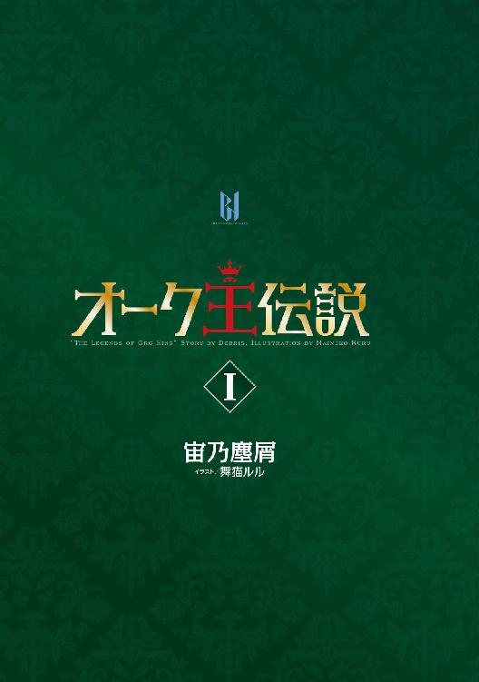
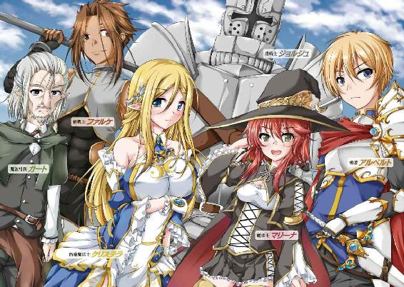
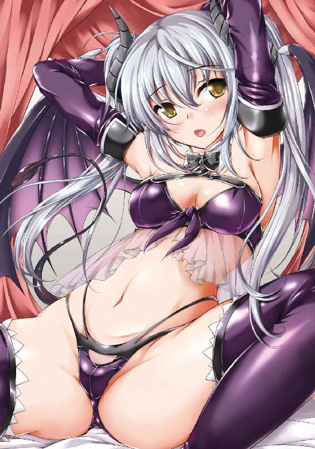
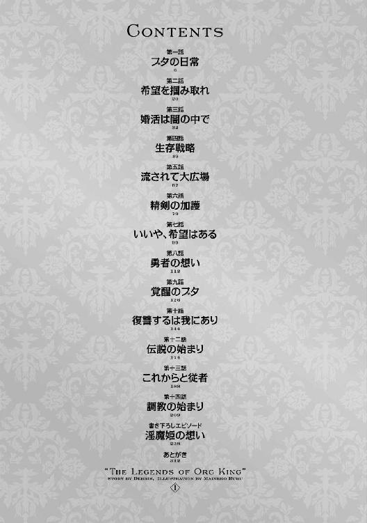
※本作品の全部あるいは一部を無断で複製・転載・配信・送信したり、ホームページ上に転載することを禁止します。本作品の内容を無断で改変、改ざん等行うことも禁止します。また、有償・無償にかかわらず本作品を第三者に譲渡することはできません。
※本作品は電子書籍配信用に再編集しております。
「おいブタァッ、テメ何のろのろ歩いてんだ遅えぞ！」
腹が立つほどの超絶イケメン野郎が俺を怒鳴りつけてきた。
大量の荷物を背負って歩く凡人の苦労も知らないで、勇者様は悠々と聖なる装備を身に纏った軽装姿で苛立たしげな表情を見せている。
「ハハッ、そう言ってやるなってアル。あの豚足じゃ歩幅もねえから仕方ねえだろ」
「歩幅がないのであれば、より早く脚を動かせば良いだけの話である」
チャラ男っぽい細身の槍戦士が俺を庇うような台詞を口にするも、嘲笑しているのが一目瞭然だ。
そしてフルプレートアーマーに身を包んだ巨漢の盾戦士はバケツヘルムの向こうから情け容赦のない言葉を吐き、勇者と槍戦士に同調している。
こいつら三人は幼馴染みらしいからな、今日も一緒に俺をいびって仲良しこよしってか。
「キャハハハッ、そうよブタぁ、あんたマジで遅いんですけどぉ？」
俺の頭上から美少女魔法使いが甲高く笑いながら文句を垂れてくる。
本来は荷馬車で運ぶ量の荷物を俺一人で背負ってるってのに、このクソビッチは荷物の上に座って一人だけ楽してやがる。
「皆さん、そう仰らず、私たちも少しは持ちましょう？ さすがにロミオさんお一人では無理がありすぎます」
我が天使たる治癒魔法士様が穏やかに進言してくださった。
腰元まで流れる優美な金髪とどんな宝石よりも美しい碧眼、傷一つない白磁の如き肌、そして豊満な胸元にくびれた腰など、スタイル抜群の美貌は今日も全てが完璧だ。
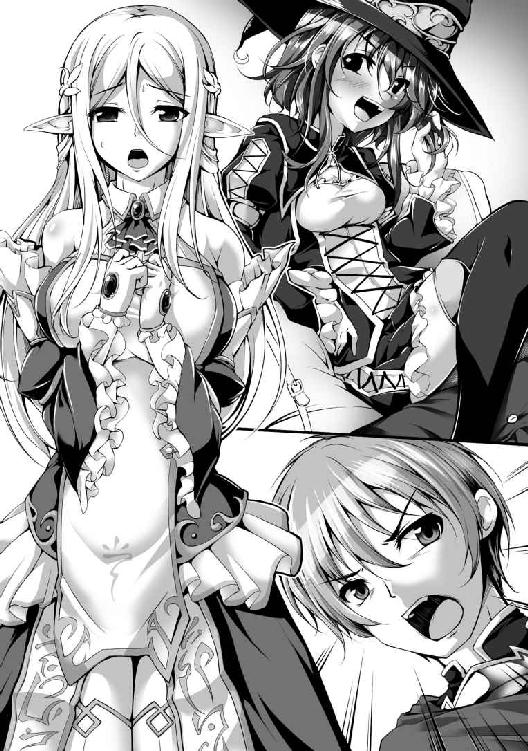
「何を言うておるクリス、お主は荷など背負わんでええんじゃ。そんな力仕事はそこの肉塊に任せとけばええんじゃよ」
魔法弓兵たるジイさんが心優しい孫娘の意見を即座に否定しやがった。
この魔王討伐隊の過酷な旅路を経ても尚、クリステラさんが五体満足の素晴らしい美貌を保持しておられるのはひとえにこのクソジジイの過保護っぷりのおかげとはいえ、そのせいで俺は我が天使の半径三メートル以内に近付くことさえ適わない。
「ですがお祖父様、彼も私たちの仲間ではありませんか。仲間とは苦楽を共にするものだと、そう教えてくださったのは他ならぬお祖父様ですよ」
「ちょっとさぁ、あんた何言っちゃってるわけ？ このブタは仲間じゃなくて奴隷だっつってんじゃん。あんた良い子ちゃんぶるのも大概にしときなよぉ」
クソビッチはリュックの上でふんぞり返り、舌打ちしながら真紅のセミロングヘアを手入れしている。
振り仰いで見てみると、ミニスカが乱れて微妙に中身が覗き見える。
ふんっ、今日も赤か。
たまには白を穿けビッチ魔女が。
「うむ、マリーナの言う通りである。戦えぬ無能のデブは仲間にあらず」
「そうだぜクリスちゃん、あいつは非常食なんだからよ」
「非常食って言ってもぉ、魔族か魔物に食わせる非常用の囮肉だけどねー、キャハハハッ」
「皆さん......」
クリステラさんが悲しそうに柳眉とエルフ耳を下げ、俺に気遣わしげな眼差しを送ってくださる。
その雰囲気からして、更に俺の味方をしてくれそうだったが、しかしそうさせるわけにはいかない。あまり俺に肩入れしすぎると、パーティ内での彼女の立場が危うくなる可能性は否めないのだ。
実際、赤毛魔女のクソビッチはクソ勇者を寝取られるとでも思っているのか、清楚可憐な美女を嫉妬するあまり敵視している節がある。
「ありがとうございます、クリステラさん。でもいいんです、自分は大丈──ぶフぁ!?」
「おいこらブタァ、誰が喋っていいっつったんだよ、アァおい？ テメェは黙って荷馬車の代わりしてりゃいいんだよ不能野郎が！」
クソ勇者アルベルトから腹に蹴りを入れられた。
脂肪の鎧がなければ衝撃を吸収しきれずに上半身が吹っ飛んでたかもしれん。
こいつ素手で魔族も魔物もぶっ殺せるからな、腹立つけどマジでおっかねえ......
「もぅアルったらぁ、蹴るなら蹴るって言ってから蹴ってよねぇ。もう少しで落ちそうになっちゃったじゃぁん」
「不能野郎って、おま......ブハハハッ、こいつのチンコぶった切ったのお前じゃん！ つーかマリーナその声やめろってマジでキモいから！」
「これ若造共、儂の孫娘の前で卑猥な単語は口にするなと言うとるじゃろうが。今度口にしおったらその眉間射貫いたるぞ」
どいつもこいつも、俺のことなんて荷馬車代わりの非常食ブタとしか思っていない。
唯一、クリステラさんだけは出会った頃から俺を一人の人間として見て、優しく接してくれる。
この人がいなかったら俺、今頃は鬱になって自殺してたかもしれん。
なにせ、もう三ヶ月だ。
この勇者一行を名乗る六人に拾われ、来る日も来る日もえっちらおっちら荷物を運び、雑用係として扱き使われてきた。
連中には拾ってもらった恩があるとはいえ、せめて人間扱いして欲しい。
勇者キックによる痛みの余韻を我慢しながら、俺は今日も汗水垂らして草原を進んでいく。
なだらかな丘陵地は広々とした開放感を見せ、ここが魔界や魔國領と呼ばれる魔族共の生息地とは思えない。頭上には雲一つない青空が清々しく広がり、燦々と陽光が降り注いでくる。
たしか俺が拾われた日も、こんな天気の良い日だったっけな。
あれはそう......朦朧と微睡んでいた俺は激痛で目を覚ましたんだ......
『クリスッ、そんな薄汚れた男に近付いてはならん！』
『そんなことを仰っている場合ですか!? もし、もし、大丈夫ですかっ、しっかりしてください！』
闇の中、最初は誰かの声が聞こえたんだ。
いま思い返せば、あのジジ馬鹿丸出しの声と必死な呼び掛けの美声が誰であるかは考えるまでもないな。
『ふむ、このような魔國領の奥地に人間とは......それになぜ全裸の上、このようにだらしのない肥満体なのだ......？』
『うっわ、こいつのチンコすっげえ、これもう馬並じゃねえかっ！ アルとマリーナも見てみろってこれ！』
盾戦士ジョルジュと槍戦士ファルケ。
こいつらは最初から負傷者の心配なんぞしてなかった。
『なんだこのサイズは......』
『ちょっともーやだぁ、なんでブタみたいな男の裸なん......ってヤダなにこれぇ、超ヤバそうなんですけどぉ』
後から聞いた話によると、俺は満身創痍の瀕死状態で倒れてたってのに、こいつらはチンコの話をしてやがった。
仮にも人類の命運を背負う勇者共なら、同胞の心配くらいしろってのによ。
『これは......いけない、早く治癒魔法を......』
『いかんクリスッ、そんな豚の如き男に触れてはお前の手が穢れてしまう！』
『喪失の痛楚、天の陰りの如き暗澹たる惨状は哀憐の苗床。故にこそ富民すらも願い求めん、死気の払除、生気の天来。非力な子等よ祈り賜え、其は挺身の如く、唯一の奇蹟を渇望せよ』
ジジイとクリステラさんの切羽詰まった声は朦朧としていた意識にも良く響いてきた。
ついでに危機感のないクソ野郎共の声もな。
『お？ なんだマリーナ、お前なにモジモジしてんだよ。この馬並見て濡れたのか？』
『なななに言ってんのよ馬鹿ファルケッ、そんなわけないでしょ！』
『............』
『む？ アル、急に聖剣を抜いて如何した。今は特に魔族や魔物の気配なぞは感じぬが』
盾戦士なら、このとき人類同胞を守って欲しかった。
しかしジョルジュはクソ勇者を心の友と思っていて、ドワーフのくせに身長が二メートルにも届く生まれながらの変人だ。
あのバケツヘルム野郎は俺へと繰り出された聖剣の一撃を止めなかった。
だからこそ、半覚醒状態で生死の境を彷徨っていた俺は股間部に激痛を感じ、一気に目が覚めた。
そして俺はチンコを失った。
『一心なる想念にこそ天意は応えん、救済の調べよ光天に響け、賛歌宛らに捧げ賜え。其は暗雲を払うが如く、凶兆たる絶望を払い、安楽たる希望を与えん。嗚呼、救治の光よ、冥き闇裂き彼の者に降り注ぎ賜え、癒し賜え。而して我らが祈請は成就せん、天なる癒しよ顕れよ──〈天黎癒〉』
長々と詠唱していたエルフ天使クリステラさんが慌てて最後まで唱えきり、治癒魔法を掛けてくださったので、全身の傷は一瞬で完治した。
チンコ以外は。
本来、彼女の行使してくれた魔法は欠損部位すら再生させる大魔法だったらしいのだが、なにせ俺のチンコを切断したのは人類の至宝にして至高の剣である聖剣エクスカリバーだ。
聖剣による傷は人族だろうと魔族だろうと、どんな魔法でも治癒不能とされている。しかし、聖神の子等とされる人族に対しては、邪神の子等とされる魔族ほど絶大な効果は及ばないし、クリステラさんはエルフの中でも治癒魔法に秀でたホーリーエルフの才媛らしい。
チンコ本体の再生は無理だったが、断面の傷口は塞げた。
『あ、ぁ......突然のことに焦り、失敗してしまいました......切断されたそちらを傷口に合わせながら行使していれば、癒着させられたかもしれないのですが......』
『何を言うておるのじゃもう良いクリスッ、そんな穢らわしいモノを見る必要なぞないのじゃ！』
あのとき、俺は酷く混乱していた。
目覚めたら血塗れのチンコが地面に転がっていて、なぜか全裸で、しかも超絶イケメン野郎が妬ましくも勝ち誇ったような面で俺を見下ろしてきていたのだ。
『記憶がないのですか？ ご自分のことも何も覚えていらっしゃらないと？ では......そうです、ご自分のお顔をご覧になれば何か思い出すかもしれません。少々小さな手鏡ですが、どうぞ』
『あ、どうもありがとうございま──ってキモ！ なんだこのブサイクすぎるデブは!?』
名前すら思い出せず、超絶キモメンのデブ野郎が自分だと分かった日には誰だって混乱するはずだ。
どうやら俺は外見的に三十路ほどのオッサンで、身長は百六十センチくらいの短足野郎らしい。
勇者を名乗る長身イケメン野郎は十代後半ほどの若造で、赤毛の美少女魔女は十代半ばくらい、金髪エルフな美女は二十歳前後、ジジイは五十路くらいの外見年齢だった。
『フンッ、醜いブタのようなオッサンだな。こんな奴はおれたち人類の仲間じゃない、むしろこんな醜悪なブタはここで殺っておくのが全人類のためだろ』
『おれもそう思うぜ、アル。こいつ肌が緑色だったらオークと見紛うほどだしよ、さすがに人類の一員としてこいつを同胞とは認めたくねえわ』
『何を仰るのですアルベルトさんっ、ファルケさんっ、私たちは一人でも多くの者を守り平和と秩序をもたらすため、魔王を討つべくこの地に足を踏み入れたはずです！』
その後は結局、俺を見捨てようとするクソ勇者共をクリステラさんが根気強く説得してくれて、俺も勇者パーティに同行させてもらえることになった。
俺のチンコを理不尽にぶった切ったクソ野郎には憎悪以外の感情など抱いていないが、ここは魔國領という危険地帯だ。
剣も魔法も使えず、武器どころか記憶すらない身では、連中に頼る他なかった。
今の俺にとって、クリステラさんの存在だけが生きる糧であり、我がガラスハートの支えだ。
「よーっし、今日はここで野営にするぞ」
丘陵地を延々と歩いた末、日が沈む頃に若造勇者がそう宣言した。
俺は思わずその場にへたり込み、一息吐く。
「おいブタッ、テメェなに勝手に座ってんだ！ さっさとテント張れやカス！」
クソ野郎の怒声が今日も俺を容赦なくいたぶる。
お前は俺の張ったテントで今夜もクソビッチとヤリまくるんだろ？
なにが勇者様だ巫山戯やがって......
俺のチンコぶった切っておいて自分だけお楽しみってか。
いつか絶対復讐してやる。
「ロミオさん、どうぞ夕食で──」
「じゃからクリスよっ、こやつに近付いてはならんと言うておるじゃろ！ 食事なら儂が運んだる......ほれ、儂の孫の優しさに泣いて感謝しながら食うのじゃぞ」
「あ、あぁ、そんな、良いのですよロミオさん、本当に泣かずとも......」
境遇の酷さとクリステラさんの優しさに涙しつつ、俺は干し肉を囓る。
我が天使──いや女神様のおかげで食事は普通に与えてもらえるが、量が並すぎて労働量に全く釣り合っていない。我ながらこの三ヶ月で結構痩せたと思うが、まだまだ全身が脂肪に覆われたこの身は十二分に肥満体型だ。
「っていうかさぁ、いい加減そのロミオとかやめなよねぇ。こんなキモメンのオッサンデブはブタで十分じゃない」
「いやでもよ、よくよく考えてみれば豚に失礼じゃね？」
「うむ、ファルケの言う通りである。豚は食えるがこのブタは食えぬ。どちらが人類に貢献できる存在かは論じるまでもない」
そうかよ、どうせ俺は豚以下の人間ですよ。
だが、そんな俺にクリステラさんはロミオという名前を授けてくださったんだ。
更には余っていた布で俺の服まで作ってくれて、腰布だけ巻かせておけば十分とか宣ってやがったクソ野郎共とは心の綺麗さが別次元だ。
嗚呼、クリステラさん......我が女神......どこまでも貴女様についていきます。
「ブタのことはどうでもいい。それより......みんな、最近どう思う？」
ふとクソ勇者が真顔になって仲間たちに問い掛けた。
焚火に照らし出されるイケメンは夜闇の中で憎々しいまでに眩く映え、クソビッチなどは両目をハートマークにして見とれてやがる。
クソが......いつかテメェのチンコをぶった切ってクソビッチを寝取ってやる。
と思ったけど、もう俺にはチンコないから無理だった。
「最近か、そうだなぁ......どうにも魔物の数が減ってきたよな」
「自分もファルケに同意である。魔族共の町が近いのであろうな」
「そーいえばぁ、あの拷問した......兎耳族だっけ？ アレの言うことがホントなら、そろそろ中魔族の領地なのよねー？ 王都はまだなわけぇ......もういい加減サクッと魔王でも何でもぶっ殺して帰りたいんだけどぉ」
「魔國領は広大ですから、王都はまだ遠いかと思われます。出発してもう半年以上ですが、これからが正念場となるでしょうし、気は抜かず行きましょう」
ビッチが気怠そうに愚痴を溢すと、女神がやんわりと引き締めにかかる。
その御言葉にジイさんが至極もっともだと言わんばかりに力強く頷いた。
「うむ。しかし焦らず慎重に、ゆっくり急いで行かねばの。そして確実に魔王を抹殺するのじゃ。今代の魔王は力こそ弱いが、絶大なカリスマを有しておると聞く。奴を殺せさえすれば、八大部族の統率は乱れ、必ずや我ら人類が大戦に勝利できるじゃろうて」
「そうだな、おれたちが魔王を倒せさえすれば、奴らは内部崩壊を起こして自滅するはずだ。出発前は人類側が劣勢だった......おれたちが魔王を倒し、人類を救うんだ！」
超絶イケメンの若造が珍しく勇者っぽいことを意気揚々と宣ってやがる。
正直、記憶喪失の俺には魔王だの大戦だのどうでも良いことだ。
俺はただ静かにのんびりとハーレムでも作って爛れた生活を送りたい。
もうチンコないからその夢は永久に叶えられないけど......
チックショウ......このクソ勇者様が......っ！
今夜あたりビッチとヤッてるときでも狙って暗殺してやるか？ しかし、そんなことをすれば我が女神は嘆き悲しみ、もう二度と俺に優しさを向けてくれなくなるだろう。
至高の存在に恩を仇で返すことはできん。
べ、べつに返り討ちが怖いわけじゃないんだからねっ！
「おい聞いてんのかブタァ！」
「──っぶふぉ!?」
いきなり脳天ぶっ叩かれた。
声の主に目を向けると、確実に十は年下なイケメン野郎が顔をしかめて俺を睨んできていた。
「テメ今夜は寝ずに番としとけよ」
「え、そ、そんな、今日はもうクタクタで眠──ぃぶゅ!?」
「いいからやれっつってんだろクソが！ それともテメェ、この魔國領の真っ只中に一人置いてかれてえのか？ アァおい？」
「アルベルトさん、暴力はいけません。それにいくら何でも無茶を仰りすぎではありませんか。ロミオさんは今日も私たちの荷を一人で運んでくださったのですから、しっかりと休──」
「貴様この役立たずがっ、儂の孫娘にいらん気を遣わせおってからにぃ！」
「やめてくださいお祖父様！」
結局、我が女神の奮闘も虚しく、今夜は不寝番をすることになってしまった。
所詮、俺は役立たずの超絶キモメンなデブ野郎だ。下っ端の雑用係として無茶振りされる仕事をこなし、クソ野郎共のパワハラに耐えてさえいれば、魔物の脅威から守られてメシにありつけ、なんとか生きていける。
でもさ、何事にも限度ってもんがあるだろ......？
もう嫌だ......転職したい......
翌日。
西へ西へと丘陵地帯をえっちらおっちら歩いていると、巨大な裂け目を発見した。
俺たちの進行方向に対して垂直に──南北にどこまでも亀裂が走り、向こう側までの幅は優に三百メートルを超えているだろう。
「すっげえ......なんだこれ、どうやったらこんな地割れができんだよ」
槍戦士なチャラ男が断崖絶壁にまで近付き、下を覗き込みながら驚嘆の吐息を溢している。
ここで偶然を装い、奴の背中を押してやれば真っ逆さま......という思考が脳裏を掠めたが、そんなことをすれば罰として俺まで真っ逆さまの刑に処される。
いびられるのは死ぬほど辛いが、死んでしまえば辛いとも思えない。
生きていれば、きっと何か良いことあるさ。
「天災による断裂にしては規模が段違いだな......まさか、《三魔宝具》か何かの力でできたものなのか......？」
「ううむ......アルと聖剣の全力を以てしても、これほどの谷はできまい。これが《三魔宝具》か何か未知の力によるものだとすれば、些か厳しい戦いとなろう」
さすがの勇者と盾戦士も、畏怖の念を滲ませて唸っている。
しっかしこれ、底が見えねえぞ......落ちたら一巻の終わりだな。
「あそこに橋あるけどさぁ、どうする？」
クソビッチの指差す先には大きな吊り橋が架かっている。
結構なボロだが、まあ渡れなくもなさそうだな。
周囲に人気というか魔族の姿はないし、渡るならさっさと渡っちまおうぜ。
「渡っている最中に橋が崩れでもしたら大変じゃ。ここはマリーナの魔法で向こう側まで行った方がええじゃろ」
「そうですね、少々魔力は消費させてしまいますが、お願いできますかマリーナさん」
「えー、なんでよぉ、橋あるんだから橋で行けばいいじゃーん」
「マリーナ、頼む」
「はぁーいっ」
渋っていたクソビッチだったが、愛しの勇者様に言われて即座に頷いてやがる。
にしても、本当にすごい裂け目......というか谷だ。
これ全長何キロあるんだろ、左右を見ても確認できる限り果てなく続いている。
魔王とか、マジでこんな若造勇者に倒せんのか？
「では念のため、まずは自分が向こう側へ行き、安全を確保する。皆はその後に来るのが良かろう」
「おうっ、頼んだぜジョルジュ！」
といっても、周囲に敵影なんてない。
この三ヶ月、俺も魔族や魔物の姿は何度も見掛けたことがある。
しかし、この勇者パーティの至上目的は魔王の抹殺であって、敵地の町や村を襲撃して損害を与えることではない。そんな目立つことをしていては目的の遂行が困難になるため、これまでは魔族共に見つからないようにこっそりと進んできた。途中で街道を行く魔族の商隊なんかは襲ったりしていたが、それは情報収集や食糧補給のためだ。
「じゃ、いくわよ」
赤毛の美少女ビッチが盾戦士に杖を向けると、先端の赤い魔石が仄かに光り、野郎が吹っ飛んだ。
吹っ飛んだというより、見えない何かに背中を押されて一直線に滑空していったという方が正しいか。聞くところによると、闇属性中級魔法の〈霊斥〉とかいう魔法だそうな。本来は詠唱が必要なのだが、このビッチは詠唱を省略して行使できる才女らしい。
白銀のフルプレートアーマーは瞬く間に小さくなり、向こう側に到着した。
見た感じ、向こうはこちらより少しだけ低地だな。
しばらくすると、奴が身の丈ほどもある大盾の一つを高く掲げて、こちらに合図を送ってくる。
「んじゃ次はおれ頼むわ」
クソビッチの魔法によって、今度はチャラ男が向こう側に飛んで行った。
「次はクリステラだな、マリーナ頼む」
勇者の指示で我が女神たる金髪エルフ美女が中空を滑るようにして、幅広な谷を渡っていった。
あぁ......俺は常にあの人の美貌を視界の端にでも収めていないと、今にも窒息しそうになる。
「次は自分をお願いします」
「なァにを言っとるか馬鹿モンッ、次は儂に決まっとろうが！」
そういえば、このジジ馬鹿も女神の側にいないと窒息するんだったか。
「そうだぞクソブタァッ、テメェは最後だボケ！」
「......はい、すみません」
「っていうかさぁ、あんたなに勝手に口開いてるわけぇ？ 息臭いし声キモいし、許可したとき以外は喋るなって前言ったわよねぇ」
思わず言い返したくなるが、我慢だ。
今夜もこいつを脳内でヒィヒィ言わせたる。
「おい待て、アレなんだ......？」
クソビッチが今まさにジジイに杖を向け、先端の魔石が光りかけたとき。
不意に勇者が向こう側を指差した。
谷の向こうにもこちらと同様に丘が広がっているが、その丘の稜線から何かが出てきた。
目を凝らしてよく見てみると、それは......
「あれは、まさか......オークか!?」
「なんでこんな場所でタイミング良くあんなに出てくんのよ!?」
「えぇいっ、驚いておる場合ではないぞ！ 早う儂の愛しい孫娘をこちら側に引っ張るのじゃマリーナ！」
丘の向こうからはオークの集団が続々とその姿を現している。
パッと見ただけでも数百はいて、その数は現在進行形でどんどん増えている。
遠目に見た限りでも緑の体色と丸っこい肥満体型をしているのが見て取れた。軽装から全身鎧を着ている重装な奴まで様々で、しかし一様に剣や槍を手にして「ムオォォォォ！」とか叫びながら突進してくる。
「って、ちょっとなんか後ろからも来てんですけど!?」
クソビッチが振り返って驚いた声を上げたので、釣られて俺も背後を見た。
すると、向こう側と同様にオークの大集団が丘の陰から次々と出現し、こちらに迫ってくる。
「なんだっ、どういうことだ!? なぜこんないきなり奇襲を掛けられている!?」
「おおおぉぉぉぉっ、クリスゥゥゥゥゥゥゥ！」
......そういえば昨夜、不寝番をしてるとき、なんか変な人影を見た気がする。
でもあのときは疲労困憊で意識が朦朧としていて、見間違いだったときの罰が怖くて黙っていた。
もしかしたら、あれオークの斥候かなんかだったのかもしれん。
魔族側には勇者一行が魔國領に潜入していることは露見していないはずだが、これまでにクソ勇者共は何度か魔族共を襲っていた。そのときに実は一人二人くらい取り逃がしたりしていて、黄金の剣を持った超絶強い人間がいるという話が広まっていてもおかしくはない。
ここってもう中魔族ことオーク共の領域だし、俺たちが気付かなかっただけで、警戒網とかに引っ掛かった可能性は否めない。
「アル、どうする？」
「あまり目立ちたくはなかったが、こうなった以上、殲滅するしかない。奴らを血祭りに上げて、一匹は尋問するために捕らえる」
「そんなことはええから早う儂を向こう側に送れと言うとるじゃろがマリーナァ！」
「はーいはい、分かったから唾飛ばさないでよガートぉ」
オークの出現に驚いていたクソ勇者とクソビッチだったが、早くも落ち着いている。
敵集団はこちら側と向こう側の数を合わせれば目算で軽く二千以上はいるはずだが、この程度は敵にすらならないのだろう。
それくらいこいつらが強いということは俺も知っている。
「クゥゥゥゥゥリスゥゥゥゥゥゥゥッ！」
「よし、ではまずは向こう側の敵を全員で片付けよう」
エルフジジイが勇ましく女神の名を叫びながら飛んで行くと、超絶イケメン野郎がそう言った。
「えぇー、べつにいいじゃん。向こうは四人に任せてさぁ、あたしらは二人で一緒にあいつらぶっ殺そう？」
「どんなときでも油断大敵だ、安全確実に行こう。おれはともかく、お前たちに何かあってからでは悔やむに悔やみきれん」
「あぁんっ、さすがアル優しいぃ！ でもぉ、こいつはどうするぅ？」
「ふぇ......？」
突然、若造とビッチの二人から目を向けられた。
オーク共は既に百メートルくらい先まで迫ってるってのに、やはり全く焦燥感などは見せておらず、むしろ落ち着き払っている。
それはいい、実に頼もしいことだ。
しかし......あのオーク共に向けられていた視線と今まさに俺に向けられている視線が同質だと思うのは気のせいだろうか？
まるでウンコにたかるハエでも見るかのような眼差しだ。
「これまではさぁ、クリステラがどぉしてもって言うからぁ、こいつ同行させてやってたけどさぁ」
「ああ」
「正直ぃ、このブタ邪魔じゃん？」
「そうだな」
お、おい、なんだお前ら、なんだその目は、やんのかウンコ野郎。
「おいブタ、そのリュック下ろせ」
「え......い、嫌です」
「いいから下ろせっつってんだろ！」
闘気と聖剣の加護によって強化された勇者の腕っ節に敵うはずもなく、俺は抵抗虚しくあっさりと巨大リュックを奪われた。
既にオーク共の大軍は五十メートル先まで迫っている。
「キャハハハッ、事故死ならクリステラも文句言えないよねぇ！」
「そうだな。クリステラには悪いが、これも彼女のためだ」
二人はふわりと宙に浮き上がった。
勇者のブーツが飛翔靴という超希少な魔法具であるらしいことは知っている。
そしてビッチは天才魔女であり、その卓越した魔法力を駆使すれば自分一人が空を飛ぶことくらい朝飯前だ。どちらも相当に魔力の消耗が激しいらしいから、あまり使ってはいなかったが......
今日のパンツは黒か、コンチクショウ！
「ま、ままま待ってくださいぃぃぃ！」
俺は咄嗟に勇者が片手で楽々とぶら下げている巨大リュックに飛びついた。
このままでは死ぬっ、不味いっ、こんなところで死んでたまるか！
「このブタァッ、しがみついてんじゃねえぞクズが！」
「超キモいんですけどぉ、さっさと下りなさいよバーカ！」
「ぶへぅ!?」
クソビッチから杖で何度も叩かれるが、俺は放さない。
放せばオーク共にぶっ殺されて人生が終了する。
記憶どころかチンコがなくても、超絶ブサメンのデブでも、俺はまだ生きていたいのだ。
「チッ、いい加減にしやがれ！」
「ぅお!?」
聖剣エクスカリバーで突きを入れられたが、辛うじて回避する。
しかし野郎には一片の情け容赦もなく、続けて刺突攻撃を繰り出された。
当たりそうになったので思わず手を放してしまう。
「クッソ、ちょっとリュック切れちまったじゃねえか！」
「アル、早く行こーよぉ、それくらい後でクリステラに縫わせればいいじゃぁん」
「そうだな」
クソ勇者は溜息と共に頷くと、地べたに這いつくばる俺を嘲笑しながら見下ろしてきた。
「あばよ、ブタ野郎。テメェはブタらしくオーク共に食われて死ねや」
「あ、でもそれってぇ、共食いだよねぇ、キャハハハハッ」
「待ってっ、待ってくださいお願いしますぅぅぅ！」
俺の必死の呼び掛けに待ってくれるはずもなく、クソ勇者とクソビッチは二人仲良く空を飛んで向こう側へと渡っていく。
その直前、白い何かがひらりと宙を舞った。
パンツだ。
リュックの破れ目からこぼれ落ちた穢れなき純白のパンツが谷底へ落ちようとしている。
「............」
俺はちらりと背後を振り返った。
「ムゥオオオオオオオオオオォォォォッ！」
まるでブタの如きブサイク面をした緑肌のオーク集団が雄叫びを上げ、もう十メートルくらいのところまで迫って来ている。
戦っても勝ち目がないことは明々白々であり、逃げようにもこんな谷に落ちたら確実に死ぬ。
進んでも退いても死ぬならば、どうするか。
男ならば、せめて希望のある方へ突き進むのみだ。
「ぬぅおおおおおおおおおおぉぉぉぉっ！」
俺は渾身の雄叫びを上げながら足を踏み出した。
どうせならば最後は華々しく散りたい。
「──ッ!?」
背後のオーク共が驚愕して息を呑んだのが分かった。
と同時に、断崖絶壁から全力で飛び出した俺は純白のパンツを掴み取る。
この白さ......間違いない、これはクリステラさんのパンツ！
直接拝見したことはないけどあのビッチが純白を穿くはずないから消去法的に女神の聖衣っ！
「──っ!?」
身体が重力に引かれ始めたとき、俺は遅まきながらも気が付き、思わず目を疑った。
これは、この微かな染みは、まさか......
まだ洗濯されていない......使用済みパンツ、だと......っ!?
俺は落下しながら、どんどん遠ざかる青空に感涙の雫がこぼれ落ちていく光景を見ながら、パンツと一体化した。
染みのあるクロッチ部分がちょうど鼻の位置に来るように、覆面のように被った。
「ありがとうございました......クリステラさん......」
最後の最後で女神に近付けた幸福に感謝ながら、俺はゆっくりと目を閉じた。
願わくば、クリステラさんが無事でありますように。
そうして、俺は無明の闇の如き谷底へと落ちていった。
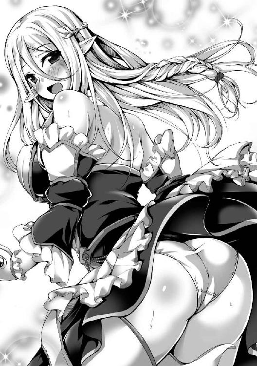
「ぅわあああああああああああああああああああ!?」
俺は落ちていた。
圧倒的な落下感に見舞われて痛いほどに肝が冷え、あまりの恐怖に叫び声を上げる。
さっきはクリステラさんのパンツで少し心が落ち着いて死を受け入れかけたが、やはり死にたくはない。
怖いものは怖いし、せっかく聖なる衣を手に入れたんだ。
「い、いやっ、ダメだっ、どうせ死ぬなら......っ！」
とはいえ俺がどう思おうと、この身が奈落の底に叩きつけられて破裂するのは時間の問題だ。
ならば、もはや残された極僅かな時間を有効活用するしかない。
今のうちに芳潤な香りを堪能し、まさに天にも昇る気持ちのまま死にたい。
「すぅぅぅぅぅぅぅはぁぁぁぁぁぁぁぁぁ」
俺は大きく深呼吸をした。
鼻から吸って、口から吐く。
なんかよく分からん花の香りがした（気がする）。
かつてない多幸感に見舞われて脳が蕩け始めたので、俺は目を瞑り、胸の前で両手を組んだ。
さながら敬虔な信徒の如く、俺は女神へと感謝の祈りを捧げる。
そして全身から力を抜いて来たるべき衝撃に備えつつも、深呼吸は止めない。止められない。
「........................」
ん、あれ......？
なんだ、いつまで経っても衝撃が来ない。
まさかこの谷、そこまで深いのか？
と思った直後、重力に引かれる前代未聞の落下感が消え失せていることに気が付いた。
「............ん？」
恐る恐る目を開けてみると、すぐ側に光が見えた。
周囲は完全に無明の闇なのに、ぽつんと虚空に小さな光が灯り、そのすぐ横に顔がある。
美少女の顔だ。
「............」
「............」
しばし見つめ合う俺たち。
俺は上下逆さまでなぜか宙に浮いているので、美少女の顔も上下逆さに見えている。
それでも相当に可愛いことが分かる。
大きく見開かれた双眸の奥には妖しく黄金に輝く瞳が俺を映し、ツインテールの銀髪が彼女自身の右手に宿る光球により、闇の中で繊美な煌めきを放っている。両の側頭部あたりには捻れた太めの角がやや上を向いて生えていて、くっきりとした目鼻立ちも相まって内面の快活さが窺い知れる。
周囲全てが闇と静寂に包まれた中、俺たちは互いに瞠目して見つめ合い続ける。
「............え、角？」
「ふぅぇあ!?」
俺が疑問に眉根を寄せると、美少女が素っ頓狂な声を上げて後退した。
今さっきまでは近すぎて顔しか見えなかったが、美少女はかなり際どい格好をしている。
紫色のブラジャーとパンツ、そして同色のロングブーツとロンググローブしか綺麗な素肌を覆い隠していない。
「あなた......え？ なんで上から......？ ていうか、なんでパンツ被ってるの......？」
たぶん魔法であろう光球を浮かせている右手と、俺を指差す左手を震わせながら、困惑の声を漏らす美少女。
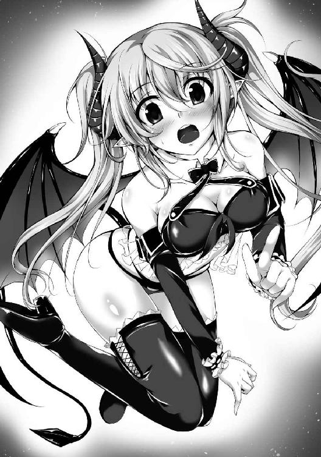
周囲の闇に溶け入りそうで見え辛いが、彼女の背にはコウモリめいた濃紫の翼が見える。
「............」
「え......え？ な、なんか言って......？」
ふむ、可愛い子だな。
おっぱいは特に大きくも小さくもないが、頭から爪先まで均整の取れた身体付きは理想的なスタイルといえる。
ここには俺と彼女以外、誰もいない。
これで相手がサキュバスっぽい見た目をしていなければ、今すぐにでも襲いかかりたいくらいだ。
あ、でも俺チンコないんだった。
「......その、肌の色......あれ、じゃああなたが......？ でもなんでこんなところに？ あっ、もしかしてこの上で......あれ、でも......あれ？ あれ？」
いや待て、なんで俺は死んでないんだ？
おかしいだろどう考えても。未だに俺が生きているはずがない。
しかもなんか宙に浮いてるし、明らかに普通の状況じゃない。
つまりこれは......夢？ 幻覚？
「あなた......落ちちゃったの？ 人間共は？ ていうか、こんな偶然わたしの前に落ちてきたの......？」
ま、なんでもいいか。
目の前に俺好みの美少女がいるんだ、せめておっぱいを揉んでみたい。
これが夢幻の類いなら、それはそれで問題ない。
本当に助かっていたとしても、一度は死を覚悟したんだ。もう何がどうなろうと知ったことか。
クソ勇者共に抑圧されて過ごしてきた日々のストレスは、もうおっぱいでしか発散できない。
「それって......え？ すごい偶然っていうか、運命？ いきなり空から降ってくるとか......なにそれ、普通あり得ないよね......？」
相手が淫魔ならおっぱいの一つや二つ揉ませてくれるだろ。
それで吸精でも何でもされて死んだとしても、むしろ本望だ。
うん、そうだ......よし、恐れるものは何もないのだ！
「お嬢さん」
「──ふぇ!? え、ぁ、わたし？」
「突然で申し訳ありませんが、おっぱいを揉ませていただけませんか？」
俺は紳士だからな、丁寧に行く。
こんなキモメンのデブなら、俺は童貞だったはずだ。
初心者に無理矢理はキツいし、サキュバスだろうと初対面の美少女に無礼はいけない。
「お、おっぱい......？」
「おっと、これは失礼いたしました。名も名乗らず淑女のおっぱいを揉ませて欲しいなど、紳士にあるまじき失態......どうかお許しください。私の名はロミオ、よろしければ貴女のお名前をお聞かせ願えますか？」
「ぇ、あ、わたし......ミルティス......」
呆然とした顔で俺を見つめながら、たどたどしく答える銀髪ツインテ淫魔美少女。
「ほお、ミルティス......大輪の花が今まさに咲き誇らんとする貴女にこれ以上なく相応しい可憐な名ですね」
「あ、い、いや、そんな......ことは......」
戸惑いを見せながらも、どこか嬉しそうにはにかむ美少女ミルティス。
可愛いなぁおいっ！
というか......え、これってマジでイケるんじゃね......？
「では改めまして、ミルティスさん」
「は、はい」
「おっぱいを揉ませてはいただけませんか」
至極真面目な感じに表情も声音も引き締めて問い掛ける。
といっても、今の俺はパンツで顔の半分くらいは隠れてるから相手には伝わらんかもしれんが。
「え、えっと........................い、いいです、けど......」
おおっ、さすが淫魔！ 気前がいい！
しかも微妙に恥ずかしがってるとこなんか初々しくていい感じだなおい！
「で、でも、その前に、顔を見せて」
「......゛え」
かお......顔、だと？
い、いや待て、それは不味いんじゃないのか......？
デブというだけならば未だしも、俺レベルの超絶キモメンだと知られたら、さすがのサキュバスも冷めるかもしれん。
俺の素顔とパンツ覆面、どちらがマシかと問われれば、断然後者のはずだ。
「か、顔、ですか......」
「うんっ、顔！」
「い、あ......そうですか、分かりました」
銀髪でツインテな美少女から期待と恐れが入り混じった純真な瞳で力強く見つめられては断れなかった。
しかし、問題はない。
「本来、礼儀として素顔を晒すことは至極当然の常識でしたね。ですが、非常に失礼なお願いなのを重々承知で申し上げますと......先に、おっぱいを揉ませてはいただけませんか」
「え、先に......」
いかんっ、反応が芳しくない！
「も、もちろん、貴女にとっては不快かつ抵抗感のあることでしょう。突然現れた、女性の下着を被った見ず知らずの変質者に、おっぱいを触らせる。常識では考えられない変態の如き淫猥な所業です」
「え、でもわたし、淫魔族だよ......？」
「見たところ、そのようですね。しかし、貴女が可憐な美少女であることに変わりはありません。そして私が女性の下着を被った見ず知らずの変質者である以上、私のお願いが無礼であることにも変わりはありません」
「────」
唖然とした顔でじっと見つめてくる。
相手が少女とはいえ、サキュバス相手に綺麗事を言いすぎたか？
いや、もう引き返せんっ、この勢いで突っ走る！
「お願いです、どうかこの通り、先におっぱいを揉ませてください」
俺は頭を下げた。
美少女とは上下逆さまで闇の中に浮いているから、下げる前より頭の位置が高くなってしまうが、そんな表面上のことはどうでも......って、あれ？
なんか下の方に微かな光が見えるぞ。
闇の中をすーっと細く線状に光ってるってことは、もしかしてアレって裂け目なんじゃね？
ということはつまり、ここは谷の奥深くで、でも俺は上下逆さに浮いてるってことになる。
うん、よし、今はおっぱい以外考えないようにしよう。
「う......ん、いいよ......？」
「おおっ、ありがとうございます！」
「た、ただし、十秒だけねっ」
「十秒もよろしいのですか!?」
顔を上げると、美少女はモジモジしながらも、どこか恥ずかしげに視線を泳がせている。
美少女以外は闇一色なせいか、小さな光に照らされる肢体に俺の意識は集中せざるを得ない。傷一つない素肌や下着姿同然の半裸体は少女らしからぬ艶めかしさを秘めており、妙に劣情を掻き立てられる。クソ野郎にぶった切られていなければ、息子は今頃完全に臨戦態勢をとっていただろう。
「で、では......ぐ、あれ、う、動けん......？」
美少女に近付いてきちんと向き直ろうとしたのに、身体が動かなかった。
いや手足は動くんだけど、いくら頑張っても前後左右上下にも進めず、身体の上下を反転させることすらできない。
「いいよ、わたしも逆さになるから」
淫魔で銀髪ツインテな彼女は背中のコウモリめいた紫翼を微かに上下させて、くるっと逆さになって近付いてきた。しかしツインテールは垂れ下がることなく、毛先は変わらず足下を向いている。
というか、今気付いたけど、尻尾もあるな。
翼と同色で細長く、先端が平たい菱形になっている。
「じゃ、じゃあ、えっと......どうぞ......？」
俺の手が届くところまで近付いてくると、美少女は両手を後ろ手に組み、やや胸を突き出してきた。彼女の右手に光源があったので、美少女自身の身体で光が遮られて顔やおっぱいがほとんど何も見えなくなる。
「ミルティスさん、光を前に出してはくれませんか」
「それは......嫌、ダメ、なんかちょっと......恥ずかしいし......」
少女とはいえサキュバスが恥ずかしがるとはどういうことだ。淫魔ってのは性に開放的で、むしろおっぱい揉まれるときの顔を見て欲しいとか思ってんじゃないのか？
しかし、ここで強引に頼めばこの好機自体がご破算になる可能性がある。
「なるほど、失念しておりました、申し訳ありません。たしかに女性からすれば、羞恥心を覚えて然るべき行為。見られたくないのは当然でしたね」
「で、でもわたし、サキュバスだよ......？」
「ですが、貴女は年頃の可憐な美少女でもあります」
「────」
なぜか息を呑んで硬直する美少女。
表情なんかは暗くて分からないが、背中から漏れる光で身体の輪郭などは分かる。
「ところでミルティスさん、服を脱ぎ忘れていますよ」
「え......？」
「え？ 当然、生で触らせていただけるのですよね？」
さも当然の真理を否定された風を装った。
こうして自然に要求すれば、生を拒絶されても行為自体を拒絶されることまではないはず。
「な、生......う、わ、わかった」
躊躇いがちに可愛らしく呟き、ミルティスは背後に回していた左手を胸元に持っていった。
そしてたぶんブラジャーそのものをたくし上げて、モジモジしながら再度後ろ手に組んだ......と思う。暗くてよく分からんからな。
「で、では......触りますよ」
「......ぅん」
了承の声が小さく返ってきたので、俺は身体の輪郭から位置を推定し、ゴクリと唾を呑んだ。
クソ勇者共に拾われてからこっち、女体に触れるのはこれが初めてだ。
おっぱい......おっぱいの感触って、どんななんだ？
「............」
俺は心臓が早鐘を打ち始めるのを自覚しつつも、緊張に強張った両手をゆっくりと近付けていく。
そして、触れた。触れてしまった。
「ん......っ」
ふみょん、とした。
微かな吐息が美少女から漏れ出るのも気にせず、俺は十指を沈めていく。
張りと弾力があるのに、俺の知るどんなものよりも柔らかい。両の掌中央には他と感触の違うポッチの存在が確認できるが、今は気にしている余裕がなかった。
なんだこれは、なんなんだこれは......っ！
「は、はいっ......終わり！」
「え......？」
急に手を振り払われた。
十秒？ え？ もう十秒経ったの？ 嘘だろまだ一秒だろ？
完全に光の消えた闇の中で、しばしごそごそと蠢く気配がした後、再び光が生まれた。
ミルティスはやや釣り目がちな活発そうな美少女顔を赤く染め、俺をチラチラと見てくる。
あかんです、可愛いです、もっと揉みたいです。
俺はチンコないから、相手が淫魔だろうと精を絞り尽くされて殺される危険性はない（と思う）。
直接的な手段でぶっ殺されるにしても、こんな美少女に手を出した末の結果なら甘んじて受け入れよう。
だからもう一回触らせて欲しい。
「じゃ......じゃあ、顔見せて......？」
「............」
しかし、こんな初々しそうな美少女に無理矢理襲い掛かっていいのか？
というか、いつの間にかミルティスは俺の手がぎりぎり届かないところまで後退している。
ここは当初の約束通り、顔を見せてやるのが筋ってやつだが......
「......分かりました」
うん、そうだな、筋は通さなきゃな。
クソ勇者共みたいに卑劣な真似はしちゃいけない。
こんな前代未聞の超絶キモメンのブタ野郎（たぶん三十路くらい）が、淫魔とはいえ美少女のおっぱいをちょっとでも触れたんだ。
十分じゃないか、望外の幸福だよ。
これで悔いなく死ねるってもんだ。
「あ、予め言っておきますが、素顔を見ても驚かないでくださいね」
「うん......わかった」
俺の緊張にあてられたのか、ミルティスの方も硬い声でぎこちなく頷く。
しかしどうせならマ○コの方も見て触りたかったなぁ......などと思うことで現実逃避しながら、俺は覆面のように装着していた女神の聖なる衣を外し、丁寧に畳んでポケットにしまった。
さあっ、キモいだのクサいだの死ねだの言って煮るなり焼くなり好きにするがいいさ！
「────」
愕然と両目を見開き、口を半開きにして見つめられる。
美少女から蔑視されていると思えば快感を覚えないでもない......わけねえだろ、俺はマゾじゃねえんだよ。
「や......やっぱり......」
やっぱりキモメンだったって？
そりゃあ俺みたいな低身長デブの顔なんてある程度は予想できてただろうね。
この子の身長は......見た感じ俺と同程度だが、横幅は俺の四分の一くらいだ。
「この、聖地で......こんな......タイミング良く......わたしの、目の前に......降ってきて......？」
俺から目を逸らさぬまま、震える声でなんかブツブツと呟き始めた。
どうにもあまりのキモメンっぷりに衝撃を受けすぎて、まともに思考できていないっぽいな。
はぁ......もう自殺しようかな......いやマジで......
「......しかも、神子様で......紳士だし......こんな、こんな......格好良いなんて......」
ん？ 今なんか格好良いとか言わなかったか？
いや......いやいやいや、格好悪いの聞き間違いだろ、うん。
「あ、あのっ！」
「──ぅお!?」
呆然としていた美少女から突然詰め寄られ、俺は思わず仰け反った。
興奮も露わに頬を染め、口元には純情可憐な笑みを咲かせて、金色の瞳を宝石のようにキラキラと輝かせながら至近距離から見つめてくる。
「ロミオ様は独身ですか!?」
「え、あ、そりゃあ、まあ......」
記憶喪失とはいえ、こんな超絶ブサイクのデブ野郎に嫁がいなかったことくらいは分かる。だから当然子供だっていなかったはずで、そもそも俺の股間にはいるべきはずの息子すらいないので、正真正銘の独り身だ。
ていうか......様って、君ね？
俺は淫魔を含む魔族と敵対している人間なんだからさ。
「でっ、では！ ではわたしと結婚してくださいっ！」
「............え」
え？ ケッコン？ ケッコンってなんだ？
血痕......けっこん......結婚......？
「す、すみません、もう一度お願いします」
「わたしとっ、結婚してくださいっ！」
「........................結婚」
俺の脳内で様々な単語が飛び交った。
美少女、おっぱい、結婚、人間、チンコ、聖剣、マ○コ、クリステラさん、おっぱい、淫魔、キモメン、死んだ、闇、デブ、おっぱい、クソ勇者、息子、人生、吸精、おっぱい、エッチし放題。
「もちろん、喜んで」
「ほんとに!? やったーっ！」
こうして、俺は彼女と出会った。
やっぱりね、世の中ってやつは上手いことできてんのよ。
出会ってすぐ俺のチンコぶった切ってブタ扱いした末に見捨てる外道がいれば、出会ってすぐ俺におっぱい揉ませてくれた末に結婚を申し込んでくる美少女がいる。
何事にも均衡ってやつがあるんだよ。
「やったやったぁーっ、やっぱり運命ってあるんだね！」
「ふぐぃ......ぅ、ごが......」
無邪気に喜ぶ美少女に抱きつかれるのは最高だが......
この子、なんて怪力だ......いや魔族じゃこれが普通なのか？
と、とにかく痛い......苦しい......でも柔らかい......っ！
「ミ、ミル......ティス、さん......すこ、少し......落ち着、いて......」
「え......あ、あぁっ、ごめんねっ、いきなり抱きついたりして！ まだ出会ったばっかりなのに、急すぎだよね」
いやそれはツッコミ待ちなのか？ そうなのか？
なんか痛みと苦しみのせいでちょっと冷静になっちまったじゃねえか。
こうなったら、ひとまず状況を整理してみよう。
──谷に落ちたと思ったら淫魔と出会っておっぱい揉んだら結婚することになった。
ダ、ダメだ......正気で思考したらついていけん......
疑問が溢れすぎて混乱する。
こういうときはおっぱいを揉んで冷静になるべきか。
「ミルティスさん、失礼します」
「──ふぇ？」
俺はすぐそこにあった双丘に両の手を這わせた。
さっきは暗くて分からなかったが、今回は指先がおっぱいに沈み込む様がよく見て取れる。
革製っぽいブラジャー（というか水着？）でおっぱいの半分くらいが覆われているので、先ほどと比べて柔らかさはイマイチだ。
しかし、それでも尚、この世のものとは思えない至高の感触を一揉みするごとに、思考が鮮明に澄み渡っていくのを自覚できる。
「ぇ、ちょっ......ぁんっ、な、なんでいきなり......っ？」
「愛しい婚約者の胸です。触るのに理由が必要なんですか？」
「い、いや、それは......ふぁっ、ん......」
微妙に艶めかしい響きの美少女声が最高に可愛い。
いつまでも触れていたい魅惑の柔からさはまさに魔性。
だが、俺は一旦手を放した。
どうにも冷静になりすぎたのだ。
たぶん息子がいないから、ある程度まで興奮するとそれ以上は興奮できずに、逆にクールダウンしてしまうんだろう。
あ、そうだよ......俺チンコないからエッチできないんじゃん......
「も、もうっ、いきなり触るなん──って、ん、えぇ!? どうしたのっ、なんで急にそんな落ち込んでるの!? わたしのおっぱいが何かいけなかった!?」
あたふたとツインテールを振り乱して困惑する銀髪淫魔美少女。
こんな可愛い子と結婚できるのに......エッチ......エッチできないなんて......そんな馬鹿な......
「いえ......ミルティスさんのおっぱいは最高です......」
「じゃ、じゃあどうしたのっ!? もしかして......やっぱりわたしなんかと結婚するのは嫌......？」
「嫌じゃないです結婚したいです......でも、俺は......俺にはチ──っ」
待て俺、もしミルティスにチンコがないと知られたらどうなる？
性欲盛んな淫魔のことだ、エッチできない男などブタ未満の価値しかないだろう。
婚約して三分後に婚約破棄とか巫山戯んな！
「チ？」
どこか不安げな面持ちで可愛らしく小首を傾げるミルティス。
い、嫌だ......状況は意味不明だが、もう捨てられるのは嫌だ......
クソ勇者からなら未だしも、こんな美少女からチンコがないことを理由に捨てられた日には自殺確実だ。
「......ところで、ミルティスさんに幾つか訊ねたいことがあるのですが」
「あ、うんっ、わたしも訊きたいことあるんだ！」
「では順番に質問し合いましょう」
「わかったっ、あとわたしのことは呼び捨てでいいよ」
ミルティスは明瞭かつ快活な口調で言いながら俺に笑顔を向けてくれた。
超絶ブサメンである俺の言葉に生き生きと楽しげに応じてくれる。
もしかして......やっぱりこれは夢幻なんじゃなかろうか......？
「ん？ どうしたの頬をつねったりして？」
「い、いえ、なんでもありません、気にしないでください。では、まず聞かせて欲しいのですが......ここは谷底ですよね？ そして私たちは宙に浮いていますよね？」
「うん、そうだね」
闇の中、俺の周囲を楽しげにぐるぐると回りながら軽快に首肯する美少女。
「私にはミルティスのように何をどうしても移動できないのですが、これはいったいどうなっているのでしょう？ といいますか、どうして私たちは浮いてるんですか？」
「ん？ どうしてって言われても......あっ、もしかしてロミオ様、ヴェベル大峡谷のこと知らないの？」
「ええ、恥ずかしながら」
無知であることを告げると、ミルティスは不可解そうな様子を覗かせながらも「そっかぁ」と言って俺の隣に並んでくる。
なんか良い匂いがする淫魔ちゃんは足下方向に見える光の筋を指差した。
「えっとねー、ここヴェベル大峡谷はわたしたち淫魔族の偉大なるご先祖様、《精魔王》ヴェベル様が戦った跡なんだぁ。今わたしたちが浮いてるのはね、強すぎる力で一気にこんな裂け目作っちゃったから、なんか底の方はあちこち重力とかおかしくなっちゃったって話だよ」
「それは......すごいですね」
「うんっ、すごいんだよー！ ヴェベル様は淫魔族で唯一、魔王様になった御方だしねっ！ 歴代魔王の中でも五指に入る強者──《五大覇魔》って有名だけど、知らないの？」
《五大覇魔》......どうにも魔族では知ってて当然っぽい話のようだが、生憎と人間である俺は初耳だ。そもそも記憶喪失だからね。
しかし、重力異常を起こすほどの力ってヤバすぎだろ。もし今の魔族にも、こんな超弩級の地割れを起こせるほどの力を持ってる奴がいたら、人類に勝ち目なんてないぞ。
「知らないといいますか、私は記憶喪失ですから、何も覚えてないんですよ」
「え!? そうなの!?」
「はい、そうなんです」
ということにしておこう。
ミルティスに無知の馬鹿者だと思われたくはないし、あながち嘘でもない。
「そっかぁ、記憶がないのに、人間共に捕まっちゃって、大変だったねー」
慰めているのか、よしよしと俺の頭を撫でてくるミルティス。
優しすぎてなんかの罠かと今更ながらに思うが、毒を食らわば皿ま........................ん？
人間共に捕まった？
「でももう大丈夫だよっ、近くに中魔族の町があるから！ あっ、そういえばロミオ様って、どうしてここに落ちてきたの？ ここって淫魔族にとっては聖地だけど、こんな感じで宙に浮いちゃうから、翼のない種族は抜け出せなくてそのまま死んじゃう危ないところなんだよ」
「そ、そうだったんですか......ミルティスと出会えて良かったです、本当に」
「うんっ、ほんとだねっ、これって運命だよ間違いないよ！」
ミルティスが自分に言い聞かせるかのように力説してくるが、俺はそれどころではなかった。
マジで彼女と出会えてなければ、たぶん俺はこの浮遊空間に囚われて餓死していただろう。
考えただけで身震いするわ。
どうせ死ぬのなら一瞬で痛みなくサクッと死にたい。
「それでどうして落ちてきたの？ もしかして人間共から逃げるために飛び込んだの？」
「えっと......地上でオークたちに襲われて、色々あって落ちちゃったんですよ」
「え!? じゃあこの上で戦いがあったの!?」
ミルティスが驚いたように足下方向にある地上の微光を改めて見下ろした。
そしてやけに冷たい眼差しになって眉根を寄せ、口を尖らせる。
「まったくもうっ、奇襲掛けるってことは聞いてたけど聖地でするなんて！ しかも目的のロミオ様が落ちちゃったんじゃ意味ないのにっ、これだから中途半端族なんて言われ──」
何やら苛立たしげに愚痴っていたかと思いきや、ハッと息を呑んで俺に慌てた目を向けてきた。
「あっ、ごめんね違うよっ、決してロミオ様を馬鹿にしたわけじゃないんだよ!? ロミオ様は特別だからねっ、魔神様に祝福された神子様だから馬鹿な有象無象とは──って違くてっ、べつにロミオ様の仲間を馬鹿にするつもりもなくてね！」
「............仲間」
「ご、ごめんねっ、紳士なロミオ様は仲間を馬鹿にされたら怒るよね......でも救い出すべきロミオ様を危険に晒してわたしたちの聖地で戦いを始めたから、つい......ごめんなさい」
「........................」
銀髪ツインテ淫魔美少女はしゅんと肩を落として頭を下げてくる。
だが今の俺には彼女を気遣う余裕などなかった。
「ロ、ロミオ様......？ 怒ってる......？」
「............ミルティス」
「は、はいっ!?」
「つかぬことをお訊ねしますが、私は何族に見えますか」
呆然と力ない声で繰り出した俺の問い掛けに、ミルティスは恐る恐るながらも当然といった口調で応じた。
「えっと、それはもちろん、中魔族だけど」
「........................」
もちろん？ 中魔族？
え、おい............おい、おいおいおい、なんだそれは？
「で、ですが、私は肌の色とか全然違いますよね」
「え......あっ、そっか、《五大覇魔》のことまで知らないなら、常識とかも覚えてないんだよね？」
「........................」
「あのねロミオ様、魔族では肌の色が普通じゃない人は魔神様に祝福された特別な存在とされてるんだよ。その人たちは神子って呼ばれててね、生まれつき特別な力とか才能があるらしくて。実際ヴェベル様も肌は青かったらしいし」
そうかすごいな、なに言ってんだお前。
「わたし、神子様って初めて見た！ 淫魔族ではもう何百年も神子様は生まれてないらしくてね、それくらい滅多にいないのっ！ つまりロミオ様はすっごく珍しくてすごい人なんだよ！」
「........................そうですか」
ショックのあまり、そう呟くことしかできなかった。
まさか......俺がオークと間違われていたなんて......完全に想定外だ......
まあ、そりゃあね？ オークの体格とか見た目は肥満体型の人間にかなり近いよ？
オークは耳が人間よりやや大きくてブタ鼻だが、俺も耳は大きい方だしブタ鼻だ。
神子様とか何とかを考慮すれば勘違いされてしまうのかもしれない。
でも俺は人間だよっ、人間に決まって............るのか？
そうだ、俺には記憶がないから、どこの誰かも覚えていない。いや常識系のことは割と覚えてるから、もし俺が本当に中魔族の神子とやらだとすれば、魔族の常識は知っているはずだ。そして俺は人類の常識を覚えているから、俺がオークであるはずがない。
......なんで俺は本気で自分の種族すら疑ってんだよオークと間違われるほどの超絶キモメンデブだからだよコンチクショウッ！
「......うっ、く......っ、うぅ......」
「え!? 急にどうしたの!? わたし何か嫌なこと言っちゃった!?」
いい歳こいて思わず泣き出してしまった俺を前にして美少女が当惑している。
しかしさ、これを泣かずにいられるわけないだろ......？
クソ勇者共からはブタだのなんだのと馬鹿にされてきたけど、まさか魔族の少女から見てもブタ人間っぽいオークに間違われるなんて。
「............は、はは............はははっ、ははははははははははっ！」
「え、あ、あの、ロミオ様......？」
「ふぅ......すみませんミルティス、突然泣いたり笑ったりして。ですがもう大丈夫です、心配をお掛けして申し訳ありませんでした。それと先ほどの中魔族を馬鹿にされていた件、気にしないでください事実ですから」
流暢かつにこやかに語る俺を気遣わしげに見つめつつも、ぎこちなく頷く美少女。
そう、ミルティスは美少女だ。
たぶん俺を人間と知ったら、彼女は俺との婚約を破棄する以前の問題として俺を殺すだろう。
そうなれば俺はもう二度と銀髪ツインテ淫魔美少女のおっぱいを揉めなくなる。
しかし、俺がオークの神子という特別な存在ならば話は別だ。
だったらさ、悩む必要すらない。
俺が誰かと問われれば、声高にオークだと胸を張って答えよう。
「ところで、ミルティスはこんなところで何をしていたんですか？」
「え、わたし......？ わたしは......えっと、散歩かなぁ、あはは」
ミルティスは微妙に瞳を泳がせて、曖昧な笑みを浮かべている。
真偽のほどは不明だが、あまり触れられたくない話題なのは確かっぽいな。
「それよりロミオ様っ、とりあえず地上に出よー！ いつまでもこんな暗いところにいる必要もないしっ！」
「いえ、ですが上では戦いが──」
「大丈夫だよ、オークたちの人数はロミオ様も見たでしょ？ たった六匹の人間に三千も兵を出すとか大げさだけど、みんな神子様を助けるためにって張り切ってたからね！ 早くみんなに無事な姿を見せてあげた方がいいよっ！」
どうにもミルティスは既にオークたちの完勝で終戦していると思っているようだ。
しかし、相手はあの勇者一行だ。
三千程度のオーク兵なら、クソビッチの戦級魔法一発で大半が片付くと思う。
ちなみに魔法は十段階の等級があって、第六等級以上は大魔法とされており、戦級は第七等級だ。
「えっ、あ、ちょ──っ!?」
あれこれ思案していると、ミルティスは俺の右手を掴み、上下を反転させて頭上の光へと浮上し始めた。
「ミルティスッ、まだ地上は危険かもしれません！」
「大丈夫だよロミオ様！ だって六対三千だよ？ もうとっくに終わってるってっ！」
そうだな、もうとっくに終わっている可能性は高いだろう。
だがクソ勇者共はオーク兵を生け捕りにして尋問しているはずだ。前もなんとか族の荷馬車集団を襲撃した際、一人だけ捕まえてジイさんが拷問したことがあった。あのときのように連中が一旦現場を離脱していてくれないと、俺もミルティスも発見されて瞬殺される。
「ダ、ダメですミルティスッ、危険です！」
「ロミオ様は心配性なんだねー」
「いやいやいやっ、相手はただの人間たちではなく勇者なんですよ！」
不意に全身が重たくなった。おそらく重力異常域を抜けたのだ。
「勇者？」
「聖剣エクスカリバーを持った滅茶苦茶強い人間ですよっ！ ついでに他の五人も一騎当千の兵ばかりです！」
「こんなところに人類の切り札を持った奴がたった六匹だけでいるはずないよ。ロミオ様は捕まってるときにそう言われて、抵抗すれば殺すとか脅されてたんだよね？」
「違いますっ、違いますよ！ 本当にすごく強いんですよっ！」
ミルティスが掴んでいる腕が自重で千切れそうなほどに痛い。
美少女の顔を見上げると、少々大変そうに顔を引き締めながらも、すいすいと浮上していく。
ろくに翼も動かしてないのに、どうやって飛んでんだ。
というか、真上に上昇している感じからして、これは飛行というより反重力的な浮遊か何かか？
「あ、そういえば、ロミオ様ってどうして人間共に捕まったの？ 捕まってたってことは、ロミオ様の特別な力や才能って、今代の魔王様みたいに直接的なものじゃないんだよね？」
「え、ま、まあ、そういう特別な何かとか自覚はな──いえいえっ、私超強いですよ！ ただの人間とか小指一本で瞬殺できるくらい強いですよっ、でも勝てなかったんですっ！」
「え......？」
頭上からミルティスの呆然とした声が降ってきた。
と同時に上昇が止まり、俺は空中で宙ぶらりん状態になる。
まだまだ地上の光が小さく見えることからして、さっきまで相当な深度にいたことが分かるな。
「戦闘系の神子様でも勝てないなんて......じゃ、じゃあ、本当に......その人間たちって、強いの......？」
「たぶん例のヴェベル様並に強いと思いますね」
それっぽいことを適当に言ってみたら、ミルティスは愕然と両目を見開いていた。
掴んでいた俺の腕を思わず手放してしまうほどだ。
「ぅわああああああああああああああああああああああ!?」
「え、あっ、ロミオ様ぁぁぁぁぁぁっ!?」
全身が竦み上がるような落下感を味わっていると、ミルティスが急降下してきて俺の両腕を掴んだ。そして鳴っちゃいけない類いの音が俺の両腕から悲鳴のように上がりつつ、緩やかに落下が止まる。
痛い......腕が痛い......脱臼すらしなかったのが不思議なくらいだ。
たぶん三ヶ月に及ぶ雑用生活で鍛えられていたおかげだな。
「ごめんねロミオ様っ、驚いちゃって......」
「いえ、それはいいですけど......分かってくれましたか？」
「......う、うん」
先ほどまで快活としていたミルティスはその可愛い顔に不安の影を色濃く落としていた。
再び上昇しようとしたりせず、片手に光源である小さな光球を宿したまま虚空を浮遊している。
「どうして、そんな強い奴らが、たった六匹でこんなところに......」
「聞いた話によれば、こっそり魔王を倒しに行くとかなんとか。今の魔族は魔王の絶大なカリスマで纏まってるんですよね？」
「うん......今代の魔王様は人気者だから......でも、そっか......まさかそんな思い切ったことを人間共がするなんて......」
ミルティスを止めることには成功したものの、美少女が暗い気持ちになっちゃってる。
どうにかして先ほどまでの明朗快活とした嬉し楽しげな雰囲気に戻ってくれないものか。
などと思案していると、ミルティスが憂心も露わに言った。
「そんなに強い人間共なら、もう地上の戦いは終わっちゃってるよね？ だったら出て行っても大丈夫なんじゃ......？」
「いえ、ここに落ちる前に勇者が尋問するとかなんとか言っていました。もう戦いは終わっていると思いますが、まだ現場に残っている可能性はあります」
「で、でも、いないかもしれないよね......？ わたし少し様子見てくるから、ロミオ様はその辺の出っ張りに座って待ってて！」
ミルティスは右方向に水平移動して、凸凹した壁面に近付く。
俺を置いて地上を偵察しに行くとか......
危険すぎる、やめて欲しい。
「ま、待ってくださいっ、殺されてしまうかもしれないんですよ!? しばらく一緒にこの辺で待って、それから二人で行きましょうっ！」
「でもっ、もしかしたら生き残ってる仲間がいるかもしれないし！ 重傷負って動けない人とか早くしないと助けられないよっ！」
「そ、それは......」
三千もいれば、死体の山に紛れてクソ勇者共に発見されることなく、生き残っている奴もいるかもしれない。そいつが重傷を負っていれば迅速な救助が必要だということは分かるが......そいつオークだし......
「それにロミオ様の話、早く町のみんなに伝えないと！ 今回のことで人間共が復讐に近くの町とか襲うかもしれないしっ！」
必死に叫ぶ美少女を見て、優しい子だなと思った。
こういうとき、俺は自分の命を第一に優先する。
なのにミルティスは危険を顧みず、他人の心配をしている。
「そうですね......分かりました。では一緒に行きましょう」
「ううんっ、危ないからロミオ様はここで待ってて！ 町に戻る前に迎えに来るからっ！」
ミルティスは俺を壁面の出っ張りに下ろし、一人で浮遊していこうとする。
だが俺は彼女の手をがしっと掴み、恐怖心に駆られながらも真剣かつ必死に力強く告げた。
「いいえ、ミルティス一人で行かせるわけにはいきません。万が一の場合は私が時間を稼ぐので、ミルティスは逃げて町のみんなに今回のことを伝えてください」
「で、でも、神子様を危険な目には......」
「元々は私が蒔いた種です、私には責任を取る義務があるんです。それに......夫が妻を守るのは当たり前のことでしょう？」
「ロ、ロミオ様......っ！」
銀髪ツインテ淫魔美少女が両目をハートマークにして感動に打ち震えている。
反して、俺の心は罪悪感で満ち満ちていた。
俺はミルティスと違い、自分のために彼女に同行したいのだ。
ここに置いて行かれれば、俺は闇の中で一人孤独に待ち続けなければならず、地上にまだクソ勇者共がいたら間違いなくミルティスは殺される。
そうなれば俺の生存を知る者は誰もいなくなり、ゆっくりと時間を掛けて餓死するだけだろう。
考えただけで身震いするわ。
どうせ死ぬのなら一瞬で痛みなくサクッと死にたいからこそ、俺はミルティスに同行したいのだ。
本当は引き留めたいけど、あんなこと言われてはそうできないし、俺に説得できるとも思えない。
「ありがとうロミオ様っ、やっぱりロミオ様は中魔族とは思えないほど紳士的で優しいね！ さすがは神子様だよっ！」
「い、いえ......それほどでも......」
「うんっ、じゃあ一緒に行こ！」
そうして、俺はミルティスと二人、地上を目指して上昇していく。
もしまだクソ勇者共が残っていたら、今度こそ死ぬ。
クリステラさんが助けてくれるかもしれないが、もうクソ勇者もクソビッチも女神の制止は聞かないだろう。奴らは蚊でも潰す程度に、あっさりと確実に殺してくる。
だがまあ......こんな美少女と一緒に死ねるのなら、それもありかもしれん。
今後のことを思うと不安しかないし、仮にミルティスと本当に結婚できたとしても、チンコないから離婚されるのがオチだろう。
だったら、彼女と一緒に死んだ方がずっとマシだ。
「............音は、何も聞こえないね」
地上からの光が十分に届く高さまで来て一旦止まり、気配を窺う。
といっても、音くらいでしか判別できないのだが。
「ゆっくりと、壁面に沿って上がっていきましょう」
「うん」
緊張に声を固くして、ミルティスが頷く。
俺は彼女に両手で両腕を持ち直してもらいながら、緊張に強張る全身の神経を命懸けで研ぎ澄ませ、ゆっくりと地上に昇り出て行った。
「........................」
「........................」
それを目の当たりにして、俺もミルティスも言葉が出てこなかった。
クソ勇者共が見当たらないのは良いとしても、周囲の惨憺たる有様があまりに酷すぎたのだ。
あちこちに緑肌を赤く染めたオーク共が転がっている。ある者は頭がなかったり、下半身がなかったり、潰れた果物みたいになっていたり、色々だ。地面が抉れているところや焦土と化しているところなど様々だが、しかし一目で圧倒的な戦力差による鏖殺だと見て取れる。
「そ、そんな......なに、これ......」
ふわりと地面に降り立ったミルティスがよろめいた。
先に着地していた俺は彼女の身体を支えつつも、残酷な戦場跡から目を離せなかった。
さすがに......相手がオークとはいえ、これは酷い......
「こ、これを、こんなに......いっぱいの、オークを......たった......六匹で......？」
俺はミルティスほど愕然としてはいない。
目に映る光景には凄まじい衝撃こそ受けるが、それだけだ。
あのクソ勇者共がこれを成したという事実自体に驚きはなかった。
「ミルティス、敵はいないようですし、生存者を捜してみましょう」
「う、うん......そうだね、うん......そうだね」
ミルティスは何度もこくこくと頷き、気丈にも顔を引き締めて、血生臭い現場を歩いていく。しかしその足取りに力はなく、少し震えていた。
正直、俺はもうさっさとこんな場所からは離脱してしまいたかったが、そうもいかない。
今の俺にはミルティスだけが頼りなのだ。
「............ぅ......ぅう......」
生存者捜索を始めて、しばらく。
あちこちに武具と死体の散乱する凄惨な現場を歩き回っていると、微かな呻き声が聞こえてきた。
ミルティスと一緒に音源へ足を向けてみると......いた。
「だ、大丈夫!?」
大きく一直線状に抉れた地面の側に、数十人分の死体が転がっている。そこに三人ほどの死体に埋もれて、半死半生の態で這い出ようとしていたオークを発見し、ミルティスが駆け寄った。
「ロミオ様手伝って！」
「え!? ええ、はい......」
俺は一瞬躊躇ったが、ミルティスの必死そうな顔を見て動き出した。
正直、ブサイクなブタ野郎なんざ助けたくもないが、俺はクソ勇者共とは違う。
たとえ相手が魔族だろうと、美少女婚約者からの頼みは断れないし、助けてやるさ。
「ふぬぅぅぅぅぅぅぅ」
ミルティスと一緒にオークの手を引っ張って死体たちの下から引きずり出した。しかし踏ん張ったわりに楽々と引き出せて、少し拍子抜けしてしまう。やはりミルティスは結構な力持ちらしい。
「........................」
緑肌野郎の手は人間の手のように温かく、感触もほとんど同じだった。なんだか複雑な気持ちにさせられて思わず掌を見つめていると、ミルティスがオーク野郎の側に屈み込む。
「大丈夫!? しっかりして！」
「ぅ............ぁ、あぁ......あんた、は......」
うっすらと目を開けて美少女サキュバスを見上げる満身創痍オーク。
そいつは俺より少し細身程度のデブで、背丈はやや高く、年齢のほどは分からんが若そうな奴だった。無論、泥や血で汚れた顔はオークらしく結構なブサイク面だ。
ま、俺ほどではないがなっ！
「助けに来たんだよっ、ここで何があったの!?」
「......なに、が......ぅ、そうだ......あ、あいつら......やばい......あんなの、おかしい......なんだあいつら......」
「その人間共がどこに行ったか分かる!?」
「あいつら......あいつ、らは............え......？」
不意に、オーク野郎と目が合った。
仰向けに横たわるそいつはつぶらな両目を見開き、下から仰ぐように見上げてくる。
「ま......まさか、みこさま......？ ご無事......だったのですね......」
どうやらオークから見ても、俺は同属に見えるらしい。
もしかしたらミルティスだけがおかしいのかもしれない可能性はあったが、これはもう確定的だ。
おお、神よ......なんてこった......
「お、おねがい......します......みこさま......どうか、どうか......おれたち......みんな、の......かたきを......」
オークは力ない動きで、縋り付くように俺へと手を伸ばしてくる。
対応に困ったが、しかし幸いにもその手はすぐにぱたりと落ちた。
「し、しっかりしてっ、死んじゃダメだよ！」
「落ち着いてくださいミルティス、気を失っただけでしょう」
見た感じ胸は微かに上下しているので死んではいないようだ。
「ど、どうしよう......えっと、あ、そうだっ、早く町に連れ帰ってみんなに報せなきゃ！」
「町はここからどのくらいの距離にあるんですか？」
「飛んで一時間くらいかな......あっ、でも町行く前に他にも生きてる人いるか捜さなきゃ！」
気絶したオークの側に屈み込んでいたミルティスは威勢良く立ち上がり、駆け出そうとする。
状況が状況だけに困惑やら焦燥やらで思考が上手く纏まっていないように見える。
「待ってください。他の生存者を捜すよりも、まずは町へ行く方が先でしょう」
俺は彼女の手を掴んで引き留め、ゆっくりと言い聞かせるように続けた。
「この数ですから捜索するだけでも大変ですし、生存者がいたとしても二人だけでは助けられませんし、応援を呼んだ方がいいですよ」
「そ、そっか、そうだねっ、じゃあ行こ、ロミオ様！」
「いえ、私を抱えて飛べば遅くなるでしょうし、私はここで待ちながら捜索を続けてみます」
というのは建前で、本当は少し一人で今後のことを考えたかった。
まるで養豚場ごと屠殺された豚共のように死に絶えるオーク共を見て、俺は自らの死に様を想像してしまい、一気に冷静になってしまったのだ。
魔族の町に行けば色々と取り返しが付かなくなりそうだが、今ならばまだ引き返せる。
よく考えればミルティスとの婚約も、どうせベッドに入れば破綻する運命なのだ。
つまり銀髪ツインテ淫魔美少女との結婚生活など所詮は夢幻であり、そもそも俺はオークでも神子でもないから、遅かれ早かれ人間であることがバレて殺されるだろう。
しかし、ここでオーク共の死体から武器やら防具やらを調達すれば、一人でも魔界を抜け出して人界への帰還を果たせる望みはある。おっぱいの感触を思い出しながら、そして女神の聖衣に勇気とご加護をもらいながら行けば、なんとかなるかもしれない。
ミルティスには悪いが、その辺のことをよく考えておきたいのだが......
「ダメだよっ、ロミオ様はわたしと一緒に町へ行かなきゃ！ 敵が戻ってくるかもしれないし、一人だと何があるか分かんないし、神子様をこんな場所に放って行けないよっ！」
「ですが──」
「みんなロミオ様を助けようとして、こんなに死んじゃったんだよっ！ みんなの思いを無駄にしちゃダメだよっ、一刻も早く少しでも安全な場所に行かなきゃ！」
ミルティスは妖美な金色の瞳を潤ませて、俺に詰め寄ってきながら懸命に訴えてくる。
かと思えば不意に表情が歪んで雫が頬を伝い、思わずといったように抱きついてきた。
「............分かりました」
チクショウ、それは卑怯だろミルティス......
そんなこと言われて、そんな顔見せられて抱きつかれちゃ、もう何も言えん。
というわけで、俺たちは急いで町へ向かうこととなった。
■ ■ ■
空を飛んで行って良いものか、少し迷った。
まだ付近にクソ勇者共がいれば、発見される恐れがあるからだ。
発見されればクソビッチの魔法かクソジジイの矢で撃墜されて死ぬ。
「ロミオ様、敵はいないよね......？」
「今のところは見当たりませんが、気は抜かず行きましょう」
撃墜されて死ぬ......とはいえ、飛行しなければ時間が掛かりすぎる。
俺はミルティスに両手を掴んで抱えてもらいながら、町を目指して飛んで行く。
「あの......ミルティス」
「なに!? 敵!?」
「いえ、少し訊ねたいことがあるのですが」
俺がヴェベル大峡谷に落ちたのは昼前頃だった。
現在は空高く陽が昇り、疎らに漂う羊雲が暢気に青空を漂っている。地上には凸凹とした丘陵地帯が広がっているだけで、魔物や魔族の類いは見当たらない。
「ミルティスは淫魔族ですよね？ なのにどうして中魔族の心配をするんですか？」
現魔王のおかげで魔族が一致団結して人類と戦っているとはいえ、それはここ最近の話らしい。以前までは何百何千年もの間、魔族の各部族あるいは各氏族間の仲は悪かったという。どれだけ魔王のカリスマがすごくても、過去の因縁なんかまでは綺麗さっぱり水に流せるものではないはずだ。
「あぁ、そっか、そういえばロミオ様は何も覚えてないんだったね......わたしたち淫魔族とロミオ様たち中魔族は昔から同盟関係にあるんだよ」
「同盟......ですか」
「うん。その、えっとね、怒らないで聞いて欲しいんだけど、中魔族って他族からは中途半端族って馬鹿にされてるんだ」
この世には人族と魔族の二種族が存在する。人族は人間、エルフ、ドワーフ、ハーフリングの四種に大別されるが、一方の魔族は八つの部族に大別される。
悪魔族、百獣族、剛翼族、麗魚族、刃竜族、妖霊族、戦鬼族、超岩族の八つであり、淫魔族や中魔族というのは悪魔族という部族の中の氏族だ。
「同じ悪魔族の王魔族はもちろん、小魔族や大魔族からも中途半端の無能とか言われてて、他の部族からは言うまでもないくらい。あっ、小魔族とか大魔族とかは......知ってるよね？」
「えーっと、ゴブリンとトロールのことですよね」
「うん、そうだよ」
頷くミルティスはやや重たそうに俺を持ちながら、西の方へ飛行していく。
相変らず背中の紫翼はほとんど羽ばたいていない。
「それで、中途半端ってどういうことですか？」
「小魔族は身体こそ小さくて弱いけど、頭は良いよね？ 大魔族は頭こそ悪いけど、身体は大きくて強いよね？ でも、中魔族は頭も身体も中途半端に悪いから......」
なるほど、長所のない半端者たちってことか。中途半端族とはよく言ったものだ。
「でね、わたしたち淫魔族も他族からは馬鹿にされちゃっててさ。身体の大きさは普通だけど、力は小魔族くらいしかないし、頭も特に良くないし、魔法は使えるけど王魔族や黒魔族みたいに強力じゃないし、空は飛べるけど剛翼族みたいに速く飛べない。唯一、その......精気を吸い取るっていう独自の能力はあるんだけど......えっと、あの......エ、エッチ、なこと......しないと、吸い取れないから、戦いじゃ使えないし......」
ミルティスは途中から声が小さくなって、恥ずかしげにぶつぶつと呟いていた。
淫魔族ってのは敵を誘惑してエロいことを行うことで、精気を吸い取って殺す連中......と俺の知識にはある。だから淫魔族はみんな性に開放的でエロエロなはずなのに、やはりミルティスは羞恥している。
「だ、だからねっ、中魔族みたいに役立たずの弱小氏族って言われてるんだ。それでヴェベル様の時代に、淫魔族は中魔族と同盟を結んで、それ以来ずっと色々協力して生きてるんだよ」
「へえ、そうなんですか」
弱小氏族同士が手を携え、互いに支え合いながら余所と対抗してきたわけか。
つまり淫魔族と中魔族が結婚することは何も不思議なことではないのだろう。
「ということは、同じ町で一緒に暮らしてるんですか？」
「うーん、そうだね、一緒に暮らしてる町もあるけど、基本的には別々に暮らしてるよ。いま向かってるペシュカって町は一緒に暮らしてる町だね」
淫魔族も中魔族もそれぞれの領土を持っているはずだ。
おそらくそのペシュカという町は両氏族の交流地なのだろう。
「あっ、そういえば、ロミオ様ってどのあたりで人間たちに捕まったの？」
「えっと......正確な位置は分かりませんけど、ここから三ヶ月ほど東に歩いたあたりですね。目覚めたときにはもう捕まってました。それがどうかしたんですか？」
「うん、あのね、中魔族に神子様が生まれたって話、中魔の族長も知らなかったみたいなんだ。人知れず生まれ育った神子様ってことになるから、どこの誰なんだろうって思って」
そりゃあ俺は人間だからな、誰も知らなくて当たり前だ。
むしろ知ってたら俺がマジでオークである可能性に信憑性が出てきて困る。
いや、むしろこの場合は助かるのか？
「ま、まあ、私は記憶喪失ですから、分からないですね......」
そんな感じにとぼけつつ情報収集をしていると、町が見えてきた。
周囲には畑が大きく広がっていて、牛や羊のいる放牧地めいたものも確認できる。
畑には植物たちの緑に混じってオーク共の姿が疎らに散見され、同じ空にはサキュバス──いや男だからインキュバスか、とにかく淫魔族が飛んでいる。
「大きな町ですね。ミルティスはあの町に住んでるんですか？」
「ううん、わたしは別の、淫魔族ばっかりのリューリカって町に住んでるよ」
俺はもう腕が痛すぎて限界だが、ミルティスの声にも疲労感が滲んでいた。
上を見ると、ミルティスの顎先から汗が滴り落ちそうになっている。
舐めたい。
「えっと......とりあえず、お父さんに報せなくちゃだから......今日この時間は......たしか選定の儀で......大広場だ！」
そう言って一直線に町の中心部へと向かって飛んで行くミルティス。
その間、俺は町の様子を見下ろして観察する。
建物は木造が多く、石造りや煉瓦造りっぽいのも幾つか見られるが、全体的に質素というか簡素な感じだ。そのくせ、なんというか......装飾が多い。あちこちに色とりどりの布が下げられていたり、屋台が多かったり、オークや淫魔たちの行き交う通りはやけに賑々しく華やかだ。
その雰囲気を一言で表せば、祭りだ。
「あの、今日は何か特別な日なんですか？」
「え？ あ、まあ......そうだね、年に一度の大交流の最中なんだ。中魔族も淫魔族もそれぞれの町からたくさん人が集まってきてるんだよ」
「そうだったんですか」
そうこうしているうちに、広々とした町の中心部の上空まで来た。途中、飛んでいた淫魔族の連中には何度かぎょっとした顔を向けられたが、全て無視して直行した。
眼下の大広場にも屋台が多く出ていて、中魔族と淫魔族が地面を埋め尽くすほど大勢いる。
隅の方には祭壇のような石造の大きな舞台があり、その上で数人が何事かを喋りながら大勢の注目を集めていた。
「おーいっ！」
「え、あの、ちょっとミルティス......？」
あろうことかミルティスはその壇上目掛けて降下していく。
今あそこに降り立つことはすなわち、大注目を浴びることを意味する。
「ミ、ミルティスッ、私まだ心の準備ができてな──」
「おーいっ、大変だよーっ！」
一気にこんな衆目に晒されては、誰か一人くらい俺を人間だと指摘する奴がいてもおかしくない。
というか、いるはずだ。
そんな懸念を抱いているうちに、俺は高さ十メートルほどの巨岩めいた石壇の上に降り立った。
降り立ってしまった。
「ミルティス!?」
「お父さんっ！」
壇上の中央部あたりに着席していた数人のオッサンのうち、一人が立ち上がった。
見た感じ三十代半ばほどと思しきイケメンのインキュバスで、淫魔族らしく濃紫色の翼と尻尾が見られる。格好はパンツ一丁というわけでもなく、普通に小綺麗な服を着ていた。
「どこへ行っていたのだミルティスッ、皆心配していたのだぞ！ 今日は共に選定の儀に立ち会うようにとあれほど──む？」
ミルティスに歩み寄りながら厳めしく怒鳴っていたオッサンが俺に視線を転じてきた。
「まさか......件の神子様......？」
「そうだよお父さんっ、だけど大変なの！」
その言葉で壇上にいた他の面々が息を呑み、穴が空くほど俺を凝視してくる。巨大石壇の下にいる大勢の者たちからも注目されているのが分かり、やにわにざわめきが生まれる。
不味いぞ......今すぐ逃げるべきか......？
「なぜお前が神子様と共にいるのだっ、いったい何があった!?」
「それより大変なのっ、ロミオ様を助けようとしてた中魔族の男たちがみんなやられちゃったんだよっ！」
「なに......？」
頼む、お願いだから誰も俺を人間だと思わないでくれ......
いやでも誰か一人くらいからは人間だと思われないと、それはそれで傷付くな。
「ロミオ様は戦闘系の神子様だったんだよっ！ ロミオ様を捕まえてた六匹の人間たち危険だよ聖剣エクスカリバー持ってるらしいし！」
「な、なんだと......本当なのか？ 本当に中魔族の救出部隊が全滅したというのか......？」
「そうだよっ、そう言ってるでしょ！ わたしロミオ様と一緒にこの目で見てきたんだよっ！」
俺は可能な限り存在感を薄くして緊張に身を固める。
しかし哀しいかな、超絶ブサメンのデブ野郎という特徴は嫌でも人目を引いてしまう。
「ぅお!?」
不意に肩を叩かれたので、ビクッとしつつ隣を見ると、いつの間にかブタ面のジイさんがすぐ側に立っていた。
「お、おお......神子様じゃ......人間共の肌と似ておるが、間違いないのじゃ......っ！」
いや間違いだからね。
でも今はそれでいいよ。
「お父さんっ、選定の儀はどうなったの!? 今年も誰も抜けなかったのっ!?」
「あ、ああ、今のところは......いやしかし全滅だと、まさかそんな馬鹿な......」
「その通りだ淫魔の姫よっ、我らが中魔族の兵たち三千がたった六匹の人間共に敗れるなどあり得ぬ！」
壇上にいる一際太ったオークのオッサンが勇ましく声を上げ、ミルティスの親父の隣に並んだ。
というか今、姫とか言ったかおい。
「たしかに兎耳族の連中はその人間共に十数人ほどやられたそうだが、単純な身体能力面では我ら中魔族の方が勝っておるのだ！ しかし我らは油断せず、中魔の誇りにかけて神子様を確実に無傷でお救いせんがため、なけなしの戦士三千人を動員したのだ！ それが全滅したと......？ 冗談もほどほどにしていただきたいっ！ 現に神子様がそこに無傷で立っておられるではないか！」
「冗談でこんなこと言うわけないじゃんっ、ロミオ様からも言ってやってよ！」
銀髪ツインテ淫魔美少女がそう叫ぶと、誰も彼もが無言で俺に注目してきやがった。
「え、えっと、そうですね、ミルティスの言う通りです」
「なんとっ!? それは真ですか神子様!?」
「真です」
首肯すると、俺よりデブいオッサンは愕然としたブサイク面で硬直した。
大広場にいる数千人の淫魔とオーク共は困惑のざわめきを大きくしている。
「お父さん不味いよっ、そいつら復讐で町を襲うかもしれないよ!? 人族の切り札持ってる奴らなんてわたしたちに勝てっこないよっ！」
「聖剣エクスカリバー......噂に聞く人族の《三聖宝具》が一つ......対抗できるのは《三魔宝具》だけと言われている、あの聖剣の使い手が......」
イケメン親父も衝撃が抜けきらないのか、娘の言葉に対して呆然とした声を漏らしている。
とりあえず、俺が人間だと誰も指摘してこないんだが......
こいつらの目は揃いも揃って節穴なのか？
それとも俺がオークにしか見えないほどのキモメンデブだということなのか？
できれば前者であってくれるとロミオが泣いて喜びます。
「で、でもお父さんっ、わたしたちの秘宝でだって対抗できるかも！」
「し、しかし、アレは神子様として尋常ならざる精力を有しておられたとされるヴェベル様だからこそ、《三魔宝具》に匹敵する力を発揮したのだ。過去、他の使い手たちはヴェベル様の足下にも及ばぬ力しか引き出せず、ここ数百年にいたっては使い手に足る精力の持ち主すら現れぬ始末......」
《三魔宝具》は未だしも、ミルティスたちの秘宝とかなんとか、いったい何の話をしてるんだ？
この状況で置いてけぼりなのは色々と不安で嫌なんだけど。
いやそれより、さっきからジイさんが俺を触ってきてキモい......ってちょっ、おまっ、どこ触ってんだやめろ！ こちとらチンコないことバレたら婚約破棄されんだぞ!?
「とにかく誰でもいいから町の男たち全員に試させてみようよ！」
「試すだけでも精力を吸われて気絶し、下手をすれば死に至るのだぞっ！ もはやそんなことをしている余裕などない！ ひとまず御縁活祭も選定の儀も中止だ！ ドゥンガ殿っ、スロボダン殿っ、急いで臣たちを召集し協議を──スロボダン殿！」
「おお......ありがたや、ありがたや......」
ミルティスの親父が至極真剣な様子で俺の前に立つジイさんに叫んでいる。
だがジイさんはなんか合掌して瞑目し、俺に何度も頭を下げてきやがるので聞こえてないっぽい。
「拝んでいる場合ではないぞ親父！」
「む？ おお、ドゥンガよ、お主も共に祈ろうぞ。こういったときこそ、神子様がなんとかしてくださるはずじゃ」
「相手はその神子様を人質にとっていた連中だぞっ！」
とりあえず俺はミルティスに歩み寄った。
なんだか大変なことになりそうだが、何はともあれ、むさいオークジジイより露出度が高くて良い匂いのする美少女の側にいたい。
これからいったいどうなるのか......不安しかないな。
やはり隙を見て逃げ出した方がいいかもしれん。
というかさ、魔族共の只中にいるって状況が怖すぎるんだよ。
石壇の下で蠢く数千の魔族も、俺を人間だとは思っていないのか指摘の声すら上がらないけどさ、こっちは気が気じゃない。すぐに殺されるなら未だしも、クソ勇者共の仲間だと思われて捕縛されれば拷問の末に死ぬだろう。そう、拷問........................ん？
拷問、だと......？
「────」
「ロミオ様、どうかした？ なんだか顔色悪いけど、大丈夫？」
そうだよ、よく考えなくてもさ、この状況って相当な綱渡りじゃん。
情にほだされて魔族の町まで来ちゃったけど、ヤバいよ何してんだよ馬鹿か俺は!?
銀髪ツインテ淫魔美少女ってさ、銀髪だしツインテだし美少女だし超可愛いしおっぱい超柔らかかったけど淫魔なんだよ魔族なんだよ人類の敵なんだよ！
やっぱりあそこに残って武器と防具を調達してから退散すべきだったんだよっ！
「ねえ、ロミオ様？ 大丈夫？」
「........................」
俺は隣に立つ淫魔を改めて見た。
おっぱいはそこそこ大きく、腰は細く、脚も綺麗で、銀髪ツインテが実に良く似合っている可愛い顔立ちをしており、超絶ブサイクなデブ野郎なんかに求婚してくれた心優しい美少女。
だが魔族だ。
不意に、頭上から冷水をぶっかけられた錯覚に陥った。
「皆の者っ、御縁活祭は中止だ！ 各々、指示があるまで自宅や宿で待機しているようにっ！」
「畑に出ている者たちにも伝えるのだ！ 町の外に出てはならんっ、男共は緊急時に備えて武装しておけ！」
ミルティスの親父とドゥンガと呼ばれていた超デブオークが大声を張り上げている。
「緊急時に......備えて......武装......」
「ロミオ様？」
武装だ、武装しなければ。
もし人間だとバレたら......この町中だ、魔族共から逃げられるはずがない。
自殺用の武器を持っておかないと。
チクショウあそこで剣の一本でも拾っておけば良かった！
「武装......武器......剣、短剣でも何でも............あっ！」
剣があった。
壇上の中央部に鎮座する豪奢な台座の上で、なんか恭しい感じに安置されている。
さっきまで視界には入ってたけど、周囲のオークと淫魔共が気掛かりで全く意識してなかった。
どうやら神はまだ俺を見捨ててないらしい。
「あっ、ロミオ様!?」
一目散に駆け寄った。
餓死よりも恐ろしい未来の光景が俺の身体を突き動かした。
壇上は結構広いが、恐怖心に後押しされた疾走は一瞬で距離を零に変え、剣に飛びつく。
「急にどうし──あっ、ダメだよロミオ様それに触っちゃ！」
「む？ なっ、神子様それはいけませんっ、最悪吸い殺されてしまいます！」
入手した剣は全長一メートルほどと一般的な大きさの長剣だが、柄も鞘もやけにボロっちく、鍔は一風変わった形状をしていることもあって、骨董品なのが一目瞭然だ。
錆びていて緊急時に使いものにならなくては意味がないので、とりあえず刀身を確認してみる。
「き、気絶すらしていない......だと......？」
「え......ていうか、お父さん......あれ......抜けてない......？」
鞘から少し引き抜いてみると、ピンク色の輝きが現れた。
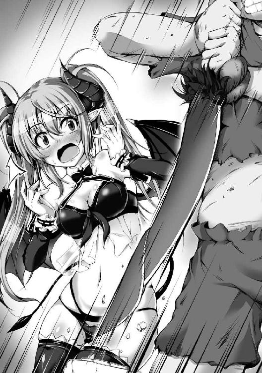
刀身がピンクとか観賞用の剣なのか？
でもまあ、見た感じ刀身は真新しいし、切れ味は良さそうだし、柄とかボロいけど不思議と手に馴染むし、これなら問題なく使えそうだ。
と思った直後、
「──ぅお!?」
二十センチくらい露出させていた刀身が突如としてピンク色に発光した。
その凄まじい光量は常軌を逸しており、視界全てが一瞬で桃色の光輝に満たされてしまう。
思わず目を瞑りながら刀身を鞘に納めると、目蓋越しに瞳を灼いていた光は収まった。
「な、なんだったんだいったい............ん？」
ふと周囲が静まり返っていることに気が付いた。
武器を手にしてひとまず安心できたからか、今更ながらに状況を把握できたのだ。
この剣、豪奢な台座に安置されていたことからして、もしかしたら触っちゃダメな類いの代物だったのかもしれん。しかもいきなり飛びついちゃったし、不審に思われたか......？
お前ら黙って見つめてないで、なんか言え。
「............ロ、ロミオ、様......それ......？」
「......今の、輝きは......まさか、本当に......？」
淫魔親子が震える声を漏らしている。
いかんぞ......よく分からんが、なんか俺やっちまったんじゃねえか......？
「ロミオ様......今、抜いたよね......それ......？」
「え、あ、ええ......抜きましたけど」
「も、もう一回、抜いてみて......？」
「......こうですか？」
俺は再びピンク色の刀身を露出させた。
また急に光り出さないかと身構えるが......光らない。
というか、よくよく見るとこのピンク、なんか卑猥な色だな。
「........................」
巨大石壇の下にいる連中まで、みんな唖然としたように硬直している。オークジジイなどは立ったまま死んでんじゃねえかと思えるほど、あんぐりと口を開けて両目を見張ったまま微動だにしない。
なんだよお前ら、なんで黙る。
微妙に居心地が悪く、嫌な予感もしたので、念のため鞘から刀身を抜き放っておいた方が良いだろう。
捕まる前に死なないとな。
「っ、いかん！」
「──ぅお!?」
いきなりミルティスの親父に飛び掛かられた。
十メートルくらい離れていたはずだが、形振り構わぬ突進で一気に詰め寄られて押し倒される。
ヤバいヤバいヤバいヤバいっ！
無我夢中で抜剣しようとするも、すごい力で腕を押さえられているので動けない。
むしろ逆に半分以上抜けていた刀身を完全に納刀させられた。
「は、放せやめろ離れろどけっ！」
「お、落ち着いてください神子様っ、その剣は非常に危険なのです！ 一度鞘から抜き放てば血を見るまで収まらないのですっ！」
「だったらアンタの血で収めるまでだぁ！」
「男の血では意味がないのですっ、乙女の血でなければ！」
淫魔のオッサンに上から伸し掛かられ、両腕を押さえられながらすごい形相で力説された。
その威迫に負けて俺は暴れさせていた身体を硬直させてしまう。
あかん......掘られる......
「神子様、どうか落ち着いてください。ひとまず剣から手を離してくださいますか？」
「......は、はい」
「ふぅ......ありがとうございます。突然のご無礼、どうかお許しください。立てますか、神子様」
ミルティスの親父は身体を起こし、一転して紳士的に手を差し伸べてきた。
恐る恐るその手を掴むと、力強くも恭しく引き上げられる。
「す、すごいよロミオ様！ 淫魔族でもないのに精剣を抜けるなんてっ！」
床の剣と目の前の親父を交互にチラチラと見ていたら、いきなりミルティスに抱きつかれた。
お、おっぱいが胸に当たって......
相手が魔族だとは分かっていても、やはり堪らん！ 最高ですっ！
「あの、精剣って何ですか......？」
「ヴェベル様も使ってた淫魔族の秘宝だよ！ 精剣ペニスレイヴッ！ もう何百年間も誰も抜けてなかったんだよ！」
あのピンクソードが淫魔族の秘宝だと？
刀身がピンクなだけの骨董品な剣にしか見えないがおっぱい最高ですおっぱい。
「その精剣、何かすごいんですか？」
「すごいなんてものじゃないよっ、ヴェベル大峡谷は精剣の一撃でできた跡なんだよ！」
へえ、こんな普通サイズの剣がアレを........................え？
これの一撃であの谷ができたの!? 一撃で!? おっぱい最高だよおっぱいっ！
「すごいすごいすごいっ、ロミオ様やっぱりすごい人だったんだ！ 告白してよか──っ、あ、でもそうなったら、わたし......」
「ミルティス？」
間近にあるミルティスの美少女顔がなぜか突然赤く染まり、何やらブツブツと呟き出した。
かと思いきや不意に身体を強張らせて「ん......?」と間の抜けた声を漏らす。
「な、なんか、変な......硬い......？ ん？ あっ、え......っ、まさか............きゃっ!?」
「あっ......」
急にミルティスが逃げ出すように離れていった。
あぁ、おっぱいが......おっぱい......
「お、おお、なんという大きさだ......信じられん。私でも見たことのない大きさとは......しかしアレならば相当な精力を秘めておられるはず......」
「さすが神子様だ、我が愚息など比較にもならぬとは......」
「先ほど触れたときは短小かと哀れに思うたが、なんという膨張力じゃ!? 魔神様の祝福は男根にまで及ぶものなんじゃなっ！ さすが神子様じゃ！」
なんか野郎共が揃って感嘆の吐息を溢しながら俺をじろじろと凝視してくる。
それだけならばまだいいが、連中の視線は俺の股間部に集中しているように思う。
急にミルティスも離れていったし、まさかチンコないことバレ........................あ？
「なんだ、これ......？」
なんか巨大な亀の頭がズボンからはみ出ていた。
俺は体型が体型で、シャツもズボンもクリステラさんが素材の限られた中で拵えてくれた一品なので、服を着ると結構パンパンになる。
当然、シャツの裾は短く、普段から微妙に腹が覗き見えてしまうほどだが......
今は亀の頭どころか首まで露出してやがる。
「え......？」
呆然としつつもピンク色っぽい先端を突いてみた。
ビクッと震えた。
どこからどう見てもチンコだった。
「え......なんで......」
俺のチンコはクソ勇者の聖剣エクスカリバーにぶった切られたはずだ。
ホーリーエルフの才媛たる我が女神クリステラさんの治癒魔法でも治らなかった。
なんでチンコ復活してたんだ。
つか我ながらデケェ!? なんだこれ棍棒かよ凶器じゃねえか!?
「神子様は戦闘の才に秀でておられると聞き及びましたが、真ですか？」
「え、あ......え......？」
ミルティスの親父から問われたが、俺の頭は混乱していた。
「精剣ペニスレイヴを引き抜かれた事実、そしてその逞しい男根から、貴方様の尋常ならざる精力のほどは一目瞭然です。どうかお願いいたします神子様っ、その御力で件の人間共を駆逐してはいただけませんか!?」
「あ......え、俺が......？」
「仰りたいことは重々承知しております、相手は戦闘の才に恵まれた神子様が囚われの身に甘んじるほど精強な人間共。《三聖宝具》が一角たる聖剣を使う人間までいるのですから、再度敗北を喫するのではないかと危ぶまれるのは当然でしょう」
なんか語り出した親父から視線を転じてミルティスに向けた。
モジモジしながら真っ赤な顔でチラチラとこちらを見てくる。
「しかしっ、貴方様は精剣ペニスレイヴの使い手となられた！ その剣は使い手の精力に応じて肉体を強化し、様々な能力を付与するとされております！ 戦闘系の神子様である貴方様がその精力でその剣を振るわば、どんな敵すら容易に蹴散らすことができましょうっ！」
「神子様お願いいたしますっ、どうか我らをお救いください！ そして殺された仲間たちの仇を討ち、あいつらの無念を晴らしてやってください！」
「今こそ中魔族と淫魔族の力が一つとなりて強大な敵を討ち滅ぼすとき！ 神子様っ、どうかその御力で儂らを導いてくだされっ！」
「........................」
いや、お前ら何言ってんの？
俺がクソ勇者共と戦って勝てるわけねえだろ、アホか。
たしかにね、かつての魔王ヴェベルが精剣ペニスレイヴであの大峡谷を作ったって話はすごいと思うよ。そんな剣を使えば、あるいはクソ勇者共をぶっ殺せるかもしれないとも思うよ。
でもさ、俺だぜ？
俺は神子でもなんでもないどころか人間で、記憶喪失で素性すら不明な三十路くらいの超絶キモメンなデブ野郎だぜ？
「あ、あの、でも、この剣は乙女の血を見るまで収まらないんですよね......？」
百万歩譲って俺がクソ勇者共と戦うとしても、絶対の女神にして永遠の乙女たるクリステラさんだけは何が何でも傷付けるつもりはない。
そもそも俺がクソ勇者共を殺そうとすれば我が女神は嘆き悲しみ、もう二度と俺に優しさを向けてくれなくなるだろう。
だから俺が奴らと戦うことなど天地がひっくり返ってもあり得ない。
至高の存在に恩を仇で返すことはできん。
べ、べつに返り討ちが怖いわけじゃないんだからねっ！
「あぁ、そのことですか。人間共は六匹中二匹がメスとのことですが、どちらも乙女でないことは明々白々。故に彼女らを斬っても意味がないとお考えなのですね？」
な、なんだと貴様......クソビッチはともかく我が女神を愚弄する気か！
清楚可憐なクリステラさんが非処女であるはずねえだろ喧嘩売ってんのかおい!?
と思ったけど、今そんな生意気なこと言って怒らせるリスクは冒せん。
「ご心配には及びません。精剣ペニスレイヴに必要なのは使い手が乙女の純潔を散らすこと──すなわち破瓜の血なのです」
「は......？」
「抜剣中、精剣と使い手は霊的に深く繋がり、まさに一心同体となります。故にその間は使い手の男根が常に勃起した状態となり、制限時間内に精剣つまりは貴方様の男根で乙女の純潔を散らし膣内で果てれば、精剣は鎮まりひとりでに納刀されるとされております」
ミルティスの親父は流暢かつ得意気に語り、自分の娘の両肩に手を置いた。
そして恥ずかしがる彼女をぐいっと俺に近付けてくる。
「ご安心ください、精剣を鎮める役目はこのミルティスにさせます故」
「え!? な、なななに言ってるのお父さんっ!?」
「お前は淫魔族の族長たる私の娘、精剣の使い手となられた方に純潔を捧げるのは当然のことであり、この上ない栄誉。謹んでお前の純潔と忠誠を精剣の使い手たる神子様に捧げるのだ」
............え？
「そ、それは......たしかに栄誉、だけどっ、でも、そんな急に......」
恥じらった素振りでちらりと俺を見てくる銀髪ツインテ淫魔美少女。
「待っていただきたいレヴィン殿！ 神子様は中魔っ、純潔を捧げる役目は我ら中魔族の女にこそ相応しいはず！」
「その通りじゃドゥンガッ、我が孫でありお主の娘ジュビリーこそ御役目を負うに相応しい！ ジュビリーッ、ジュビリーッ、ほれそんな恥ずかしがって隅におるでないわっ！」
「きゃっ......え、わっ、えっと、あの、神子様......わ、わたくし......その、ジュビリー、です」
なんか超絶ブサイクなオーク娘がミルティスの右隣に並んだ。
「精剣ペニスレイヴは我ら淫魔族の秘宝！ その使い手たる御方の伴侶は淫魔の女が務めて当然のはずですっ！」
「その使い手たる神子様が中魔なのだっ、妻には中魔である方が自然であろう！」
「然りっ、絶世の美男たる神子様に相応しきは同じく絶世の美女たるジュビリーをおいて他におらぬのじゃ！」
ミルティスの親父レヴィンと超デブ親父ドゥンガ、ついでにスロボダンというジイさんの三人がやにわに口論を始める。
「........................」
だが、今の俺にはその声が聞こえても、連中のむさい姿は見えなかった。
俺の瞳にはミルティスしか映っていなかった。
「あ、あの......ロミオ様、わたしが......わたしでも、いい......？」
俯けられた小ぶりな顔は耳まで真っ赤で、モジモジと銀髪の右テールを胸元で弄りながら上目遣いに訊ねてくる。
心底からの羞恥を見せつつも、どこか不安げで、それでいて期待感が見え隠れしている。
「........................」
「ロ、ロミオ様......？」
俺は正面に立つ淫魔を改めて見た。
おっぱいはそこそこ大きく、腰は細く、脚も綺麗で、銀髪ツインテが実に良く似合っている可愛い顔立ちをしており、超絶ブサイクなデブ野郎なんかに求婚してくれた心優しい美少女。
だが魔族だ。
だがそれがどうした。
「皆さん」
そんなに大きな声は出さなかったが、早くも取っ組み合いに発展していたオッサン共がぴたりと動きを止めて俺に顔を向けてきた。巨大石壇の下で困惑と期待の声を上げてざわめいていた連中も、ふっと一斉に静まり返って注目してくる。
「私を助け出さんと奮ってくれた、三千の同胞たちの無念。その元凶たる、我らが魔族に仇なす凶悪な人間共を──」
俺は床に転がっている我が愛剣を拾い、その柄を持って力強く頭上に掲げ、言った。
「必ずや討つことを約束しましょうっ！」
大広場から割れんばかりの拍手と歓声が町中に響き渡った。
腹が減っては戦はできぬ。
それは人族だろうと魔族だろうと変わりはないらしい。
「おおっ、神子様は大層な健啖家じゃのう。実に気持ちの良い食いっぷりじゃ！」
「どうぞお好きなだけ召し上がってください神子様！ ほれジュビリー何をしておるのだっ、神子様の杯が乾いておるぞ！」
「は、はいっ、えっと、あの......ど、どうぞ、ロミオさま......」
中魔族の族長らしい超デブ親父のドゥンガが娘に指示した。
すると、俺の左隣に座る直視しがたいブサイクちゃんがコップに酒を注いでくれる。
正直、食欲が減退するからどっか行って欲しいんだが、俺は悪逆非道なクソ勇者共とは違うので何も言わない。
「さて、神子様、お食事を進めながらで良いのでお聞きください。先ほど神子様より伺ったお話からしますと、やはり件の人間共を捕捉するのは難しいかもしれません」
淫魔族の族長かつ我が義理の父レヴィンが真面目な顔で口火を切る。
とりあえず俺はメシを食いながら適当に首肯しておいた。
「王都におられる魔王様を討ち取らんとする目的を鑑みるに、このまま雲隠れする可能性は非常に高いことでしょう。たしかに襲撃された腹いせに中魔族の町を襲うという可能性はなきにしもあらずですが、我らが魔國領のこれほど奥地にまで潜入しておいて、今更そんな短絡的な行動に走るほど馬鹿ではないはずです」
「なんだと!? ではどうするというのだレヴィン殿っ!? 我らが同胞三千の命を散らした仇敵を討てぬというのか!?」
広々とした屋内にオッサンの声が大きく響く。
ここは集会所として利用している建物内の宴会場らしく、現在は淫魔族と中魔族の重鎮たちが集まっていた。既に日没しているので窓の外は暗いが、宴会場内は蝋燭と魔法の光で満ちている。
「落ち着いてくださいドゥンガ殿、そうは言っておりません。淫魔族と中魔族が総出で捜索すれば、必ずや発見できましょう。実際、先日も我らの網に掛かったではありませんか」
「うむっ、しかしそれは神子様がおられたからであろう！ 魔神様のお導きにより我らは神子様を発見することが適ったのだっ。此度も復讐のため魔神様のお導きがあるやもしれぬが、しかしさすがにそう易々と見つかるとも思えぬ。ここは兎耳族の協力を得られぬだろうか!?」
ふむ、やっぱなかなか旨いじゃねえか。
前にクソ勇者が百獣族のなんたら族とかいう長い獣耳の魔族集団を襲撃したとき、強奪した荷馬車内にあったメシを毒味したことがあるから、魔族のメシは初めてってわけじゃない。
オーク共のメシとか正直かなり不安だったが、普通に食えるレベルの味だ。
「兎耳族ですか......彼らとは少々の縁があるだけで、中魔族の皆様ほど懇意にしてはおりませんので......」
「だが此度の件では我ら中魔の神子様が人間共に捕らえられておることを教えてもらえたではないか！」
「それは貴方がた中魔族に貸しを作るためでしょう。彼らは荷馬車を襲撃され仲間を殺された恨みがあるにもかかわらず、彼ら自身の手で人間共の行方を捕捉することすらできず仕舞いでした」
「襲撃の生き残りが重傷を負い、報告が遅れたせいで行方を眩まされた......と兎耳族は言っておったではないか」
「ええ、それを差し引いたとしても、魔族一の聴力を有する彼らでも発見できなかったのです。頼んだところで焼け石に水なのは明らかです、無駄な貸しを作ってしまうだけでしょう」
そういえば、さっきから我が愛しの嫁が静かだな。
右隣を見てみると、表情が沈んでいるように見える。
たぶんオーク兵共の死を悲しんでるんだろうな。
「しかし、兎耳族には人間共を仕留め損ねたという責任があるはず！ ここは我らに協力するのが道理である以上、貸しにはならぬであろう！」
「その通りではありますが、そもそも彼らが手を貸してくれる可能性は極めて低いと言わざるを得ないかと。おそらく兎耳族は此度の件をまだ我ら淫魔族と中魔族以外には明かしておらぬはずです。今まさに陥っているような状況となった場合、余所の部族氏族から人間共を捕まえられなかったという汚名を回避するために」
「な、なんと小狡い......」
「貴方がた中魔族が多くの兵を失ってしまった事実は隠し通せるものではありません。我らが人間共を殺せようが殺せまいが、遅かれ早かれ近隣の氏族たちに指摘され、追及は免れないでしょう。そうなった場合、我らが失態の責任を兎耳族に分散させようとしたところで、無様な言い訳としか捉えられず、逆にその責任転嫁を非難されるのは火を見るよりも明らか」
「悪魔族内では未だしも、魔族全体において我々の発言力は無いも同然......兎耳族には神子様の存在を伝えてもらい感謝してはおるが......小魔族が如き狡猾な保身と言わざるを得ぬ......っ！」
あのヴェベル大峡谷周辺の鏖殺で、生き残りは三人だけらしい。
俺がクソ勇者討伐を宣言した後、淫魔族と中魔族の混成部隊が戦場跡に急行し、捜索したのだ。
生き残った三人はいずれも重傷だという。
「では我らだけで憎き人間共を捜し出すしかないというのか......ただでさえ大戦で男共が多く出払い、残っておった男たちも此度の件で大勢失った。もはや捜索に出せるのは婚前の未熟な若者か女共しかおらぬのだぞ!?」
「故に、まずはいち早く我ら淫魔族の男たちを捜索に出しているのです。中魔族の方々は各町の周辺を見回ってもらうだけでも十──」
「それでは申し訳が立たぬし間に合わぬ！ 人間共が余所の領地へ行く前になんとしてでも捕捉し、神子様に成敗していただかなくては......さもなくば、またぞろ中途半端族だなどと誹謗中傷されることになり、死んでいった同胞たちに顔向けできぬっ！」
オッサンたちはうるさいなぁ、まったく。
べつにクソ勇者共なんて見つけなくていいのに。
むしろ見つけるなっ、俺には戦う気など微塵もないんだからな！
だって、俺にはもうチンコがあるんだ。
このままクソ勇者共が見つからず仕舞いとなっても、もはや俺とミルティスの結婚は揺るがないはず。クソ勇者共に勝てるとは思えんし、銀髪ツインテ淫魔美少女とのイチャラブ結婚生活を送るためにも、危険を冒すわけにはいかない。
大広場での宣言はただのポーズであって、あの状況を切り抜けるために、そしてミルティスの好感度を上げるために、仕方なく起こした行動なのだ。
「ミルティス、食べないんですか？ 美味しいですよ？」
「うん......ありがとう、ロミオ様。でも、ごめんね......なんか、食欲ないんだ......」
微笑みこそ向けてくれるが、無理して作ったことが丸分かりな表情だった。
いくら魔族とはいっても、まだ十五歳の少女にとって、あの戦場跡の光景はかなり衝撃的だったことだろう。数多くの惨死体があちこちに転がる様は悪夢以外の何ものでもなく、生き残りはたったの三人だけ。食欲が失せても致し方のないことだ。
「では、私が食べさせてあげましょうか？」
「......わたしのことより、ロミオ様がたくさん食べて？ 《三聖宝具》の使い手と戦わなくちゃいけないんだから、しっかり精を付けなくちゃね......」
「え、あ......で、ですけど、私がミルティスに食べさせてあげたいんですっ」
い、いかん......心が痛む......
悄然とした様子の婚約者なんて見たくない。
ミルティスには笑顔が一番良く似合う。
「ロ、ロミオさまっ、わ、わわわたくしにも食べさせていただけませんか!?」
「おおっ、よくぞ言ったジュビリーッ！ そうじゃ攻めるのじゃっ、そして神子様の御心を射止めるのじゃ！」
うるせえぞオークジジイッ、俺はミルティスに夢中なんだよ！ 何が悲しくて俺と同レベルのブサイクオーク娘に「はい、あーん」とかしてやらにゃならんのだっ！
「レヴィン殿っ、精剣ペニスレイヴの力で人間共の所在を突き止められぬのか!? たしか彼の秘宝には四十八にも及ぶ様々な能力が秘められておるのであろう!?」
「ええ、たしかに精剣には使い手の精力に応じて解放される四十八の能力が秘められているとされています。過去、この精剣四十八手はヴェベル様以外の使い手に、全ての能力を扱えた者はいませんでしたが......おそらく神子様であれば全能力......いやヴェベル様と同じく裏四十八手までをも使いこなせることでしょう」
「で、ではっ！」
「......精剣四十八手には〈気配察知〉や〈千里眼〉などの索敵に役立つ能力が存在するという伝承はあります。しかし、それらを用いたとしても捜索範囲が広大にすぎます。魔王様のおられる王都は西方にある故、西方を重点的に捜索したとしても、精剣の使用時間内に発見できる可能性は極めて低いでしょう。そもそも人間共は我らに存在を感知されたことを前提に行動しているはずです、素直に西方へ移動しているとは考えがたい」
そうだよ、だから諦めよう？
相手はクソ野郎とはいえ、あのクソ勇者を殺せば我が女神を悲しませることになる。
「お父さん......人間共、見つけられそうにないの......？」
「い、いや、淫魔族と中魔族が総出で捜索すれば、必ずや発見できよう」
「でも話聞いてると見つけられなさそうだよ!? そんなの絶対にダメだよっ、みんなを殺した人間共には復讐しないとっ！ じゃないと......じゃないと、あんなになってたみんなが......可哀想だよ......」
「うっ、うぅ、ミルティス殿......そこまで我が一族の皆を想ってくれるというのか......っ！」
悲嘆の涙を見せるミルティスを見て、ドゥンガが感動したように、あるいはやるせなさそうに片手で目元を押さえて呻いている。他に同席している淫魔族と中魔族の面々も、二人の雰囲気にあてられたのか、沈痛な面持ちを見せ始めた。
そのせいで広々とした宴会場に通夜のような重い沈黙が漂い始める。
そんな中、俺もミルティスの優しさに感動していた。
思えば彼女は俺なんかにおっぱいを揉ませてくれたり、告白してくれたり、オーク兵の生き残りを必死に捜索しようとしたり、こうして彼らの死を心から嘆き悲しんでいるのだ。
我が女神並に心優しい少女だ。
「本当は......」
不意に、沈黙を嫌うような呟きがレヴィンの口から溢れ出た。
「精剣の能力には、ピンポイントで特定の人物の所在を突き止める能力も......あるにはあるのだ」
「えっ、じゃあそれならっ！」
「いいや......あるというだけで、現状では使えぬ」
「どうして!?」
ミルティスが悲鳴めいた問いを父親に投げかけた。
するとイケメン淫魔なオッサンはテーブルに両肘を突き、組んだ手に額を乗せて俯くと、溜息と共に呻くように呟き始めた。
「その〈精密索敵〉には対象の身体の一部が必要なのだ......爪や髪、あるいは体液でも構わぬっ、とにかく極僅かでも良いから対象に由来する何かが必要なのだ！ だが......そんなものはない、念のため例の戦場跡を捜索させてはいるが、あの場には他に多くの戦士たちもいる......」
「そ、そんな............あっ、でもロミオ様は!? ロミオ様なにか持ってないの!?」
「馬鹿を言うでないミルティス......仮に人間共の毛髪が神子様のお召物に付着しておられたとしても、神子様はヴェベル大峡谷に落下されたのであろう？ そしてこの町まで空を飛んで来られたとなれば、とうに風に攫われてしまっているはずだ......」
「じゃあ、精剣の能力でも捜せないの......？ 普通に捜しても見つかりそうにないなら、みんなの仇は......無念は......？」
静かに涙を流すミルティス。
他の面々も、何をどう言っていいのか分からないような、意気消沈した顔で俯いている。
せっかく神子様がいて、精剣が使えて、対抗できる力があるのに、憎き人間共に復讐できない。
その無念が痛いほど伝わってくる。
「あ、あの......ロミオさま、汗が......それに震えられて......た、体調が優れないのですか......？」
「........................」
い、いかん......俺の良心が愛妻のために動けとせっついてくる。
だが俺に女神を裏切ることはできん。
しかし......ミルティスを悲嘆に暮れさせたままでいいのか？
俺だって、クソ勇者共は憎い。
拾ってもらったとはいえ、奴らにはチンコをぶった切られて日々いびられた挙句、雑用のブタ扱いだ。そして最後には勇者にあるまじき鬼畜っぷりで人類同胞を見捨てやがった。
魔族以上に悪しき者共だ。
それでも、クリステラさんという光があった。
「........................」
「神子様、如何なされましたか？」
「ロミオ様？ どうしたの、大丈夫......？」
対して、今まさに食事を共にしている連中はどうだ？
同族の神子だと勘違いしているとはいえ、こんな豪華なメシを好きなだけ食べさせてくれる。
俺を助けるために三千の兵を動かし、体調を気遣ってくれる。
ミルティスには餓死の危機から救ってもらった恩があり、何より淫魔族の秘宝は我が女神でも治せなかったチンコを復活させてくれた。こいつら本当に人類の敵か？
「............あ」
そうだ、そうだよ......
俺にとってはクソ勇者共こそが魔族なんだ。
そして今ここにいる連中こそが俺にとっての人類同胞なんだ。
「レヴィンさん」
心配そうに見つめてくる淫魔の族長に毅然と声を掛けつつ、俺はポケットから希望を取り出した。
「その身体の一部とやら、こちらでもよろしいのでしょうか？」
「そ、それは、下着......？」
「ええ、私を捕らえていた者共の一人、ホーリーエルフのパンツです」
「あ、それ......あのとき被ってた......？」
ミルティスの呟きは華麗に聞き流し、俺は極めて紳士的な態度を崩さない。
レヴィンは突き出された聖衣を前にして、しかし力なく頭を振った。
「いえ、下着では......陰毛か、せめて体液......尿か愛液ならば良いのですが......」
「レヴィンさん、よく見てください。この染みが目に入りませんか」
「え......？」
呆けたような面を見せたかと思いきや、瞠目して硬直するレヴィン。
そして彼は震える手をゆっくりと希望に伸ばしながら問うてきた。
「これは......まさか、そんな......どうして......？」
「こんなこともあろうかと、谷に落ちる前に入手しておいたのですよ。それで、このパンツでも大丈夫ですか？」
あろうことか女神の聖衣に触れようとしてきたので、俺はさっと手元に引き戻した。
イケメン淫魔は「あっ」と小さく声を漏らすが、尚も手を伸ばしたまま一心に希望を見つめながら、言った。
「え、ええ......大丈夫、大丈夫です......見たところ、おそらくそれは下り物の染み。であれば染みであろうと全く問題のないものです！」
「おぉっ、さすがは神子様じゃ！ 如才なき振る舞いはまさに神より祝福されし存在たればこそっ！」
「やはり神子様は只ならぬ御方だっ、なんという先見の明！ 感服いたしましたっ！」
「す、素晴らしいです、ロミオさま......っ！」
馬鹿オーク共の戯言はともかく、俺は右隣の銀髪ツインテ淫魔美少女に顔を向けた。
我が妻は唖然とした顔で見つめてくる。
俺は半開きの可愛らしいお口に唐揚げを入れてやり、目覚めてから初となるウインクをしてみた。
普通ならば嘔吐するキモさだろうが、ミルティスはたぶん普通ではない。
「す............すごいよロミオ様すごすぎるよっ！ 初めて見たときはパンツ被ってる変な神子様だと思ってたけど全然違ったんだねっ！ 強くて優しくて紳士で賢くて精剣の使い手で神子様だなんてロミオ様すごすぎるよ!?」
ミルティスは俺に抱きつきながら興奮した歓声を上げ、飛び跳ねるように身体を揺すってくる。
喜んでくれて良かった、やっぱり笑顔が一番可愛いな。
し、しかし、これは......
押しつけられたおっぱいが、上下に......ふみょんふみょんしてる......っ！
「何を言っているのですか、ミルティス。私は皆の前で約束しましたよね。我らが魔族に仇なす凶悪な人間共を、必ず討つと」
「おおおおおおおおっ、神子様バンザーイ！」
先ほどまで漂っていた沈鬱とした空気は、宴会場を揺るがす歓声でもはや完全に吹き飛んでいる。
もう仇を討った後のような騒ぎようだ。
こいつら俺が負けるとは微塵も思ってねえな。
まあ、俺とて負けるつもりは微塵もないのだが。
なにせ敬虔な信徒たる俺には、悪しき者共の魔手から我が女神をお救いせねばならないという崇高かつ神聖な使命があるのだ。
これ以上あんな悪魔共と一緒にいたら、クリステラさんの心が穢れてしまう。
今こそ彼女への恩を返し、我が信仰を証明するとき。
ついでにクソ勇者共に復讐して積もり積もった恨み辛みを晴らしてやる。
さて......では聖戦を始めようか。
Ｏｔｈｅｒ Ｖｉｅｗ
それは絶大なプレッシャーだった。
「《三聖宝具》が一つ、我らが御神の力宿りし聖なる剣の仕手アルベルト・アイレンベルクよ。其方に命ずる......これより魔界に潜入し、魔王を討滅して参れ」
彼がこの世に生を受ける前から、人族は魔族との戦いに明け暮れていた。
古来より、この星蒼平面双神世界は日出ずる東半分を人族が、日没する西半分を魔族が支配してきた。東西の境界域である《大海境》は百年周期で干潮と満潮を繰り返しており、神の怒りの如く荒れ狂う嵐が晴れて、大海が陸地となれば聖戦が始まり、陸地が大波に攫われ天より豪雨と雷が降り注ぎ始めれば休戦となった。
決して相容れぬ双方は飽くことなき闘争に明け暮れ、ときに人族が魔界に攻め入り、ときに魔族が人界に攻め入ったが、いずれの場合も時間切れとなって、勝利を収める前に《大海境》が閉じてしまう。補給路を断たれて孤立した侵攻軍の末路はいつの時代も悲惨なものだ。
人魔はある種の均衡を保ち、何千年と生きてきた。
しかし、その終わりなき聖戦に終止符を打たんとすべく、人類はある大勝負に出ようとしていた。
すなわち、魔王の討伐だ。
「此度の聖戦が始まり二十余年......綿密な調査を重ねた結果、魔族共の統率には大きな揺らぎがあることが判明している。史上最高の強固な結束を見せてはいるが、それ故に脆弱。結束が破れた際の揺り戻しは相当なものとなろう。今代の魔王は圧倒的人望により魔族共を纏め上げている反面、直接的な力は貧弱極まるという」
人類同胞たちの命運を双肩に担い、アルベルトは強く決意した。
必ずや使命を成し遂げ、今回を最後の聖戦にしてみせると。
「此度は我らに分が悪い......が、勝機はあるのだ、未だ嘗てないほどに。この窮地こそ最大の好機なのだ。良いか、聖剣エクスカリバーの仕手よ。魔軍という絶大な力の要たる魔王を討ち、その結束を破るのだ。さすれば魔軍は自ずから崩壊し、今度こそ我らが御神の聖なる光が、悪しき闇を一掃する。そしてこの世は地平の彼方まで、人類のもとに恒久的安寧が約束されるであろう」
世界の西半分たる魔界──魔國領に潜入し、魔王という要石を砕く。
今代の魔王は貧弱故に、前線には出てきていないのだ。
目的のためには少数精鋭にて秘密裏に事を運ぶ必要があった。
「聖槍と聖杖の仕手は戦線の維持に欠かせぬ。彼ら以外で、お主が最も信頼し、最も精強だと信じる者たちを推挙してみよ」
アルベルトは幼馴染みにして最高の戦士であるファルケとジョルジュ、そして恋人にして稀代の天才魔女たるマリーナを推した。
ファルケは本来ならば聖槍を授かるほどの卓越した槍戦士だが、人類同盟軍内の複雑極まる政治的問題がそれを許さなかった。
ジョルジュはドワーフの欠点たる矮躯を克服した奇跡的な寵児にして怪力の盾戦士であり、二つの大盾は城塞の如き堅牢さを誇る上に攻撃にも転用できる汎用性の高さを持つ。
マリーナも本来ならば聖杖を授かるほどの卓越した魔女ではあるが、未だ年端もゆかぬ少女であり、治癒魔法だけ全く使えないという欠点がそれを許さなかった。
そんな馴染みの三人に、前回の聖戦経験者にして人類最高の魔法弓兵ガートとその孫娘──ホーリーエルフ随一の治癒魔法士クリステラが加わり、もって魔王討伐隊が結成された。
「では征け、我ら人類の命運を背負いし勇者たちよ。必ずや魔王を討ち滅ぼし、世に安寧と秩序をもたらすのだ！」
そしてアルベルトたち六人は戦場たる《大海境》を突破し、魔國領に足を踏み入れた。
だが、聖剣エクスカリバーの仕手であり人類の命運を左右する勇者は若輩者だ。
類い希なる才気に恵まれ、聖なる神より祝福されし神子とまで称される彼は間違いなく人類最高の勇士ではあるが、同時に未だ齢十八の青年でもある。
日々、魔王討伐の重責は彼の心を押し潰さんとした。
己が使命を果たせなければ、後方で魔族共と戦っている人類同胞たちは押し負けるだろう。
この魔王討伐は諸刃の剣だ。
もし志半ばで倒れれば、人類の希望たる《三聖宝具》の一つを失い、戦線はいずれ崩壊して、世界は邪悪なる神とその眷属共の闇に呑まれることとなる。
絶対に、この命に代えてでも、魔王を滅した上で聖剣を人界に持ち帰らねばならない。
「そう気張るこたぁねえよアル、お前は一人じゃねえんだ。おれらがついてる、おれらも一緒にお前の重荷を背負ってんだぜ」
「うむ、ファルケの言う通りである。昔から我ら三人が共に戦えば常勝無敗であった、此度も必ずや勝てようぞ」
「アル、一人で抱え込まないでね。あたしにできることがあったら何でも言って」
親友二人の信頼と恋人の温もりが彼の不安と焦慮を和らげた。
そうして勇者アルベルトは仲間たちに支えられてはいたが、しかし人類の命運という絶大な重責は尚も彼の心を苛み続けた。
「あっ、皆さん、あれは人ではありませんか!?」
魔國領に踏み入って、数ヶ月。
アルベルトたちは一人の人間を発見した。
とても同じ人類とは思えないほどのブサイクな顔立ち、丸々と肥え太った身体、豚のような短足。中魔族と言われた方が納得のいく全裸のオッサンだったが、しかしそいつは紛れもなく人間だった。
「お？ なんだマリーナ、お前なにモジモジしてんだよ。この馬並見て濡れたのか？」
「なななに言ってんのよ馬鹿ファルケッ、そんなわけないでしょ！」
目を疑うほどの逞しい男根を前に頬を赤らめるマリーナ。
満身創痍の人類同胞が倒れていても、皆は取り乱したりはしない。
それはクリステラという最高の治癒魔法士がいるからだ。
「............」
「む？ アル、急に聖剣を抜いて如何した。今は特に魔族や魔物の気配なぞは感じぬが」
しかし、アルベルトだけは違った。
愛しの彼女の様子を目の当たりにして、彼の中で何かが切れた。
重責に苛まれ続けていた心は暴走し、気が付いたときにはオッサンの男根を根元から切り落としていた。
「フンッ、醜いブタのようなオッサンだな。こんな奴はおれたち人類の仲間じゃない、むしろこんな醜悪なブタはここで殺っておくのが全人類のためだろ」
それは絶大なプレッシャーだった。心優しい仲間たちには決してぶつけられない弱さの発露だった。なにせサンドバッグにするにはおあつらえ向きのオッサンに見えたのだ。
「おれもそう思うぜ、アル。こいつ肌が緑色だったらオークと見紛うほどだしよ、さすがに人類の一員としてこいつを同胞とは認めたくねえわ」
普段は飄々とおちゃらけて見せているが、親友はいつも皆に気を配ってくれている。
情けない勇者の複雑な心情をすぐに察してくれた。
その優しさが何よりも嬉しく、そして申し訳なかった。
「何を仰るのですアルベルトさんっ、ファルケさんっ、私たちは一人でも多くの者を守り平和と秩序をもたらすため、魔王を討つべくこの地に足を踏み入れたはずです！」
クリステラとは此度の魔王討伐を機に知り合った。故に、このときはまだ、ファルケやジョルジュ、マリーナほどの深い信頼関係を築けていなかった。
しかし、マリーナあたりがクリステラに話を通してくれたのだろう。
以降はクリステラから小うるさく言われることが少なくなった。
「アルは好きなようにしていいのよ。あのオッサンは人類勝利の礎になるの、アルは何も間違ってないんだから」
まるでアルベルトの心に残る罪悪感を払拭するかのように、マリーナも殊更辛辣な態度でオッサンに接した。彼女だけでなく、ファルケやジョルジュまで同調してくれた。
ガートは素だったが、それはそれで好都合だった。彼はクリステラに近付く男には容赦がなく、使命を共にするアルベルトたちは例外中の例外だ。
「おいブタァッ、テメ何のろのろ歩いてんだ、遅えぞ！」
オッサンを拾って、三ヶ月。
オーク紛いの醜男でストレスを発散することがすっかり日課となっていた。
「ハハッ、そう言ってやるなってアル。あの豚足じゃあ歩幅もねえから仕方ねえだろ」
「歩幅がないのであれば、より早く脚を動かせば良いだけの話である」
「キャハハハッ、そうよブタぁ、あんたマジで遅いんですけどぉ？」
皆も慣れきっており、もはやアルベルトは罪悪感など欠片も感じていなかった。
「テメ今夜は寝ずに番としとけよ」
「え、そ、そんな、今日はもうクタクタで眠──ぃぶゅ!?」
反抗されたので殴った。
人類の命運を背負う勇者にあるまじき蛮行だと自覚してはいた。
「いいからやれっつってんだろクソが！ それともテメェ、この魔國領の真っ只中に一人置いてかれてえのか？ アァおい？」
しかし、やめられなかった。
なにせ本来はこんな足手まといのお荷物を同行させてやる道理など微塵もないのだ。
魔國領内では隠密行動が肝であり、もし役立たずのオッサンのせいで魔王討伐が失敗すれば目も当てられない。
全人類の命とオーク似の醜いオッサン一人の命。
どちらが重いかは考えるまでもなく、故にあのとき醜男の男根を思わず切断した直後にも、殺すべきだと言ったのだ。
「アルベルトさん、暴力はいけません。それにいくら何でも無茶を仰りすぎではありませんか。ロミオさんは今日も私たちの荷を一人で運んでくださったのですから、しっかりと休──」
「貴様この役立たずがっ、儂の孫娘にいらん気を遣わせおってからにぃ！」
「やめてくださいお祖父様！」
あの日にオッサンを拾い、こうして同行させているのはクリステラの顔を立てているからに過ぎない......という言い訳を、アルベルトは己に言い聞かせてきた。
本来は即座に殺すべき相手をストレス発散用のサンドバッグとして同行させるなど、聖剣の仕手にあるまじき弱さの表れだったからだ。
「ねぇアル、どうかしたの？」
「............」
その日の夜、マリーナとの激しい行為を終えて、アルベルトは賢者の如く冷静になっていた。
そして考えていた、仲間のことを。
「なぁに？ もう一回する？」
この三ヶ月を経て、マリーナは変わった。
当初、彼女はアルベルトの言動に合わせて、オッサンをいびっていた。
しかし、どうにも最近はオッサンを虐げることに本心からの喜楽を露わにしている節がある。
それはファルケやジョルジュも同様だ。
情けない勇者の弱さが、愛しい恋人と親友たちの心を歪めてしまったのだ。
それを遅まきながらに自覚して、アルベルトは苦悩した。
「いや......今日はもういい、休もう、明日も早い」
「......アル？」
愛しい恋人の気遣わしげな顔を見て、聖剣の勇者は覚悟を決めた。
仲間のためにも、全人類のためにも、いい加減、己の弱さと決別しなければならない。
「あれは、まさか......オークか!?」
翌日、突如としてオークの集団に襲撃された。
殲滅することは容易だが、問題は明らかな待ち伏せにあった。
魔族に自分たちの存在を完全に気取られた事実に心が掻き乱された。
「どんなときでも油断大敵だ、安全確実に行こう。おれはともかく、お前たちに何かあってからでは悔やむに悔やみきれん」
「あぁんっ、さすがアル優しいぃ！ でもぉ、こいつはどうするぅ？」
そう問うてきた彼女を見て、アルベルトは気が付いた。
マリーナは誰よりも己を見てくれている。きっと、昨夜の決意を察していたのだ。
「これまではさぁ、クリステラがどぉしてもって言うからぁ、こいつ同行させてやってたけどさぁ」
「ああ」
「正直ぃ、このブタ邪魔じゃん？」
「そうだな」
全人類のためとはいえ、仮にも人類同胞たるオッサンを切り捨てる行為には罪悪感を禁じ得ない。
マリーナはオッサンを捨てる重荷を共に──いや代わりに背負おうとしてくれている。
「キャハハハッ、事故死ならクリステラも文句言えないよねぇ！」
「そうだな。クリステラには悪いが、これも彼女のためだ」
またしても彼女を言い訳にしてしまったが、クリステラが甘いことは事実だった。
そして己もまた甘かった。弱かった。愚かだった。
「ま、ままま待ってくださいぃぃぃ！」
「このブタァッ、しがみついてんじゃねえぞクズが！」
しがみつく己が脆弱さを振り払おうとする。
だが、そう簡単に振り払えていたならば、ここまで引き摺ることもなかった。
「超キモいんですけどぉ、さっさと下りなさいよバーカ！」
「ぶへぅ!?」
マリーナが愛用の杖でオッサンを叩き始めた。
彼女の想いは有り難かったが、己のためにも彼女のためにも、最後は自らの手で弱さと決別せねばならなかった。
「チッ、いい加減にしやがれ！」
「ぅお!?」
覚悟を決めて聖剣エクスカリバーを突き出すと、オッサンが地面に落ちた。
アルベルトは掻き乱される心を誤魔化すために、敢えてどうでも良いことに気を払う。
「クッソ、ちょっとリュック切れちまったじゃねえか！」
「アル、早く行こーよぉ、それくらい後でクリステラに縫わせればいいじゃぁん」
「そうだな」
勇者にあるまじき弱さはここに置いていく。
もう重圧に屈したりはしない。
「あばよ、ブタ野郎。テメェはブタらしくオーク共に食われて死ねや」
「あ、でもそれってぇ、共食いだよねぇ、キャハハハハッ」
ここまできて迷いや優しさを見せては、オッサンが自分たちを恨めずに苦しむかもしれない。
故に、オッサンには最後まで辛辣な言動を貫いた。
それは負うべき責任であり、人類同胞に対するせめてもの情けだった。
「待ってっ、待ってくださいお願いしますぅぅぅ！」
待たなかった。振り返ることすら、決して許されなかった。
この身には人類の命運が懸かっているのだ。己の弱さに負ける勇者が魔族に勝てる道理はない。
「もうおれは屈したりなどしない！」
そうして、アルベルトは聖なる神の力が宿りし愛剣を駆使し、仲間たちと共に数多くのオーク兵をさほど労せずして殲滅した。
だが、指揮官と思しき豪奢な甲冑の兵だけは生かしておき、気絶させて確保しておく。
「まずは早急にこの場を離脱しよう。これ以上の発見と戦闘は絶対に回避すべきだ」
「待ってくださいっ、ロミオさんはどこですか!?」
「奴なら......死んだ、おれが見捨てた」
アルベルトが冷徹に事実を告げると、クリステラは呆然と立ち尽くした。
かと思えば、普段は穏やかな柳眉を吊り上げてアルベルトに詰め寄る。
「何を......貴方は何をしているのですか!? それでも人類を救わんとする聖剣の使い手なのですか!?」
「黙りなさいクリステラッ、アルの気持ちも知らないでっ！ そもそもあんたのせいよ！ あんな足手まといは拾うべきじゃなかったのよっ！」
「なんて酷いことを仰るのですマリーナさんっ、彼は私たちが救うべ──」
「クリステラ・シェーレンハイトッ！」
血生臭い戦場跡の只中で、アルベルトは仲間の女性を確と見据えた。
強靱な意志力を秘めた瞳で、三ヶ月前に告げるべきだったことを告げる。
「おれたちの使命は人類を救うことではない、魔王を討つことだ。今ここにいるおれたちが何よりも優先すべきは魔王の討滅。そのためならば、おれはもうどんな悪逆非道も厭わない」
「────」
「クリステラ、お前の奴を救いたいと思う気持ちは本当に素晴らしい。だが、それは今のおれたちには必要のない感傷だ。甘さを捨てろ、覚悟を定めろ、一人のために全人類を危険に晒すことはできないと割り切れ」
甚だ厚顔無恥な言葉であることは自覚していた。
だが、この討伐隊のリーダーとして、他ならぬ己が言わねばならなかった。
クリステラは何も言わず静かに涙を流し、ガートは彼女の肩を抱いた。
ファルケとジョルジュはアルベルトの両肩を労るように叩いた。
「アルは何も間違ってないよ」
マリーナの抱擁に幾分か心が軽くなる。
しかし、必要のない感傷は押し込めて、今は行動すべきときだった。
「行こう」
ジョルジュがその逞しい巨躯で悠々とオークを担ぎ、全員が全速力で現場を離脱する。
アルベルトとマリーナが上空から全周を警戒しつつ、南東方面へとしばらく移動していく。
無論、オーク共に襲撃される前にも、定期的にマリーナが上空から偵察してくれてはいたが、この近辺は緑豊かな丘陵地であり、オーク共の体色は緑だ。保護色となっていたのか、丘の陰に隠れて視認できなかったのか、いずれにせよ周辺警戒の段階で見落としてしまっていた。
「吐け、なぜ儂らの存在に気付いた」
戦場から離れた勇者一行は広大に繁る深い森の只中で足を止めると、敵兵を尋問した。
「......貴様等のようなブタ共に話すことはない」
壮年と思しき禿頭のオーク兵は一切の問いに答えない。
「......呪われろ......魔神様の怒りを受けろォ！」
ガートが拷問しても怨嗟の言葉を吐くだけで、有益な情報は何一つ得られなかった。
とりあえず尋問を中断し、念のためオークはまだ生かしておいて、皆と相談する。
「西へ直進するのではなく、一旦南下しよう。大回りにはなるが、もはや足手まといはいない。迅速に、一日でも早く、魔王がいるという王都へ急行しよう」
最終的にそういった方針で纏まり、ひとまずこの日は森に隠れ潜んでおくこととなった。
オークへの尋問は続けて、何か情報を吐こうが吐くまいが翌朝には始末し、出立する。
アルベルトは仲間たちと共に、魔族の住まう地とは思えない緑豊かな大自然の中で、ひとまず身体を休めていった......。
「ふむ、甲冑越しだろうと精悍な雰囲気が伝わって参ります」
「我ら中魔族の秘宝たるアダマンタイト製フルプレートアーマー、まさかここまでピッタリとは！ 戦へ赴いた我が息子たちにはサイズが合いませなんだが、それも全ては神子様のためだったのですねっ！」
「おおっ、さすが神子様じゃ！ 我らが秘宝を纏う勇士は魔王様にも劣らぬ貫禄が滲み出ておられるっ！ ほれジュビリーっ、お主も何か神子様に申してみよ！」
「そ、その......か、格好良い、です......ロミオさま」
俺はお義父さんの姿だけを視界に収めたまま、とりあえず腕を動かしてみた。
お、重たい......動き辛い......暑苦しい......
「ミ、ミルティス、どうですか？」
「うんっ、すっごく似合ってるよ！ ほら鏡見てみてロミオ様っ！」
小躍りしそうなほど興奮するミルティスに手を引かれ、俺は姿見の前に立った。
鏡面に映し出されるのは丸っとした姿の騎士だ。
頭頂から爪先まで漆黒の鎧に覆われた完全武装姿は我が仇敵バケツヘルム野郎を彷彿とさせた。
だが俺のヘルムの方が数倍イカした造形をしている。
「じゃあ行こっ、ロミオ様！ みんな大広場で待ってるよっ！」
そして俺は淫魔族と中魔族の族長親子と共に大広場へ向かった。
正直、歩くだけでも一苦労なんだが、こいつらは俺のことを精剣がなくても超強いと思っている。
今更真実は言うに言えないし、ミルティスの前では格好良い紳士でいたい。
「皆の者っ、これより神子様が出立なされる！ 皆で魔神様に祈りながらお見送りしようぞっ！」
現在は夜明け前だ。
昨日の夕食後、淫魔と中魔共はすぐにでも俺が征くと思い込んでいたが、俺は待ったを掛けた。
『敵も夜襲を警戒しているはずです。ここは敢えて夜明け頃に奇襲することで意表を突けるでしょう。え？ 精剣を持った私なら夜襲でも簡単に倒せるはず？ いえいえ、どんな状況だろうと油断大敵、万全の状態で臨ませてください」
などと適当に言ったが、実際は疲れていたからだ。
だって昨日は徹夜で不寝番をして、オーク兵共に奇襲されたかと思えば崖から落ち、初めておっぱいの感触を味わって求婚され、魔族の町で絶体絶命かと思いきやチンコが復活したのだ。
あのクソ勇者共と対峙するのなら、何はともあれ少しでも心身を休めて、可能な限り万全の状態で挑みたかった。
「......天気悪いなぁ」
空は綺麗に暗雲で覆われ、星々の輝きは一切見えない。天の光が差し込まない世界はどんよりと重く沈静している。
しかし、町は全く眠っていなかった。
あちこちに篝火が焚かれ、大広場には大勢の人々が集まり、無数の瞳が巨大石壇の上に立った俺に視線を向けてくる。
「神子様、何か一言だけでも皆に申してやってくださいませんか」
「え、あ......はい」
俺はどきまぎしつつも、ヘルムの面頬をガシャンと上げて、目元と口元を露わにする。
あー、顔が涼しい......これ蒸れるな......
「皆さんっ、私は必ずや我らが仇敵を討ち取って参ります！ どうか皆さんは安心して私の帰りをお待ちくださいっ！」
紳士的に適当なことを並べ立ててみると、中魔族と淫魔族の混成集団から歓声が上がった。
テンション高えなこいつら。
やはり俺が負けることなんて考えてもいないんだろうな。
「では神子様、ご武運を」
レヴィンが俺の隣で片膝を突いて跪くと、ドゥンガやスロボダンもそれに続いた。
かと思えば、石壇の下にいる数千人の連中も三人に倣って跪いてくる。
「ロミオ様......その、わたし、準備して......待ってるから。だから......えっと、あの......頑張って、きてね......？」
ミルティスは俺の前に立って、上目遣いにチラチラと見つめながら囁いてきた。
鎧の内側で息子が一瞬でいきり立ち、早くも臨戦態勢を整える。
「ロ、ロミオさま、わたくし......あのっ、お部屋で待ってますから！」
「おおっ、良いぞジュビリーよくぞ言った！ 見よっ、神子様が羞恥のあまり目を合わせようともせぬっ！」
「スロボダン殿っ、納刀の儀は我が娘ミルティスが務めると申したはずです！」
「いいや何を申しておるかレヴィン殿っ、神子様と同じ中魔たる我が娘ジュビリーこそが相応しいのは自明の理！」
俺は銀髪ツインテ淫魔美少女を一心に見つめながら微笑んだ。
そして勇ましく面頬を下ろし、精剣ペニスレイヴの柄に手を掛ける。
左手で持つ鞘も同時に引いて一息に抜剣すると、眩いピンク色の光輝がヘルムのスリット越しに俺の瞳を灼いた。
どことなく淫猥な光は一瞬で収まり、左手の鞘が光の粒子となって空気中に溶け入っていく。
その美しい光景に目を奪われながらも、右手の精剣から流れ込む莫大なエネルギーが全身を駆け巡る感覚に戸惑ってしまう。
否応なく精剣に関する知識で脳内が溢れかえり、俺は全てを理解して思わず立ち尽くした。
「............え？」
あれ......これ、すごい......
こんなピンクソードで本当に大丈夫かよとか結構不安だったけど、こりゃ大丈夫そうだわ。
「ロミオ様、どうかした......？」
「いえ、少し驚いていただけです、精剣の力に」
かつてなく漲る全身を持て余しつつ、俺は女神の聖衣を取り出した。
そしてピンク色の剣腹にクロッチ部分の染みを当てると、精剣が仄かに光る。
「今ので居所が分かったの？」
「はい、もはや奴らの姿すら私の視界には映っています」
精剣がもたらす四十八の能力の一つに〈千里眼〉がある。
そして裏四十八手の一つ、〈透視力〉が合わさることにより、今の俺に見えぬものはない。
お、おぉ......これがミルティスの乳首......
っていかんいかんっ、お楽しみは後だ！
「では、征ってきます」
取っ組み合うオッサン共は無視し、俺はミルティスにだけそう告げて、飛び上がった。
精剣四十八手の一つ、飛行能力こと〈飛翔破〉だ。
本当は裏四十八手の一つに瞬間移動能力〈瞬転移〉があり、一度行った場所になら一瞬で移動することもできる。一度ヴェベル大峡谷あたりまで転移してから飛行すれば時間を節約できるだろうが、今は使わない。
だって嫁に出発を見送って欲しいからね。
「ロミオ様ーっ、頑張ってねー！」
俺は嫁の声援に息子を一層硬くしながら、流星の如く町を離れた。
遥か遠方の稜線からは太陽が顔を覗かせており、朝日に向かって飛んで行く。
「ふぅ......さて」
んじゃま、クソ勇者共なんぞサクッと片付けて、銀髪ツインテ淫魔美少女とエッチしようか。
■ ■ ■
連中は広く深い森の只中で野営しているようだった。
淫魔と中魔の共存する町ペシュカはヴェベル大峡谷の西側に位置するが、その森は東側の南方に広がっている。
俺は一直線に曇天下を翔けながら呆れ半分に呟いた。
「おいおい、あいつらまだ生かしてたのかよ......」
オーク兵を捕まえて尋問していることは予想通りだ。
しかし、もうとっくに殺しているものと思っていた。
精剣の力により声も聞こえているので、状況はよく理解できている。
見聞きする限りでは、なかなか口を割らないものだから手を焼いているっぽい。
「......お？」
透視化された〈千里眼〉が不穏な光景を捉えた。
今の今までジイさんが拷問紛いの尋問をしていたのだが、おもむろにクソ勇者が黄金に輝く聖剣エクスカリバーを抜き放ったのだ。
『もう朝日が昇った、時間切れだ』
とか言いながら、聖剣を振りかぶるクソ勇者。
べつにオーク兵の命なんぞどうでもいいが、あの鬼畜野郎に殺される立場には同情を禁じ得ない。
俺は逡巡した末、精剣の切っ先を前方に向けた。
『──っ、なんだ!?』
クソ勇者は轟音に驚き、振り下ろさんとしていた聖剣を止めた。
精剣四十八手の一つ、〈射精弾〉だ。
剣が俺の精気を吸い取って、切っ先から白濁した光弾を射出する遠隔攻撃能力の一つだ。
奴らから数十メートルほど離れた場所に巨大なクレーターができ上がった。
「うーん、加減が難しいな」
初の攻撃に戸惑いを覚えているうちに、森の上空に到着した。
俺はそのまま飛行の勢いを止めずに斜め下方へ向けて直進し、連中の野営地に隕石の如く降り立った。
もうもうと上がる土煙に乗じて、何はともあれ壮年のハゲオーク兵を救出してやる。
「──ぅお!?」
さてこのまま一気にクソ勇者を殺っちまうかと思った矢先、矢が飛んできて思わず声を上げた。
ただの矢ではない、魔法の矢だ。
計十本の光り輝くそれらは土煙の向こうから正確無比に俺を射貫こうと迫ってくる。
だが、今の俺には全てが見えていた。
飛躍的に向上した五感と身体能力により、俺は左手でオーク兵を抱えたまま精剣を軽々と振るって、一瞬のうちに全ての矢を斬り捨てた。
本当は防御系の能力もあるんだが、この程度なら腕ならしにちょうど良かった。
追撃に備えていると、視界いっぱいに広がっていた土煙が強風により一気に晴れた。
クソビッチの魔法だな、さすがに対応が早い。
「......貴様、何者だ」
二十メートルほど先に六人が臨戦態勢で立ち、クソ勇者が聖剣エクスカリバーを構えながら問うてきた。
小脇に抱えた満身創痍のデブは呆然と俺を見上げてくる。
だが俺は我が女神から向けられる険しい眼差しに早くも心が折れそうだった。
「わ、私は、貴様の敵だ、聖剣の使い手よ」
「その体型......中魔族だな」
「だとしたら何だというのだ」
お、落ち着け......覚悟していたことだろう。
たとえクリステラさんから敵意の眼差しを向けられようと、それは俺ロミオに対してではない。
突如として現れた謎のフルプレートアーマー野郎に対してだ。
「たった一人で助けに来たのか。なぜここが分かった」
「なぜ？ 愚問だな。私は敬虔なる神の僕、主が導いてくださったのだ」
あぁ、クリステラさん......
これは貴女様をお救いするための聖戦なのです。
ですからどうかそんな目で俺を睨まないでください。
「ま、魔神様、の......僕......まさか、貴方様は......」
なんか満身創痍のハゲオークが呟いている。
というか、あいつらなんで攻撃してこないんだ？
警戒してんのか？
いや、いきなり空から降ってきたんだから当然か。
「私の力の片鱗は既に理解できているだろう。大人しく武器を捨てて投降すれば、楽に殺してやる」
「ハッ、おいおいアル、あいつ随分と調子こいたこと抜かしてるぜ？ どうにも本気でオレたちに勝てると思ってる馬鹿っぽいな、なあジョルジュ？」
「うむ、アルを聖剣の使い手を知って尚、単騎で挑んでくる阿呆ぶり。まさに中魔族の典型たる短絡思考のブタそのものである」
こ、こいつら......中身が俺だって気付いてんのか？
いや待て、落ち着け。黒い全身鎧で姿は隠れているし、声だってヘルムのせいで籠もって聞こえるだろうから俺だと気付ける要素はなく、そもそも連中は俺が死んだと思っているはず。
十中八九、あの野郎共は謎の黒騎士を挑発して隙を突こうとしてるんだ。
そう、だから油断は禁物。
いきなりすごい力を手に入れたもんだから、ちょっと調子こいてたかもしれん。
思えば相手はたった六人で魔國領の奥深くに潜入して魔王を討とうとしている連中だ。
慎重に行こう、慎重に。
「──ぅぼ!?」
とりあえずオーク野郎を小脇に抱えていては全力が出せないので地面に落とす。
俺は全神経を集中して奴らの挙動を注視しながら、我が愛剣を正眼に構えた。
「あっ、なんかあのブタ怒ってなーい？ ほらほらぁ、弱小種族のオークちゃーん、仲間落としたわよぉ？」
「儂の攻撃を防げて舞い上がっとったんじゃろ。さっきは十分の一の力も出しておらなんだというに......哀れなブタじゃのぉ」
「私たち全員で相手をするまでもないでしょう。ジョルジュさん一人で十分かと思います」
う、うぅ......なんという精神攻撃だ......
クリステラさんの嘲りが俺の心を着実に削っていく......
「うむ、そうであるな。さあ来るが良い、愚かなるブタよ。身の程というものを弁えさせてやろうぞ」
六人の先頭で身構えていたバケツヘルム野郎が一歩前進し、大盾を持つ両腕を広げて殊更に挑発してきた。
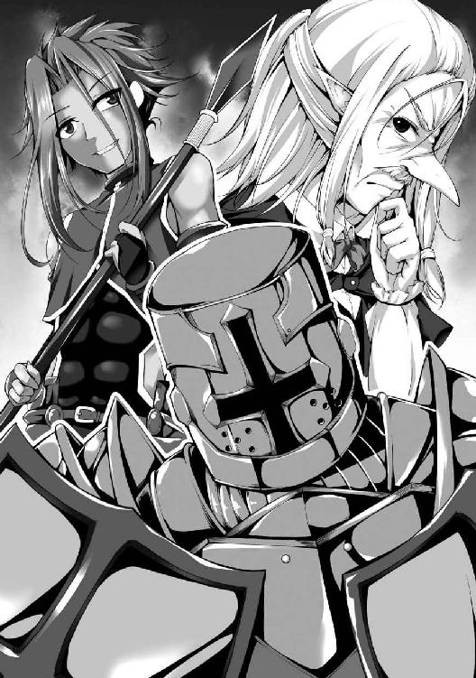
たぶんここで攻め入っても、一対一の戦いになどならず、あいつらは総攻撃を仕掛けてくるだろう。
そんな見え透いた手に乗るかよ、馬鹿が。
「な、なんという......侮辱を......神子様......どうか、どうか、その御力を......奴らに、お示しください......っ！」
なるほど、馬鹿な中魔族は乗っちゃうのかもしれん。
だが俺は人間だ、オークほど愚かではない。
「どうした、まさか怖じ気づいたか？ やはり所詮はブタだったか」
「その手に乗るとでも思っているのか。貴様等の思惑など透けて見えるぞ」
ま、今の俺には思惑どころか衣服すら透けて見えるがな。
さぁて、とりあえず我が女神の乳首でも──っていかんいかん、今は大事なときだ。神々しさに眼球が潰れかねないものを拝見しようなど、現状では自殺行為に等しい。
ふぅ......落ち着け、我慢しろ......まずは冷静に、クリステラさんを確保するんだ。
然る後、精剣ペニスレイヴ最大の必殺技で一気に片を付ける。
なにせ大技なもんだから、我が女神が連中と一緒にいては巻き添えにしかねない。
「これは驚いた、ブタにしては頭が回るらしい」
「そうだなアル、これは意外だぜ。ブタの中でも結構賢いブタだな」
まだ挑発してくるか。
ま、あんなの言わせておけばいいんだ。
もう腕試しとかそういうのはなしで、ただ俺は出し惜しみせず全力でいけばいい。
よし、ここは超絶便利な〈瞬転移〉でクリステラさんの背後に一瞬で移動し、一気に──
「ちょっとぉ、クリステラー、あいつ乗ってこないじゃーん。ジョルジュ一人だけじゃヤバいんじゃないのぉ？」
あ？ おいコラ、なに女神に意見してんだクソビッチ。
「いいえ、大丈夫でしょうマリーナさん。中魔族とは得てして強さと知能の高さが反比例するものです。盾戦士でもないのに全身を入念に鎧っていること然り、あれは自信のなさの表われです」
「その通りじゃぞマリーナッ、クリスは何も間違っておらぬ！」
そうだそうだーっ、クリステラさんが間違うはずがなーい！ 少しは自信あるし全身鎧は正体を隠すためだしそもそも中魔族でもないけど我が女神の言葉は絶対だっ！
「大人しく武器を捨てて投降しなさい。そうすれば楽に殺してあげます」
「え......？」
まるで意趣返しの如き女神の御言葉に、否応なく心が揺らいでしまった。
一瞬だ、ほんの一秒以下のことだ。
しかし気付いたときにはチャラ男が眼前に迫っており、ジイさんが百を超える魔法の矢を放ち、クソビッチの杖の先端部が輝いている光景が目に飛び込んできた。
「──っ!?」
全ては反射的な行動だった。
「............な、に......？」
クソ勇者が愕然と呻いている。
今回ばかりはそれを笑えん。
なにせ自分でもびっくりしているのだ。
「ファ、ファルケ......ガート......」
クソビッチが仲間の名を呼ぶが、二人の息の根は既に止まっていた。
俺は残心を解いて愛剣を構え直しながら、若干ブルった声で言ってやる。
「み、見たか、人間共......これが私の力だ」
「────────」
「す、すごい......何が起きたのかすら、分からなかった......神子様......今、いったい何を......？」
まず迫るチャラ男の神速と表すべき槍撃を躱して精剣四十八手が一つ、〈吸精斬〉を繰り出した。刀身を霊体化させて放ったので鎖帷子をすり抜け、肉体を一切傷付けることなく精気だけを絞り尽くして槍戦士を殺した。
その直後、頭上から降り注いだ蒼い雷撃と魔法の矢を裏四十八手が一つ、〈柳風障壁〉によって受け流した。魔法の矢は明後日の方へと拡散して流れていったが、雷撃はあろうことか女神の方へと飛んで行った。
比較的鈍重な盾戦士は不意打ちめいた雷の速さに反応しきれず、ジイさんがクリステラさんを庇ってクソビッチ渾身の魔法をその身に受けて死んだ。
「お、お祖父様......？」
ち、違う、今のはわざとじゃないんだ......
女神を狙う気なんて微塵もなかった。
だって俺は今このとき初めて精剣の能力を使っているのだ。
ちょっと失敗して受け流す方向をミスっても、それは不可抗力ってやつだ。
「な、なんて卑劣な魔女だ！ まさか自分の魔法で仲間を殺すとはっ！」
う、うむ、そうだ、アレはクソビッチの攻撃だった。
つまり我が女神を狙ったのはあの卑劣極まる魔女ということになる。
チックショウ、なんて奴だ......女神を傷付けようとするとは断じて許せん。
「貴様ァァァァァ──ッ！」
「待てジョルジュッ！」
盾戦士が右手の大盾を振りかぶりながら突進してきた。
生まれながらの変人だろうと、頭に血が上りやすいところはまさにドワーフ。
「──ぬぅっ!?」
「どうしたバケツヘルム野郎、こんなものか？」
俺は大盾の一撃を片手で受け止めた。
戦士が闘気を、魔法士が魔力を使って戦うように、精剣使いは精気を力にして戦う。
先ほど奪い取ったチャラ男の精気で肉体を更に強化したのだ。
「その盾と鎧、惜しいな」
「ぅ......ぁ......っ......」
再び刀身を霊体化させた上で〈吸精斬〉を繰り出し、盾戦士を始末した。
さっきは反射的だったが、どうせこいつらの装備品はあとで回収するんだから、なるべく綺麗な状態であることが望ましい。
精気も補充できたし一挙両得だな。
「さて」
無傷で地面に崩れ落ちる仲間を唖然と見遣る三人を俺は尚も警戒しつつ、転移した。
女神の背後に出現すると同時に、その美しい御手を拝借して、俺の精気を一気に流し込む。
精剣四十八手が一つ、〈流精衝〉だ。
「っ、あ、クリステラ!?」
俺の腕の中で気絶する我が女神を見て、クソ勇者が叫びながら身体を向け直し、聖剣を構える。
クソビッチの方はまだ衝撃が抜けきっていないようで、更に仲間がやられたのを見て、その場にへたり込んだ。
「これで私の力は十二分に理解できたことだろう。大人しく武器を捨てて投降すれば、楽に殺してやる」
「あ、あり得ないわ......こんな、こんなの......こんな、簡単に......？ ファルケ......ガート......ジョルジュ......クリステラ......」
「貴様......なんだ、ただの中魔族ではないな......？」
あまりにあっさりとやりすぎたせいか、クソビッチは半ば戦意消失している。
だがさすがというべきか、クソ勇者の方は依然として冷静さを保っているように見える。
「......ふむ」
不意に良案を閃いた。
俺は逡巡した末、クリステラさんを抱えたまま転移し、ハゲオーク兵の側に戻った。
そして我が女神を地面に横たえて、満身創痍のデブに触れる。
「神子さ......ま......っ!?」
軽く〈流精衝〉を放って気絶させておく。
ここから先はこいつに見られるわけにはいかないからな。
「聖剣の使い手......いや、勇者アルベルト。俺がただの中魔族ではないと言ったな」
そう告げるや否や、俺は音高くヘルムの面頬を上げた。
すると、へたり込んでいるクソビッチも、隙なく聖剣を構えるクソ勇者も、息を呑んで瞠目した。
「お、お前は......」
「え......あんた、なんで......？」
こいつらは優しい俺の忠告を聞かなかった。
しかし俺は女神の慈悲深さを知っている。
そして俺を最もいびっていたのはクソ勇者とクソビッチだ。
期せずして良い状況になったので、三度目の正直ともいうし、特別にもう一度だけ、チャンスをくれてやる。
「アルベルト、マリーナ、謝罪するなら今のうちだぞ。素直に土下座してこれまでの非道を詫び、俺に許しを乞えば、他の連中のように楽に殺してやる」
「お前......なぜだ、それほどの力を、持っていたのか......？」
「そうだ、能ある鷹は爪を隠すものだからな」
余裕ある口調で臆面もなく応じ、まさに鷹が飛揚するかのようにゆっくりと頷いてやる。
そして、最後通告をした。
「さあ、どうする？ 謝罪するのか、しないのか」
「あ、あんた......あんた自分が何したか分かってんの......？ みんなを殺してっ、あたしたちは魔王を討たなきゃいけないのにっ！」
「それがどうした」
俺は記憶喪失の上に超絶キモメンのデブ野郎だ。
そんな俺にとっては人類の命運なんぞミルティス（とエッチすること）の足下にも及ばない。
にしてもこのクソビッチ、相手が俺だと分かった途端に威勢良くなりやがったな。
「そりゃあんたが怒る気持ちは分かるわよ!? でもアルだって辛かったのっ、人類の命運を背負ってるのよ!? あんたにそれがどれほどの重責か分かる!?」
「いいや」
「絶大なプレッシャーだったのよっ、心が押し潰されそうだったのよ!? ストレス発散しないとやってけなかったの！ あたしたちも同調しないとアルが罪悪感で余計に苦しむから仕方なかったのよっ！」
この期に及んで言い訳か......
クソ勇者は何やら呆然と立ち尽くしているが、反してクソビッチは杖を支えに立ち上がって俺を睨んできた。
「この旅に役立たずを同行させる余裕なんてないことくらい、あんたでも分かるでしょ!? あんたはあたしたちに命救ってもらって守ってもらってたんだから文句言える立場じゃないのよ分かる!?」
「......言いたいことはそれだけか？」
「なんですって......？」
調子こき始めたクソビッチが訝しげに眉をひそめた。
どうやらこいつは完全に立場ってもんを忘れているらしい。
「そこのクソ勇者が、尋常ならざる重責に心を苛まれていたことには同情しよう。あぁ辛かったんだろうな、それは俺も認めてやる」
「だったら──」
「だがよ、何か理由があれば、何の罪もない人を虐げても許されるってのか？ 俺がお前らの気持ちを理解してなかったように、お前らも俺の気持ちなんぞ理解してなかっただろうが？ 記憶喪失の俺がチンコぶった切られて毎日毎日いびられて過ごしていた辛さがお前らに分かるってのか!?」
本当に、冗談抜きで、クリステラさんがいなかったら俺は自殺していただろう。
チンコがあれば、夜な夜なクソビッチを犯す妄想をオカズにオナニーして、ストレスを発散できた。
だが、俺にはそんなささやかなハッピージョブさえも許されていなかった。
「だいたいよ、ストレス発散しないとやっていけなかったって、それをお前が言うのかクソビッチ？」
「ど、どういう意味よ......？」
「テメェらは夜な夜な俺が張ったテントでヤッてたんだろうが？ だったらクソ勇者のストレスを発散させてやるのはお前の役目だろ!? その責任を俺に押しつけてんだじゃねえぞクソビッチがっ！」
精剣ペニスレイヴの切っ先を向けて怒鳴ってやる。
すると、十代半ばほどの小生意気な少女は怯んだように顔を強張らせ、一歩後ずさる。
が、すぐに怒りと憎しみの形相を俺に向けてきた。
「だいたいあんたがそんなに強いこと黙ってたのが悪いんじゃないっ！ あたしらに教えてれば仲間扱いしたしアルも心強く思ってプレッシャーも軽くなってたのに！」
「いきなりチンコぶった切ってきた奴に友好的な態度で接するわけねえだろっ！」
「大人げないこと言ってんじゃないわよっ、人類の命運に比べればチンコの一本や二本クソ以下の価値しかないでしょ!?」
「............な......んだ、と......？」
玉はあるのに竿はない虚無感......
チンコぶった切った張本人が夜な夜なヤッてる不条理......
ハッピージョブにすら勤しめない理不尽......
いくら女の身で理解しがたいからって、それを......クソ以下......だと......？
「お、おい、クソ勇者......お前は、何か、言いたいこと......あるか......？」
だが俺は女神の慈悲深さに救われた男だ。
まだ、まだだ、まだ耐えるんだ......
クソビッチはもう絶対に許さないが、クソ勇者の返答はまだ聞いてないからな。
「......おれ、おれは......ちがう、みんな、しんで......まおうが、せいけんで......おれを、おれが、おれの......せいで......」
「アル......？」
何やら全身を震わせながら、顔を俯けてぶつぶつと呟く超絶イケメンのクソ勇者。
クソビッチが近付いてその肩に触れると、ピタリと震えが止まった。
そして引き攣った笑みを浮かべた顔で、焦点の合っていない瞳を俺に向けてきた。
「ち、違う、おれのせいじゃない、おれは何も悪くないっ！ お前だっ、お前のせいだぞキモいんだよオッサン！ 何が能ある鷹は爪を隠すだ巫山戯んなブタ野郎っ！」
「そ、そうよっ、あんた何してくれたのよ!? 人類が負けたら全部あんたのせいなのよ分かってんの!?」
「そうだぞお前のせいだっ、全部お前が悪いんだぞブタッ！ 分かったら責任とってお前一人で魔王でも何でも殺してきやがれ！」
「............はぁ」
もはや溜息しか出なかった。
素直に謝っていれば、楽に殺したものを......
あるいは俺の心を揺さぶるような本気の謝意を見せていれば、クリステラさんのためにも、一緒に魔王討伐をしてやることも考えてやったかもしれん。
だが、これはダメだ......もうダメだ。
「俺のこの剣は精剣ペニスレイヴといってな」
「聖剣!? 聖剣だと!? だったら尚更テメェが魔王ぶっ殺してこいや強えんだろブタァ!?」
「既にご覧の通り超絶強いんだが、四五四五秒以内に納刀しないと剣に精気を吸い尽くされて死に至るという欠点もあるんだ」
「それがどうしたブタァッ、テメさっさと魔王ぶっ殺してこいやカス！」
「つまり何が言いたいかというとだな、もうこれ以上時間を無駄にしたくはないんだよ」
俺は力なく頭を振りながら嘆息し、静かに面頬を下ろした。
クソ勇者はタガが外れたように叫声を上げ、冷静さの欠片も見られない。
だがクソビッチの方は割かし理性的なのか、俺の振る舞いから危機を察知したようだ。
「アル落ち着いてっ、あいつ来るわよ！ でもきっと一緒に戦えば勝てるわ！」
「ハッ、ハハハハハッ、当たり前だろマリーナァ！ おれは聖剣の勇者なんだぜブタに負けるはずねえんだよォ！」
血走った目をしたクソ勇者が《三聖宝具》の聖なる剣をその場で大上段に振りかぶった。
「ま、まさか、アル、ここでアレを使う気!?」
「オオオオオオォォォォォォォォォォォッ！」
クソ勇者が狂ったように雄叫びを上げ始めると、聖剣エクスカリバーが黄金の輝きを発し始めた。
加えて奴の全身から煙のように同色の光が溢れ出てくる。
クソビッチはそんな野郎の隣に立ち、球状の半透明な盾を展開して防御姿勢を見せる。
二人の言動からしても、やはり聖剣の必殺技を放つ気なのだろう。
「では、こちらも精剣ペニスレイヴ最大の必殺技を見せてやろう」
俺も大上段に剣を振りかぶって構え、全身に力を漲らせる。
彼我距離は二十メートルほど、この距離なら大丈夫だろう。
「ヌウウウウウゥゥゥゥゥゥゥゥゥゥゥッ！」
精剣の刀身が白濁した輝きを発し始めた。
加えて俺の全身から煙のように同色の光が溢れ出てくる。
ついでに鎧の下で勃起し続けていたチンコが一層硬く膨張してきた。
「オオオオオオォォォォォォォォォォォッ！」
「ヌウウウウウゥゥゥゥゥゥゥゥゥゥゥッ！」
クソ勇者と俺の雄叫びが重なり合い、しかし不協和音の如く不快な響きとなって周囲の木々に吸い込まれていく。
あたり一帯が黄金の光輝と白濁の光輝で満たされる。
そして直視できないほど一層眩く剣が光り輝き、クソビッチが防御魔法を解いた。
瞬間、俺たちはその場で、ほぼ同時に刃を勢い良く振り下ろした。
「〈聖光波斬〉ッ！」
「〈精洪破斬〉ッ！」
視界が白く濁った光で溢れかえった。
閃光と轟音と地響きに五感を苛まれつつも、俺は全力全開の一撃を放ちきる。
次第に精なる光は収まるが、その代わりとでもいうように、もうもうと土煙が立ちこめている。
だがそれも一瞬のことで、クソビッチの放った強風が視界不良を改善した。
といっても、今の俺なら問題なく見えてたんだが。
「────────」
クソ勇者とクソビッチが傷一つない俺を視認して、愕然と立ち尽くした。
俺が二人の右後方を指差してやると、二人とも恐る恐る振り返り、硬直する。
巨大な地割れが見渡す限りの彼方まで続いていた。
ヴェベル大峡谷に負けず劣らずな裂け目は鏡写しの如く天にまで及んでいる。空を覆っていた暗雲すら引き裂かれ、一直線上に青空が覗いている。
「わざと外してやった。お前らを殺すつもりはないからな」
悠然と歩み寄りながら言ってやるが、たぶん聞こえていないだろう。
俺は二人の側で立ち止まると、クソビッチの華奢な肩に手を置いた。
「────」
ゆっくりと呆けた顔を向けてくる赤毛の魔女。
小生意気な感じに良く整った相貌は十二分に可愛いと評せる。
「安心しろクソビッチ、殺しはしない。お前は俺が調教してオーク共のメスブタ肉便器として飼ってやる」
〈流精衝〉を放つと、あっさりと気絶する美少女。
精剣四十八手が一つ〈流精衝〉は相手に精気を流し込むことで身体の自由を奪う。
この点は〈吸精斬〉と似ているが、精気を吸い取れない代わりの利点は当然ある。
流し込んだ俺の精気が抜けきらないうちは闘気も魔力も精気も練ることができなくなるのだ。
異性の方が抜けづらく、全力で放ちもしたから、クソビッチは最低でも十日以上は魔法の使えないただの無力な美少女と化すだろう。
「おいクソ勇者」
今度はクソ野郎の肩を叩くと、奴もボケ老人めいた面で俺を見てくる。
カランッと勇者様の手から聖剣がこぼれ落ちた。
俺は超絶イケメンな顔をブン殴ってやり、倒れた若造を上から見下ろす。
「安心しろクソ勇者、お前も殺しはしない。お前には俺以上の苦しみを味わってもらないといけないからな」
「............ぅえ？」
未だ正気に返らないのか、間の抜けた顔で間の抜けた声を漏らしている。
俺は落ちている聖剣を左手で拾い、目にも留まらぬ速さで刃を振るった。
すると、野郎のズボンとパンツだけが綺麗に切り裂さかれてチンコが露出する。
「ハッ、短小の上に包茎か」
鼻で嗤ってやってから、俺は情け容赦なく一息に、クソ野郎のチンコを聖剣エクスカリバーで根元から斬り飛ばした。
「ぅ............ぐぁぁぁあぁぁぁああああぁあ!?」
「動くな、今止血してやる」
右手の精剣に〈紅焔斬〉の炎を纏わせて、奴の傷口に一瞬だけ押し当てた。
それだけで肉が焼かれて出血が止まる。
「ぎゃあああぁぁぁぁああぁぁぁぁぁあああ!?」
「あ、そういえば尿道ねえな」
俺のときはクリステラさんの治癒魔法のおかげで、一応尿道は確保されていた。
だが、これでは小便できないだろう。
「ぐぉおああぁえええぇえあっぃぇいおおい!?」
「ま、今度手術して作ってやるから心配すんな。今は大人しく寝とけや」
再び全力の〈流精衝〉を放って、クソ勇者を黙らせた。
それから左手の聖剣で地面に転がっている短小包茎の竿をみじん切りにし、精剣の炎で滅却した。
「ふぅ............とりあえず、すっきりした」
精なる剣と聖なる剣をそれぞれ持った両手を大きく上げ、伸びをして深呼吸する。
あぁ、心が軽やかだ。
クソ勇者はクソビッチのメスブタ化計画に利用できるから、まだ殺さん。
恋人が俺に調教され、オーク共に犯され、完全なるメスブタ肉便器として新生する姿を存分に見せつけてやってから殺す。
考えただけで胸熱だな。
「にしても、ちょっとやりすぎたか......」
巨大な地割れは底が見えないほど深く裂けている。
これ、どっかの町とか村を犠牲にしちゃったかもしれん。
あとでクレーム来たらどうしよう。
「い、いや、今は考えないでおこう......うん、そうだ、今はミルティスのことだけ考えよう」
とはいえ、そう自分に言い聞かせるまでもなく、俺の頭は既に銀髪ツインテ淫魔美少女のことで一杯だ。
さっきからチンコが痛いくらい勃ってて、我慢の限界にもほどがある。
精剣の残り使用時間はまだ半分以上残っているが、今は一秒たりとも無駄にはできん。我が女神やクソ勇者共を町に運ぶ手間暇は転移により一瞬で済むが、ミルティスとのエッチには時間を掛けたい。
「よーしっ、早く帰ーろっと！」
俺は小躍りしながら気絶するクリステラさんのもとへ馳せ参じ、面倒だったがオーク兵も連れて、ひとまずは三人で一緒に転移した。
中魔と淫魔の族長たちが待っていた集会所に、全員を運び終えた。
ついでにクソ勇者共の荷物も一緒に。
満身創痍のオーク兵は中魔族の連中が慌てて連れ出していき、我が女神を含むクソ勇者共は......
「神子様っ、尋問はお任せください！」
「うむ、我ら中魔族の怒り、こやつらに思い知らせてくれようぞっ！」
ドゥンガとスロボダンがはた迷惑なやる気を漲らせている。
だがレヴィンは割と冷静なようで、横たわるクソ勇者共を警戒の眼差しで見遣っていた。
「神子様、彼らが目覚めた場合、私たちで抑えきれるでしょうか」
「安心してください、お義父さん。精剣の力により、彼らが目覚めてもしばらくは力を奮えません。ですが危険であることに変わりはないので、この三人はそれぞれ別の牢に監禁しておいてください」
「分かりま......ん？ 神子様、今なんと？」
「目覚めると何か騒ぎ立てるでしょうが、相手にはしないでください。それと尋問は私自ら行いますので、たとえ誰であろうとこの者たちへの接触は許しません。もし私の言葉に反するようなら......お義父さんであろうと容赦しませんので、そのつもりで」
イケメン淫魔なオッサンは息を呑んで俺を見つめてきた。
かと思えば俺の左手を両手で掴み、力強く握り締めながら何度も頷く。
「ええ......ええっ、その通りにいたします！ それより神子様、早くミルティスのもとへお向かいくださいっ！」
「戻ってきたら、私のことはロミオと呼んでください。お義父さん」
「おおおぉぉぉっ、神子様ーっ、我が娘ジュビリーも待っております！ どうか、どうか自分のことをお義父さんと！」
「馬鹿もんドゥンガッ、今のは神子様の罪悪感から発せられた優しい冗句に決まっておろう！ ジュビリーは我ら中魔族で最も美しく心優しい娘、既に神子様は御心を決めておられるが故に淫魔の無念を哀れんでおられるのじゃっ！」
俺はレヴィンたちにフルプレートアーマーを脱がせてもらった。
しかし腰には聖剣を提げ、片手に精剣を携えて、集会所の三階へ上がる。
族長などのお偉いさんは本来、別の各氏族だけの町で生活しており、今この町ペシュカには行事故に滞在している。集会所三階はその滞在スペースとされているのだ。
「ふぅ......緊張してきた」
俺は大きく深呼吸をして、目的の部屋の前に立った。
そして意を決し、扉をノックする。
クソ勇者共と対峙したときもここまで緊張はしなかった。
「......は、はいっ」
ややもすると、扉の向こうから緊張に上ずった可愛らしい声が響き、ゆっくりと扉が開かれた。
「あっ、ロ、ロミオさま、いらしてく──」
「すみません間違えました」
超絶ブサイクなオーク娘を視界から追い出すために俺は深く頭を下げ、迅速にその場を離脱する。
事前にどの部屋かはミルティスから教えられていたがまさか間違えてしまうとは何たる不覚！
俺は追いすがる声から逃れるように、急ぎ隣室の扉を開けて避難した。
「ん......っ、ぁ、んぅ......ぁん、あ......っ」
「え......？」
一息吐く間もなく後ろ手に鍵を掛けた直後、俺は驚愕に目を見張った。
鎧戸の閉め切られた部屋の中、ベッド脇の蝋燭だけが心許なく少女を照らし出している。
ミルティスはベッドに仰向けに横たわり、右手で股間を、左手で胸元を触って可愛らしい喘ぎ声を漏らしていた。
「んぅ、はぁ......あっ、ん......んく、や......っ、ん！」
「............ミルティス？」
自慰に耽る銀髪ツインテ淫魔美少女に声を掛けてみた。
いや、今はツインテールではなく髪を解いており、ロングブーツもロンググローブも身に着けていない。一見すれば完全に下着姿同然の美少女サキュバスだ。
ともかく、ミルティスは俺の方を見向きもせず、目を閉じて服の上から右胸の頂点を摘まみ、指先で陰部を上下に擦って、艶めかしく身体をくねらせている。
「はぁ......ぁんっ、ふぅ、ぃ......あっ、あっ......っ！」
「............」
俺は抜き身の精剣を床に置き、腰元から鞘に収まった聖剣を外して愛剣の隣に置いた。
そしてものの数秒で衣服を脱ぎ捨て全裸になると、ベッドに歩み寄っていく。
「あぁっ、んふ......ぁ、んぁ............え......？ あっ、え!? ロミオさ──む!?」
俺はミルティスの上に覆い被さり、問答無用でキスした。
勢い余って少し歯が当たってしまったが、全く頓着せず唇の柔らかさを貪る。ぷにぷにとした紅唇を甘噛みするように舐めてから、舌先を口内に突き入れて戸惑う彼女の舌と絡めた。
「んむっ、ふぅ......んっ、むぅ、あ......っ！」
最初は少し身体を暴れさせていたが、すぐに大人しくなった。
とりあえずミルティスの舌と綺麗な歯列を一通り舐めてから、俺は顔を離して止めていた呼吸を再開する。
「......っ、はぁ、はぁ......ロ、ロミオ様......？」
「ミルティス......オナニーしてたんですか？」
とろんと蕩けた顔で息荒く見上げてくる彼女に訊ねると、可愛い顔が茹で上がったように赤く染まりきった。やや釣り目がちな双眸が大きく見開かれ、妖しい輝きを秘める潤んだ瞳が忙しなく泳ぎ回り、唾液塗れの唇をぱくぱくと動かしているが、上手く言葉が出てこないようだ。
俺は側頭部から生えているやや大きめの捻れた角にそっと触れ、そのまま手を動かして真っ白いシーツに流れる銀色のロングヘアに触れる。蝋燭の灯りに冷たくも鮮麗な輝きを反射し、さらさらと引っかかりもなく指先が通っていく。
「あ、あのっ......だだだって、ぬ、濡れて......た、方が、しやすいから......って、お、お父さんが......」
「私のためにオナニーしてくれてたんですか？」
ミルティスは目を伏せて微かに顎を引いた。
しかしすぐに羞恥を誤魔化すように口を開く。
「ロミオ様......あの、終わったの......？」
「ええ、終わりましたよ。でも、まだこれからです」
「ん......っ！」
俺は再び唇を合わせた。
さっきは興奮のあまりいきなり舌まで使ったが、今度は唇だけでついばむように口付けていく。
同時に、右手を彼女の胸元に持っていき、ブラジャーそのものな上着の上から膨らみを揉みしだいた。口からも右手からも、脳が蕩けそうなほどの柔らかさが伝わってくる。
「むぅ......ちゅ、んっ、ちゅぁ......はぁ、ふぅ......ぅむ!?」
一度唇を離してから、今度は再び舌を口内に入れて動かしていく。
胸の方は服をはだけて双丘を露出させ、頂点のポッチを摘まんでみた。
「ん!? んぅ、ふぅ......っ、ん、んっ、んふぅっ！」
ディープキスのせいでくぐもった嬌声が響く中、俺はゆっくりと胸部から右手を下へ移動させる。滑らかな素肌を指先で撫でながら下腹部に到達し、一気にパンツの中に手を突っ込んだ。
「ふ、んっ......ぷはっ、はぁ、はぁ......あっ、んぅっ、そ......っ、そんな、いきなり......!?」
「私のために濡らしておいてくれてたんですよね？ それに私はもう限界なので、早くしたいんです」
「ぁんっ、あ......っ、ぅあん!? ぃ、な、自分で、するのと......あっ、全然、違う......んぅっ！」
パンツの中はむれむれだった。
薄い茂みの向こうにはぐちょぐちょに濡れた割れ目があり、俺は軽く上下にこすった後、指先を微かな突起に当ててみた。
「んんっ、ふぁ......っ、あっ、あぁっ！」
「ミルティス、脱がしますよ」
軽くクリトリスを弄って可愛く喘ぐミルティスを見た瞬間、もうチンコがはち切れそうだった。
俺は覆い被さっていた体勢から身体を起こし、ミルティスの下着に手を掛けて一息に脱がせた。
「ロ、ロミオ様、えっと......あの、それ......？」
ミルティスは驚愕と怯懦が混在した面持ちで我が愚息をちらちらと見てくる。
もはやチンコは突き出た下っ腹を押し上げる勢いで完全に反り返り、天を突いている。
「ミルティスが可愛すぎてこんなになってるんです」
「......お父さん、が......ロミオ様のは、見たことないくらい......大きいから......覚悟しろって、言ってて......あの、だから......や、優しく、してね......？」
全身を縮こまらせ、両手を胸の前でモジモジとさせながら、いじらしく呟く銀髪淫魔美少女。
辛抱たまらんかった。
だが俺は暴走しそうになる身体を必死に押さえ付け、ミルティスの太股を掴んだ。
「優しくしますから安心してください」
「......う、うん」
しなやかに引き締まり、それでいて適度に肉感的な脚をゆっくりと開く。
そして俺はご対面した。
銀色の細い毛が控えめに生え揃い、愛液が蝋燭の灯りをぬらぬらと照り返している。
僅かに小陰唇のはみ出した割れ目にそっと触れてみると、ミルティスは「ん......っ！」と声を漏らし、俺は慎重に開いてみた。
色鮮やかで淫靡な、まるで精剣の刀身の如き色合いの媚肉がひくひくと動いている。
「いきますよ」
「......うん」
俺は左手をミルティスの大陰唇に添えて割れ目を開かせたまま、右手でチンコを持って、ゆっくりと膣口に近付けた。
亀頭が少し触れただけで、ぬめっとした温かな感触にイキかける。
不味い......我慢しすぎてちょっとした刺激だけでも果てそうだ。
めでたくチンコが復活した昨日は今このときのためにオナニーしなかったので、目覚めてからこっち一度も抜いてない。この三ヶ月は寝ているときに何度か暴発したことはあったが、今の俺は実質的に三ヶ月のオナ禁状態だ。
これは一旦ミルティスに手でしごいて抜いてもらった方が良いか......
とは思うが、もう引き返せんっ、このまま征く！
「んっ......ぁっ、んふ......」
「ぬ、ぐ......は、入らない......!?」
ミルティスの穴が小さいのか、俺のチンコがデカすぎるのか、挿入しようとしてもぬるっと滑って入らない。
これは......まず間違いなく、我が愚息が原因だ。
改めて見るとマジで凶器だな、これで人を撲殺できんじゃねえか？
「すみません、ミルティス......」
「ううん......少し強引でも、いいから......きて......？」
ひとまず人差し指を小さな膣口に少しだけ入れ、ほぐしてみる。
だが人差し指だけでも相当キツい。
俺は円を描くようにくちゅくちゅと指先を動かして少しでも緩まないか試していく。
「あんっ、くぅんっ......んぅ、あっ、ロ、ロミオ様......っ、時間、は......だいじょ......っんぁ!?」
時間か......あと十五分くらいしか残ってない。
このキツキツの処女マ○コをほぐすには明らかに時間が足りないように思う。
「ミルティス、痛いかもしれませんが、我慢してください」
「うん......あの、でも......手、握って......？」
俺は左手でミルティスの右手と指先を絡めて握り、右手を添えたチンコを膣口に押し当てる。
腰を前にゆっくりと突き出すと、濡れ濡れの穴が広がりそうになるが......ミルティスが腰を引いた。反射的な動きだからか、本人は気付いていない。
逡巡した末、俺はチンコを再び膣口に当て、右手でミルティスの右足の付け根を抱えるように持った。
「ふぬぅっ！」
「ぐ、ぁ......ぅう、い、痛......いぃ......っ！」
罪悪感を無視し、一気に腰を突き出して強引にブチ込む。
ぐぬっと亀頭が膣内に収まるが、そこで一旦止まった。
「......ぅ、ぐ......ロ、ロミオ様......キ、キスして......それで、も、もう......っ、一気に......してっ」
「分かりました」
俺は涙目のミルティスにキスしながら、抵抗感に構わず、力強くゆっくりと腰を突き入れた。
熱く濡れた肉壺を押し開くように剛直した肉棒が進入していき、ミルティスが苦鳴を上げ、目尻に涙を浮かべる。マ○コの奥から際限なく愛液が溢れ出てくるので、痛いほどキツいのに、気持ち良すぎて今にも果てそうだが、歯を食いしばって耐えながらチンコを押し込んだ。
「と、とりあえず、入りました」
たぶん奥まで入れたのに、長く太い我が愚息は半分くらい露出したままだ。
それでも細微な肉襞が亀頭にも竿にも纏わり付き、締め付け、暴発を誘ってくる。
「ぅ......ぐ、ぁ、はぁ、はぁ......ふぅ、んっ......ふぅ、キス、して......？」
苦しそうなミルティスの唇を塞ぐと、こっちが入れる前に舌が入ってきた。
俺は彼女と舌を絡めながら、しばらく腰は動かさずじっとする。
「はぁ......んっ、ぃいよ......ぐ、ぅ、動いて......ロミオ様、わたし、は......気にしないで......っ」
「はい」
彼女の気遣いを無碍にはできず、そして俺もいち早く腰を前後させたかったので、頷いた。
左手は指を絡めたまま、右手はミルティスの細い腰に添えて、ゆっくりと引き抜いてみる。
「あ、ぐ......ぅ、が......っ、んっ、あ、あぁ......っ！」
「お、おお......ヤバい......」
チンコが食い千切られるんじゃないかというキツさに俺も痛みを覚えるが、しかし気持ち良さの方が遥かに上回っていた。絡みつく無数の膣襞が絶大な快感を引き起こし、もはや俺の正気を狂わせる凶器にすら思えてくる。
カリ首が抜ける直前まで腰を引いてから、再び突き入れてみると、チンコどころか腰全体がビクッと痙攣し、脳が痺れた。
い、いかん......イキかけた、もう爆発しそうだ。
なにせ、状況が状況なのだ。
「ミルティス......今なら、まだ間に合いますけど......本当にいいんですね？ このままだと、もうミルティスは私なしでは生きていけなく......なりますけど......？」
精剣ペニスレイヴは使い手がチンコで乙女の純潔を散らし、膣内で果てると、ひとりでに鞘に納まる。
これを納刀の儀というらしいが、しかしこれを経験した乙女はある呪いに囚われるという。
「......ん、ふぅ......ぅん......いいよ、もちろん......だよ」
曰く、以降は最低でも五日に一度は精剣の使い手の精液を摂取しなければ、死に至るというのだ。
つまり俺がイクと、もうミルティスは俺なしでは生きていけない女になる。
「ふぅ、はぁ......ロミオ、様......苦しそう......ふぅ......気持ち、良く......ない......？」
「い、いえ、気持ち良すぎて、もうイキそうです」
「......そっか、ふふっ、よかった......はぁ、んっ......いいよ、イッて......」
苦しそうな顔に健気な微笑みを咲かせる美少女が最高に愛おしかった。
こんな子が俺の精液なしでは生きていけなくなるだと......？
ダ、ダメだ、考えただけでイク......っ！
「あ、ありがとうございます......でも、まだイキませんよ。初めてだろうと、ミルティスに少しでも気持ち良くなって欲しいんです」
「ロミオ様......ありが、とう......ふぅ、ねぇ、キス、しながら......ぅ、んはぁ......して......？」
俺はミルティスと舌を絡め合いながら、ゆっくりと腰を引いて、ゆっくりと落とした。
気持ち良すぎてイキたい衝動を気合いで堪え、一定のリズムを保って腰を振っていく。
目を閉じているミルティスは「んふ......っ」と鼻息を漏らしながらもディープキスは止めようとしない。俺もその気は全くないので、互いに口元を唾液でべたべたにしながら貪り合うように深く激しく互いの舌を扱き合い、唾液を交換し、濃厚な口付けを交わし続ける。
「んふっ......ふぅ、むぅ......ふぁっ!?」
もう数十回はチンコを出し入れした頃、ミルティスが微妙に気持ち良さそうな鼻息を漏らした。
俺は一旦腰の動きを止めて、キツすぎる膣内を慎重にチンコで探ってみた。
「んっ、ふぁ......っ、はぁ、ん......あっ」
「ここがいいんですか？」
「ぅ、ん......なんか、びりって......っ、ぁん......っ！」
俺は重点的に同じ場所を小刻みに突いてみた。
するとミルティスは苦悶の表情を微かに和らげ、思わずといった様子で自ら腰を微動させた。
チンコはもうとっくに限界を超え、今すぐ出さないと気が狂いそうだ。
それでも俺は我慢を続け、ゆっくりと引き抜き、一気に突き入れて膣内の弱所を責めた。
「あっ、あぁっ、ん......っ、あっ、ぃ、なん、か......ぃいっ！」
「ぐ......ぉ、う！」
「んっ、あ......んあぁっ、あっ、あんっ......ロ、ロミオ、様......な、んか......っ、くる......イク......かも......っ！」
「じゃあもう一気にいきますよ！」
精剣の使用残り時間はあと五分を切っている。
だが俺は命の危機など感じる余裕もなく、思い切り腰を振った。
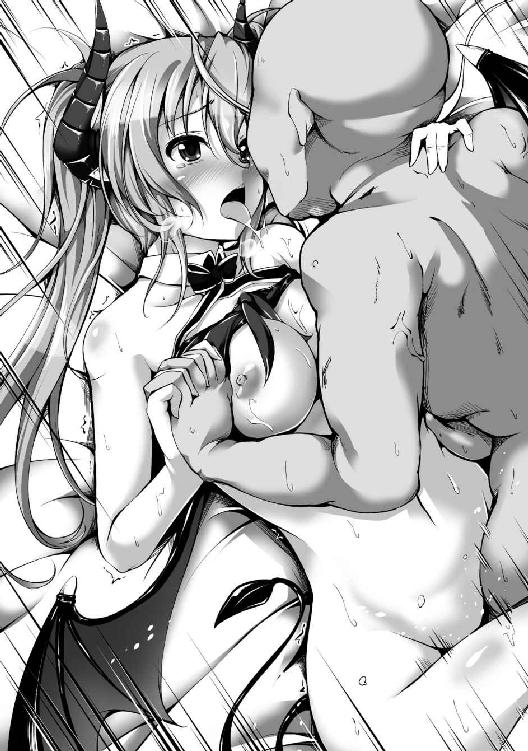
「ぅあっ、ぃ、く......あぁっ、あん......っ、い、あっ......ク、イク......ロミオ様っ、キス......っ、イク、キスぅ！」
俺は亀頭が子宮口に当たる快感に意識が飛びそうになりながらも、ミルティスと唇を合わせた。
上の口も下の口も、ねちょねちょぐちゅぐちゅと淫猥な音を立て、俺はもはや身体が勝手に動くに任せて快楽に浸った。
「ぅむっ、むぅんんんんんんんん──っ！」
ミルティスがくぐもった声を上げながら大きく身体を強張らせ、俺の左手が握り潰される勢いで握り締められた直後、果てた。
俺は絶大な快感に腰を抜かしそうになり、視界が一瞬真っ白になった。
尿道を凄まじい勢いで精液が駆け上がって、子宮口にキスしたままの鈴口から飛び出し、音を立てて彼女の最奥に注がれる。
俺もミルティスも呼吸が止まり、しばらくキスしたまま硬直した。
ビクンビクンと肉棒が暴れ回るように跳ねて射精を続けるが、一向に収まる気配がない。
「ぃ、あ............あ、ぁ......ぅ......」
ゆっくりと唾液の糸を引きながら口を離すと、ミルティスが小さく喘ぎを漏らし、ぎこちなく呼吸する。だが未だに俺の射精は終わっておらず、ビュッと注がれる度にミルティスの身体がビクッと痙攣する。
それからどれほど続いたのか、気付いたときには吐精が終わっており、俺はミルティスの上に倒れ込んでいた。
「はぁ......ふぅ......ロミオ様......」
「......ミルティス」
俺たちは互いに乱れた呼吸を整えながら、至近距離から見つめ合う。
軽くキスすると、全身汗だくの俺の首にミルティスが腕を回して抱きついてきた。
そうしてしばらく無言で抱き合った後、俺はゆっくりと身体を起こし、未だガチガチに勃起したままのチンコを引き抜いてみた。
「んっ、ぁ......」
ミルティスが恍惚とした苦鳴を微かに漏らした。
俺は蝋燭の薄明かりの中で、彼女の秘唇にじっと見入ってしまう。かっぽりと開いた膣口から、ピンクがかった白濁液がこぽこぽと止めどなく溢れ出てくるのだ。
シーツを見てみると、いつの間にか点々と真っ赤な染みができていた。
これ......結構な出血量じゃねえか......？
「ミルティス......大丈夫ですか？」
「う、うん......痛いけど、平気だよ......」
そうか、良かった。
しっかし......エロいな、可愛いくせに卑猥なマ○コだ。
大きく開いていた膣口は内部の媚肉が蠢きながら見る見るうちに小さくなっていく。愛液と鮮血混じりの精液も流れが止まり、シーツの上には大量のどろどろした粘液が広がっている。
「もぅ......そんな、見ないで......こっち来て......？」
仰向けに寝そべったままのミルティスが脚を閉じ、いじらしげに身じろぎしつつ、力なく手を伸ばしてくる。
俺はその手を握り、彼女の隣に倒れ込むように寝転がった。
「んん......ロミオ様......」
ミルティスは擦り寄るように俺の胸へと顔を寄せ、もう一方の腕を回して抱きついてくる。
俺も彼女の背中に手を回し、ゆったりと抱き留めた。
「ねえ、ロミオ様......まだ硬いよ......？ もしかして、まだ精剣は納まってない？」
俺は背後を振り返って、先ほど扉の前に置いた精剣を見遣った。
いつの間にかピンク色の刀身は真新しい鞘に隠れてしまっている。
「大丈夫です、精剣はもう鞘に納まってます」
「え、でも......」
「ミルティスが可愛いので、まだ硬いんです」
そう告げると、ミルティスはチラリと上目遣いに俺の顔を見上げてきた。
かと思えば、耳まで真っ赤な顔を俺の脂肪に埋めて強く抱きしめてくる。
可愛すぎだろ、まだまだヤリたい。
が、ミルティスは初めてだったので無理は禁物だろう。
「........................」
「........................」
なんとなく無言でしばらく抱き合う。
適度な疲労による虚脱感とまったりした雰囲気が最高に心地好い。
ミルティスのこの温もりといい、肌の色や質感といい、淫魔族は人間と遜色ないな。
角と翼と尻尾は生えてるけど、それがまた抜群に似合っているので、ただの人間の美少女よりよっぽど可愛い。
嗚呼......素晴らしき哉、淫魔嫁。
「ねえ......ロミオ様」
ベッドの上で嫁の温もりを感じていると、不意に呼び掛けられる。
ミルティスは実に幸せそうな緩んだ顔で、俺をちらりと見上げてきた。
「どうかしましたか？」
「わたしってさ......淫魔として、おかしいでしょ？」
「え？ 急にどうしたんですか？」
表情や声音から察する限り、ミルティスは特に自虐的になっているわけではないようだ。
むしろ微笑みを浮かべて、俺の顔をじっと見つめてくる。
「わたし......エッチなこと、苦手で......だから、町ではね、男の子が苦手だったんだ」
「......そう、だったんですか」
その割りに、出会ってすぐ俺におっぱい揉ませてくれたな。
「淫魔の男の子って、みんなすごくエッチなんだ。だからわたし、結婚したくなくて......でも族長の娘は、十五になったら結婚しないといけないって、掟で決まっててさ」
「............」
「それで......中魔族の人なら、淫魔族よりエッチじゃないでしょ？ だから大丈夫かなって思って、ちょうど御縁活祭の時期だったから、お父さんに言われるままお見合いしてみたんだ」
昨日レヴィンから聞いた話によれば、御縁活祭とはこの町ペシュカで年に一度行われる大事な祭りらしい。
中魔族と淫魔族は昔から友好関係にあるが、魔族の各氏族は普通、利害のみで敵対や友好の関係を築いていく。しかし、中魔族と淫魔族は互いに決して敵対しないようにと、こうして共同生活する町を作り、血縁という何よりも強力な結束で協調関係の強化と保持を図っている。
御縁活祭は中魔族と淫魔族の男女を結びつけんとする祭りで、つまるところは婚活パーティーだ。
「でもね、相手の人......なんだかすごくエッチでね、いきなりお尻触ってきたんだ」
「なに......!?」
どこのどいつだ、俺のミルティスの尻に触れやがった自殺志願者は。
腹立たしいクソ野郎だな......とりあえず尻を揉もう。俺で上書きしてやる。
「んっ......もぅ、やめてよロミオ様ー、今わたし大事な話してるんだよっ」
「あ、はい、すみません......」
「え、あ、そんなに落ち込まないでっ、べつに怒ってないから！ ロミオ様ならいつでも触っていいからっ！」
いつでも嫁の尻を揉みしだける権利を得た。
よし、今度はおっぱいを触って、いつでも嫁のおっぱいを揉みしだける権利を獲得するか。
と思いかけたけど、大事な話とやらの邪魔はこれ以上できないので、断腸の思いで自重する。
「えっと......あれ、どこまで話したっけ......？」
「いきなりお尻を触ってきた変態野郎のところですね」
「そうだった、それでね、わたしその人の手を叩いて『変態！』って言ったの。そしたら、その人......『淫魔のくせに何言ってんだ、ほんとは触って欲しいんだろ』って言ってきたんだ」
クソが......あとで名前教えてもらってしばくか。
精剣は納刀の儀による呪い故に易々と使えないが、今の俺には聖剣エクスカリバーもある。
「わたし、中魔の人も嫌になっちゃって......次のお見合いもあったんだけど、もう全部断ってこの部屋に引き籠もってたんだ。それで四日くらいしたら、神子様と人間たちを見つけたって報せが来てね」
「それは......私のことですよね？」
「うん、それを聞いてね、わたし思ったんだ。中魔の人でも淫魔の人でも、神子様みたいに特別な人なら、きっと普通じゃないんだろうなぁって。わたしも普通じゃない......っていうか、変な子だから、たぶん気が合うはずだって」
ミルティスはどこか夢見がちな乙女のような顔で遠い目をしている。
いや、もう身体的には乙女じゃないか。
俺が処女膜を貫いて、破瓜の血を流させ、盛大に中出しまでして、女にしたんだ。
この俺が、この俺のチンコで。
あぁ、ヤバい......今なら悔いなく死ねる自信ある......
「そうしたらヴェベル様の話を思い出して、あそこに行ってみたの。ぼーっと浮かびながら、結婚どうしようかなって悩んでたら......そこにロミオ様が上から降ってきたんだよ！」
嬉し楽しそうにはしゃいだ声を上げながら強く抱きついてきた。
生おっぱいが当たって非常に気持ち良いけど、愚息が鎮まらないからほどほどにして欲しい。
「これってすごいよねっ、運命だよねっ！」
「え、ええ、そうですね、運命ですね。でも、あの......私も急におっぱい揉ませて欲しいって、言っちゃってましたけど......？」
あの頃は若かった。
なにせチンコのない童貞野郎だったからな。
いやつい昨日の話だけどさ。
「うんっ、すっごく驚いたけど、でもロミオ様は神子様で、きちんと確認してくれたからね！ それにわたしを淫魔族の女の子じゃなくて、一人の女の子として見てくれたしっ！」
「ま、まあ、私は紳士ですからね」
「うんっ、ロミオ様は紳士だよ、さっきも......その、優しくして、くれたし......え、えっと、とにかくっ、ロミオ様は格好良いし、神子様だし、紳士で優しいし、精剣の使い手だし、すっごく格好良いよっ！」
「ありがとうございます」
どうやらミルティスから見て、俺は最高に格好良い運命の男らしい。
しっかし......運命は未だしも、俺が格好良いって、やはりどうにも腑に落ちんな。
仮に中魔族では俺レベルのブサイクがイケメン扱いされているとしても、ミルティスは淫魔族だ。淫魔族から見ても俺がイケメンに見えるのが普通なのか、ミルティスの美的感覚が狂っているのか。
俺としては後者な気がしてならない。
「ねえ、ロミオ様、あとで絶対に結婚指輪作ろうね。それでリューリカにいるわたしのお母さんと妹に、一緒に結婚の報告しようね」
「あ、妹さんがいるんですか？」
「うん、わたしの一つ下の子だよ。三つ上のお姉ちゃんもいるんだけど、この前旦那さんと一緒に戦争行っちゃったんだ。早くお姉ちゃんにも報告したいな......」
一転してしみじみと呟くミルティス。
戦争に行ってるなら帰ってこない可能性もあるから、心配なんだろう。
姉の話題は不味いな。
「妹さんはどんな子なんですか？」
「ん？ ユナはね......あっ、ユナっていうんだけど、ちょっと生意気な子だね。昔から中魔族を嫌ってるけど、でもきっとロミオ様なら好きになってくれるよ！」
「そ、そうですか、そうだと嬉しいです」
ミルティスの母親と妹なら相当に美人で可愛いはずだ。
ご挨拶は緊張するが、たぶんなんとかなるだろ。
なにせ既にお義父さんという最大の難関をクリアしているのだ。
「......んー、ロミオ様は柔らかくて温かいね」
ミルティスがすりすりと俺の胸に頬を寄せ、心地好さそうに目を閉じている。
俺も嫁と全く同じ気持ちだ。
「ロミオ様......あの、まだ......硬いよ？」
「そうですね、ミルティスが可愛いので」
「え、えっと......そのね、したいなら、してもいいよ......？」
頬を染めて俺と目を合わそうとせず、小さく呟く美少女。
「ですが血だって出ましたし、無理は禁物でしょう」
「ありがとう、ロミオ様......やっぱり優しいね。でも、その......いいよ？」
うっ、そんな可愛い顔で上目遣いに見られたら我慢できなくなる。
一応、一発出したからか今は割かし冷静だが、おっ始めると今度は歯止めが利かなくなる可能性が非常に高い。
「いえ、気持ちは嬉しいですけど、やはり無理は良くありませんよ」
「う、うぅ......無理じゃなくて、その......わたしが、したいっていうか......」
「え......？」
「だ、だって、痛かったけど、なんか......すっごく幸せな気持ちに、なれて......最後の方は......良かったし、うん......あの、エッチって、思ってたよりすごくいいものなんだね」
ミルティスは恥ずかしげに、はにかむように笑みを溢す。
が、すぐに紅潮した顔を俯けて俺の胸に埋め、更に小さく呟いた。
「それに......ロミオ様、気持ち良かったんだよね......？ わたし、もっとロミオ様のこと、気持ち良くしたいの」
「────」
「本当は、町のみんなに色々報告しないとだけど、お父さんがね、神子様の休息に一時間くらいは待つって言──きゃっ!?」
俺は身体を起こしてミルティスの上に覆い被さり、たくし上げられたままのブラジャーを脱がせた。先ほど背中に手を回していたときに紐を解いておいたのだ。
全裸となった銀髪淫魔美少女は一瞬驚いた表情を見せるも、すぐに可憐な微笑みを浮かべて俺の首に手を回してきた。
「......ミルティス」
「ん......ロミオ様」
俺は嫁に口付けをして、第二回戦へと洒落込んでいった。
■ ■ ■
身体を洗って着替えた後、俺は大広場に来ていた。
先ほど俺が愛妻とのイチャラブセックスを満喫していたとき、お義父さんたちは色々と準備を整えてくれていた。
本当はこんな面倒なこと、俺はしたくないんだが......
お義父さんのお願いは無碍にできん。
「皆さん！」
俺は巨大石壇の下に集まった人々へと声を張り上げた。
今回も大広場が埋め尽くされるほど大勢いる。まだ朝方にもかかわらず、町中の者たちが集まっているのだろう。
生憎と未だにこの町周辺の空は曇っているが、既に陽はある程度上っているので薄明るい。
「我らが同胞を無残にも鏖殺した人間共ですが、ご覧の通り打ち倒して参りましたっ！」
俺は左右に並び立つ十字架を両手で指し示した。
右の十字架には長身ドワーフの無傷な全裸死体が張り付けにされている。
左の十字架にはチャラ男の無傷な全裸死体が張り付けにされている。
そして俺の背後にも立つ十字架にはジイさんの黒焦げた死体が張り付けにされている。
「私はこの通り、傷一つ負わずに完勝いたしました！ 更には捕虜として捕まっていた同胞も救出いたしましたっ！ 全ては私を人間共の手から逃れる隙を作ってくれた、亡き同胞たちのおかげですっ！」
声高に断言すると、大広場にいる無数の人々が一斉に歓声を上げた。
すげえ熱気の大音声だ、身体に響いて脂肪が振動しそうな勢いがある。
「ここにいない三人は生かしたまま捕らえてあります！ ですがご安心くださいっ、奴らには相応の報いを受けてもらうつもりですっ！ 同胞たちの無念を晴らすため、まだ死という安楽を与えるつもりはありませんっ！」
まあ、クリステラさんは殺さんがね。
むしろ丁重にお持て成ししないと。
「もはや何ら憂う必要はありませんっ、同胞たちの仇は取りました！ あとはこの穢らわしい死体を焼却するだけですっ！」
俺がそう叫ぶと、三人の男女が松明を片手に動き出した。
淫魔族の族長レヴィンが右の十字架の側に立ち、中魔族の族長ドゥンガが左の十字架の側に立つ。そして微妙に内股気味でぎこちなく歩み寄ってきたミルティスが俺に松明を渡してくれた。
あとはこれを油塗れの十字架に着火して、亡きオーク兵共へ向けた弔いの炎を上げさせるだけでいいのだが......
なんか興が乗ってきたな。
「皆さんっ、私たちは弱小氏族です！」
俺のその言葉に、大広場に漂っていた大勝利の雰囲気が揺らいだ。
巨大石壇の下にいる連中も、レヴィンやドゥンガ、隣のミルティスまで、戸惑いの表情を見せ始める。
「我ら中魔は中途半端族と馬鹿にされ、淫魔の方々も戦えぬ役立たずと罵られていますっ！ これは覆しようのない事実ですっ、我らは間違いなく弱小の氏族です！」
「あ、あの、ロミオ様......？」
「しかしっ、もはや違いますっ！」
俺は右手の松明を大きく掲げ、決然と告げてみせた。
その瞬間、空を覆う灰色雲の隙間から一筋の陽光が降り注ぎ、俺を照らし出す。
「なぜならばっ、今は私がいますっ！ 中魔族の神子たる私っ、そして淫魔族の秘宝たる精剣ペニスレイヴ！ この二つが合わさったとき、もはや私たち中魔と淫魔は聖剣の使い手すら打破し得る最強氏族となるのです！」
いかん、なんか俺テンション上がりすぎてるな。
自分でも何言ってるのか分からなくなってきた。
でもさ、憎きクソ勇者のチンコをぶった切ってやり、銀髪ツインテ淫魔美少女とエッチできたんだ。これで興奮するなというのは無理な話だろう。
「皆さんっ、これからは胸を張って生きるのです！ もし馬鹿にする者がいれば、中魔と淫魔の力が結実した存在たる私が理解させてやりますっ！」
「ロ、ロミオ様......っ！」
「そしてっ、私はこの度こちらのミルティスと結婚しました！ もはや私たち中魔と淫魔の絆はたとえ魔王様だろうと破れませんっ！」
「え、ふぇ!?」
俺は左手でミルティスの肩を抱き、右手の松明をポイッと後ろ手に放り投げた。
すると背後から一瞬で勢い良く炎が上がり、レヴィンとドゥンガも続けて左右の十字架に火を放つ。
「皆さんっ、これからは私たちの時代です！」
腰のベルトに差していた精剣ペニスレイヴを鞘ごと抜き、右手で頭上に高く掲げた。
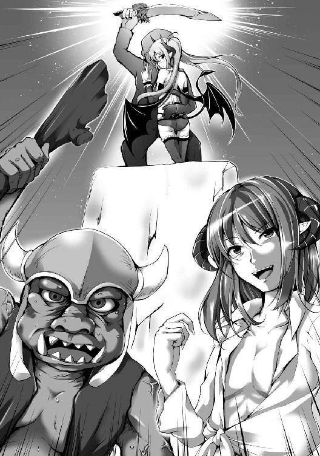
すると、大広場に集う数多の人々は一斉に大歓声を上げた。
ドゥンガが号泣しながら「神子様バンザーイッ！」と叫び始めると、瞬く間に伝播して大広場の全員が手を突き上げながら合唱する。
「ロミオ様っ、大好き！」
ミルティスに抱きつかれ、大喝采を浴びながら、俺は胸の内に何か温かいものが広がっていくのを感じていた。
そう......この心地好い誰かの温もり、優しい眼差し、胸に響くみんなの声。
今この瞬間、俺はここにいていいんだという安らぎをたしかに覚えている。
俺の居場所はここにあるのだ。
こここそが俺の居場所なのだ。
もう人類なんぞ知らんっ、俺は中魔族のロミオとして生きていく！
「そうだ......これからは俺の時代だっ！」
後世の歴史家はこの日のことを《勃々之日》と呼んだ。
弱小氏族たる中魔族の神子が聖剣の仕手を単独で制し、前代未聞の覇道を歩み出した日。
《五大覇魔》を超える《真精魔帝》として彼が世界に君臨する、これが最初の一歩となったのだった。
今朝方の演説めいたもので、
『皆さんっ、これからは私たちの時代です！』
とか宣ってみたものの、俺は特に何かをする気はない。
今はただミルティスとのイチャラブ新婚生活を満喫しつつ、クソビッチを調教したいだけだ。
だから面倒事は御免被る。
「神子様っ、ロミオ大峡谷の様子を見て参りましたが、まさに圧巻！ その身は魔王となられるほどの器だと確信いたしましたっ！」
「あれぞまさに中魔と淫魔の力の結晶っ、もはや我らに恐れるものなど何もないのじゃっ！ つきましては神子様、次に精剣を抜かれた際には是非にも我が孫娘ジュビリーをっ、ジュビリーを納刀の儀で抱いてやってくだされっ！」
「すごいよロミオ様っ、ヴェベル大峡谷みたいだったし本当にロミオ大峡谷だよっ！ さすが神子様で精剣ペニスレイヴの使い手だよ！」
「たしかにアレは圧巻でした。中魔の神子様でもヴェベル様の生まれ変わりと称されても、誰も異を唱えないでしょう。ですが、あのロミオ大峡谷......必ずや周辺氏族の方々から陳情が舞い込むことでしょう」
ドゥンガ、スロボダン、ミルティス、レヴィンの四人は先ほど見てきた〈精洪破斬〉の破壊跡について色々語っている。
集会所に集まった他の中魔と淫魔の面々も同様で、集会所内は騒がしい。
馬鹿オーク共が興奮も露わに唾を飛ばしてくる一方、お義父さんは悩ましげな顔を見せていた。
「神子様、よくお聞きください。あの精剣による一撃が放たれた方角には王魔族の領地があります。王魔族はもちろんのこと、他の氏族も必ずや我らに接触を図ってくることでしょう」
「あの、王魔族というのは？」
「記憶喪失であることは重々承知しておりますが、まさか王魔族のことまでご存じないと？」
すまんね、だからそんな驚愕の目で俺を見ないでくれ。
いや、王魔族ってなんか聞き覚えある気もするけど、名前だけだ。
もしかしたら思い出だけでなく、実は知識も色々忘れてて虫食い状態なのかもしれん。
記憶戻ってくれねえかな。
「あのねロミオ様、王魔族っていうのは悪魔族内で魔王を最も多く輩出している氏族のことだよ。魔族内でもかなりの発言力があってね、魔老院に参加してるわたしたち悪魔族の代表なんだ」
「魔老院？」
「八大部族からそれぞれ代表の氏族が集まって、王都で魔王様と一緒に政をする議会のことだね」
我が嫁は明朗快活な子であまり頭は良くなさそうだが、淫魔族族長の次女である。
たぶんそこらの淫魔よりは色々と詳しいはずだ。
俺の右腕を抱えて座るミルティスの手を握ると、ぎゅっと握り返してくれた。
「お、おぉ......神子様......どうかジュビリーのことも、どうか......っ！ 中魔でも最高の美男美女たればこそ、淫魔よりお似合いの夫婦となられるはずなのじゃ......」
「親父、涙を拭けよ、神子様ならばきっと次はジュビリーを娶ってくださるさ。ほら親父も言ってただろ？ 神子様は恥ずかしがるあまりジュビリーを選べないという本末転倒な結果になっただけなんだよ」
「う、うむ......そうじゃな、その通りじゃっ、なにせ一度は部屋を訪れながらも駆け去ってしまわれたのじゃし、何より儂の孫娘は世界で一番可愛いんじゃっ！」
いや、ごめん、世界で二番目にブサイクの間違いなんじゃないか？
え？ 一番？
一番は俺だよ、言わせんな恥ずかしい。
「神子様、王魔族や他の氏族への対処は私たちにお任せください。おそらく彼らは我ら淫魔の首都リューリカを訪ねて来るはずですので、神子様はミルティスと共にここペシュカにて休養しつつお待ちください」
さすがお義父さん、頼もしいことを言ってくれる。
淫魔の族長で、かなりのイケメンで、性格まで真面目とは、俺は良縁に恵まれたな。
「分かりました、私は人間共を尋問しながらミルティスと一緒に過ごしておきます。ところで......お義父さん」
「なんでしょうか」
「私のことはロミオで良いと言いましたよね？」
「そうだよお父さんっ、ロミオ様はもう家族なんだから堅苦しい呼び方はやめようよっ」
我が嫁たる銀髪ツインテ淫魔美少女が賛同してくれた。
相変らずなんか良い匂いがするし、二の腕に当たるおっぱいは柔らかいし、ツインテールが似合いすぎだし、下着同然の格好はエロ可愛いし、もう何もかもが最高だ。
俺の嫁は世界一の良妻になるな。
「い、いや、たしかに、そうではあるが、いくら義理の息子になったとはいえ、アレほどの力を持つ御方を呼び捨てにするなど......それにミルティスとてロミオ様と呼んでいるではないか」
「だってロミオ様はロミオ様だし......ロミオ様はわたしの呼び方、嫌......？」
「いえ、嫌ではありませんよ。ロミオ様でも旦那様でもご主人様でもあなたでも好きに呼んでください」
「あ、あなた......っ!?」
ミルティスは頬を紅潮させて目を伏せ、なにやらモジモジし始めた。
可愛すぎる、エッチしたい。
「と、とにかくっ」
息子がいきり立ち始めた矢先、レヴィンがわざとらしく咳払いをして強引に話題を転換しにかかった。
「神子様はこの町でご静養しつつ、私たちの報告をお待ちください。ただ、捕らえた人間共の尋問や御身の警護など色々あるでしょうし、お付きの者を一人置いていきます......クレストッ」
テーブルを挟んで俺の対面に座すお義父さんが名を呼んだ。
すると、彼の後ろにすっと人影が現れた。レヴィンより幾分か若めの、たぶん二十代半ばくらいのイケメン淫魔だ。
「これはクレスト、日頃から私の補佐をしている者の一人です。神子様、どうかこれからはクレストのことを従者として、お好きなようにお使いください」
「お初にお目に掛かります、神子様。僕はクレストと申します。僕のことは家事洗濯から戦闘はもちろん尻の穴までお好きにお使いください」
「え......尻の穴......？」
「もーっ、ロミオ様の前だよクレスト！ そういうこと言うのやめてっ！」
ミルティスが恥ずかしげに叫ぶと、真っ黒い執事服に身を包んだイケメンは綺麗に一礼を返した。
「これはミルティスお嬢様、申し訳ありません。ですが、神子様は前代未聞の巨根をお持ちだと聞き及んでおります。一度くらい味わいたいと思うのは淫魔族の者として当然の欲求かと思いますが」
「ロミオ様、取り合わないでいいからねっ。クレストはすっごく優秀だけど、女の人より男の人が好きな変態なんだよ！」
「お嬢様、誤解を招くようなことを仰らないでください。僕は女性より男性が好きなのではなく、男性にしか興味がないのです。ちなみに、突っ込まれるより突っ込む方が好きです」
「ほう、それはそれは」
「えっ!? 何がほうなのロミオ様!?」
優男然とした顔立ちのインキュバスは悠然と微笑んだまま佇んでいる。
どうやらレヴィンやミルティスとは慣れ親しんだ仲っぽいし、遠慮なく従者として使わせてもらうか。こいつはクソ勇者への復讐に利用できそうだしな。
「神子様っ、どうか我ら中魔からも従士を一人お側に置かせてください！ 誰か適当な者は......っ、あ、そうですっ、神子様がお救いくださった者は如何でしょうかっ!? まだ傷は癒えておりませんが、あの者は自分の側近でしたので作法も心得ておりますし、神子様への恩義からも忠実に仕えること間違いなしですっ！」
「ですがドゥンガ殿、あまり大勢を神子様の周りに控えさせてはご迷惑になりませんか？ 私とて本来ならば最低でも三人はお付けしたいところを自重して一人にしたのですよ」
「何を言うか若造がっ！ 神子様は中魔族なのじゃっ、ならば中魔の者こそ右腕となるに相応しい！ そしてそれは妻たる者にも言えること！ 故に神子様っ、どうかジュビリーをっ、ジュビリーをよろしくお願いいたしますっ！」
「もはや神子様の正妻はミルティスで確定しております、ジュビリー殿は妾となられるのが道理でしょう」
「ならば従士は我ら中魔の者が右腕となり、淫魔の者は左腕に甘んじていただきたい！ それができぬのならばジュビリーが正妻としてあらねば不公平極まるっ！」
ドゥンガとスロボダン、レヴィンの三人がやにわに席を立ち、アレコレと口論を始めた。
こいつら俺の意思は確認しねえのかよ。
「何はともあれ、これからよろしくお願いいたします、神子様」
「ロミオ様、今日はこのあとどうする？ 人間共が目覚めてたら尋問するのもいいけど、できれば早く結婚指輪作って結婚式したいなっ」
ガチホモ執事の挨拶を横目に、俺は美少女妻との今後に思いを馳せた。
できれば結婚指輪とか結婚式よりもエッチしたい。でも今日はもう二回したし、ミルティスは処女を喪失したばかりだ。少しは我慢した方が燃えそうだから、また明日にするのもありだな。どうせこれからは何があろうとも、最低でも五日に一回はエッチできるんだ。
もう童貞みたいに焦ることはない。
■ ■ ■
「それでは神子様、私は一旦リューリカへ戻ります。本来ならば急ぎ婚姻の儀を執り行うべきなのですが、状況が状況です。亡くなられた兵たちの葬儀もありますし、後日我が妻ミュレスと末子ユナを連れてこの町に戻って参りますので、然る後に皆で祝福させていただきます」
「お父さん、結婚式はリューリカでするんじゃないの？」
「神子様は中魔だ。ならば中魔と淫魔の交流地たるこのペシュカで行うのが道理だろう」
みんなで昼食を食べた後、レヴィンはホームタウンである淫魔族の首都リューリカに戻っていった。
正直、結婚式とかどうでもいいが、ミルティスの母親と妹には会ってみたい。
淫魔だから親子丼とか姉妹丼とかも......
いやさすがに無理か？
「神子様、自分も一度ターセルに戻らせていただきます。御身の身元調査に何か進展があったやもしれませんし、近いうち兎耳族が訪ねてくると思われますので対応せねばなりません。あるいは神子様のお手を煩わせることになるかもしれませんが......その際はどうかよろしくお願いいたします」
中魔族の族長であるドゥンガも、一旦ターセルという中魔族領の首都に戻っていった。
曰く、俺の身元調査は兎耳族から報せを受けた段階で始めていたらしい。
どうせ調べても意味ないのに......まあいいか。
俺は彼らを見送ってから、のんびりと動き出した。
「クレストさん、少しお願いしたいことがあるのですが......」
側にいるミルティスには聞かれたくなかったので、俺は野郎に耳打ちする。
「......はい......はい......はい、承知いたしました、神子様。それではお嬢様共々、お気を付けて行ってらっしゃいませ」
優雅に一礼して、淫魔のイケメン執事が見送ってくれた。
俺の頼み事に対して何一つ質問せずに了解してくれたし、あのホモ使えるな。
「ねえ、ロミオ様はこれからどうするつもり？」
集会所を出て、ミルティスに空を飛んでもらって目的地へと向かう。彼女の細腕で俺の両手を掴んでもらい、二人で飛行だ。嫁に苦労を掛けるのは気が引けるが、仕方がない。
にしても、肥満体の俺を持って飛行できることからして、やっぱうちの嫁は力持ちだな。
殴られでもしたら死にそうだ。
「どうするって、先ほどお義父さんたちに言った通りですけど」
「その後のことだよ。精剣ペニスレイヴの使い手なんだから、戦争に行く気はあるのかな？」
「え、戦争......？」
ちょっと待て、俺は戦いなんて御免だぞ。
というか、精剣は諸刃の剣なのだ。
「あのね、お姉ちゃんたちもロミオ様がいればすごく心強いと思うんだ」
「あ、あー、なるほど、ミルティスは優しいですね。ですが、精剣は一度使うと納刀の儀をしないといけないですから、その......増えちゃいますよ？」
「増えちゃうって、何が？」
「ですから、その......よ、嫁というか、妻というか......」
不思議そうに訊ねてきた嫁にぎこちなく答えた。
思えば、これは良い機会だ。
ミルティスがハーレム肯定派なら俺はじゃんじゃん嫁を増やす。
「む、何言ってるのロミオ様。嫁も妻もずっとわたし一人だけだよ。もしかして、ロミオ様いっぱいお嫁さん欲しいの？」
「え!? い、いや......そ、そそそんなわけないじゃないですか！ ですけど、ほら、納刀の儀をしてくれた人には定期的に私の精液を摂取してもらわないと呪いで死んじゃいますよね？」
「うん、だから人族のメスを捕まえてすればいいんだよ。前線の方ならいっぱいいるからねっ、使いたい放題だよ！」
恐る恐る嫁を見上げると、無邪気な顔で至極当然のことのように宣っておられた。
え......ちょっと、あの、ミルティスさん？
「わ、私が、他の人と、エッチしてもいいんですか？」
ハーレムはダメっぽいのに、それはおかしいだろ。
「それは......もちろん嫌だけど、でも相手が人間共ならべつにいいかな」
「え？ でも、え？ いいんですか？」
「うん、だって相手は人族だしね。わたし浮気は絶対許さないけど、それは相手が同じ魔族である場合だけだよ。さすがに家畜以下の存在に嫉妬するほど心は狭くないんだからね」
「........................」
い、いかん......忘れてた、嫁は魔族なんだ。
なんか普通に明るい良い子だから思い違いをするところだった。
ミルティスは魔族の常として、人族を同等の生物に見ていない。彼女にとって俺が人間やエルフとセックスする行為は、俺が獣畜生の穴でオナニーするのと同レベルの話なのかもしれん。
さしずめ人族の女は精剣のための消耗品といった感じだろうか。
参ったな、どうしよう......ハーレム作れないのか？
「もしかしてロミオ様、戦争には行きたくない？ いっぱい人死んじゃうし、辛くて苦しくて酷いものだって、わたしも聞いてるし......それに、戦争って昨日みたいな酷い光景が普通にできちゃうんだよね......？」
「ま、まあ、戦争のことはみんなで話し合って追い追い考えていきましょう。今の私は戦争より、ミルティスと一緒に過ごすことの方が大事なんです」
「ロミオ様......うんっ、ありがとう！ あっ、ほらアレだよっ、細工工房！」
ミルティスの視線の先にはこぢんまりとした石造りの建物があった。
先ほどから何度か、空を飛び交う淫魔族の連中に凝視されながらも、俺たちは工房前の通りに降り立つ。すると通行人たちから一斉に注目され、やにわに通りがざわめき始めた。
「み、神子様だっ、握手してください！」
「今朝の御言葉聞きましたっ、素晴らしかったです！」
「ありがとうございます神子様！」
「神子様がいらっしゃれば俺たちは安泰です！」
大勢から詰め寄られ、あっという間に人だかりができてしまった。
三千のオーク兵たちが死んだことで、御縁活祭とかいうお見合い祭りは中止となり、町の人々は亡き戦士たちを偲んで深く哀悼していた......と思っていたが、全然そんなことはないようだ。
「すみません、今日は嫁と一緒に指輪を作りに来たので、この辺で失礼します」
「おおっ、みんなっ、神子様の邪魔をしてはいかん！」
誰の言葉かは知らんが、有り難い自重だった。
俺とミルティスはそそくさと細工工房の扉を開けて中に入り、一息吐く。
「あはは、みんなすごかったねー」
「ですね、でも大人しく引いてくれましたし、みんな良い人たちです」
ま、有名税ってやつか。
嫌われるよりは遥かにマシだ。俺並のキモメンは人界なら今さっきとは真逆に、周囲から人が遠ざかっていくだろうからな。そして包丁や馬糞でも投げつけられて罵詈雑言の嵐だろう。
「それで、工房に来たわけですけど......誰もいませんね」
「あのーっ、すみませーん！」
ミルティスが大声で呼び掛けた。
屋内は工房という場所を連想させるものがあまり見られない。普通に小綺麗な居間といった感じにテーブルや椅子が置かれていて、奥へと続く扉のない通路があるくらいだ。
ふと、その通路から人影が現れた。
慌てたように走り出てきて、俺たちにつぶらな目を向け、ぺこりと頭を下げてくる。
「あっ、どうもすみませんお待たせしましたっ」
オークの子供だった。緑色の肌に小太り体型の、十歳かそこらくらいの少年だ。
どうやらオークは大人も子供も総じてブサイクらしい。
「すみませんが今は親方が出掛けてて......って、え？ あ、神子様......？」
「どうも、初めまして。それで親方さんはいつ頃帰ってくるのでしょうか？」
「え!? あ、はいっ！ えっと、その......あ、あのっ、親方はお兄さんに付き添ってます！」
「それはどういう意味かな？」
可哀想なほど緊張する少年オークに、ミルティスが優しく問い掛けた。
俺の嫁には妹がいるらしいし、年下の扱いは得意なはずだ。
ここは彼女に任せよう。
決して面倒だからとかブタ面のガキンチョがちょっとキモいとか、そういうことは思ってないよ。
「親方の、お、おにっ、お兄さんはっ、神子様に助けられたと聞いてます！」
「もしかして、人間共に捕まってて、今朝方ロミオ様が連れ帰ってきた人のこと？」
「そ、そうですっ、親方はお兄さんのガ、ガルフさんが目覚めるまで、側にいると言ってましたのでっ、る、留守で、すすすすみません！」
デブガキが勢い良く頭を下げてきた。
べつにそこまで畏まらなくてもいいのに。
しかし子供までこうだと、如何に神子って存在が特別なのか実感できるな。
「君、名前はなんていうの？ わたしはミルティス、よろしくね」
「ニ、ニックスですっ、ミルティス様！」
「そっか、それじゃあニックス君、わたしたちはガルフさんのところに行ってくるね。お邪魔してごめんね、お留守番頑張ってね」
おお、やはり俺の嫁は子供の扱いに慣れているな。
オークの少年ニックスは世界一可愛い美少女の笑顔で幾分か緊張が和らいだらしく、肩の力が抜けている。
とりあえずもうここに用はないので、さっさと退散するか。
「ではニックス君、私たちはこれで失礼しますね」
「あっ、あのっ、神子様！」
「ん？ なんですか？」
「あの......その、あっ、握手してくださいっ！」
思わず苦笑を溢してしまいながらも、俺は少年オークと握手してやる。
やはり人間の手と大差ない感触だ。
手を離すと、ニックスは興奮した面持ちで自分の掌を見つめて口元に笑みを浮かべている。
何がそんなに嬉しいのか全く分からん。
人間の子供だったら気持ち悪さのあまり、泣き出すか失神するところだろうからな。
「あ、ありがとうございました！」
見送られて外に出ると、まださっきの人だかりが残っていた。
俺は曖昧な笑みを浮かべながら彼らに手を振り、すぐにミルティスに抱えられて飛んでもらう。
「ふふっ、ロミオ様は人気者だね」
「べつにここまで敬ってくれなくてもいいんですけどね」
「何言ってるの、ロミオ様はそれくらいすごいんだよっ。神子様で精剣の使い手で、三千人で立ち向かっても歯が立たなかった相手を一人でやっつけたんだから！」
ミルティスの言葉を有り難く受け取りつつも、俺は不安を覚えていた。
もしこれで俺が人間だとバレた日にはどうなるのか。
連中は騙されていたと感じて、今の絶大な敬意や好意が裏返り、俺を呪い殺す勢いで憎悪するだろう。
正体は絶対にバレてはならない。
故に、クソ勇者共の扱いには慎重を期さねばならない。
そんなことを考えながら、俺とミルティスは病院へ向かっていった。
■ ■ ■
人族も魔族も魔法を使う。
しかし、魔法は魔族の方に適正があるとされている。
基本的に人族は詠唱しないと魔法を行使できないが、一方で魔族は無詠唱で行使できる。
「淫魔族は中魔族より魔法力が高いんだよ。ていっても、五十歩百歩なんだけどね」
病院内の廊下を歩きながら、ミルティスが苦笑する。
廊下の隅にいるジジババオーク共が両手を合わせながら通り過ぎる俺を拝んできて、微妙に居心地が悪い。しかもたまに腕とか腹に触れてくるもんだから気色も悪い。
「他の......黒魔族とか王魔族とか、法魔族あたりの魔法力が高い氏族の町には病院とかないんだ。でも、わたしたちはそんなに魔法が上手じゃないから、病院とか必要なんだよ」
「その黒魔族とか王魔族とか、魔法力の高い氏族の人が治癒魔法士として町に常駐したり、訪問してくれたりとかはないんですか？」
「うーん、普段はないねー。でも今は戦時下だから、若い人なんかは怪我や病気を治してもらう代わりに、戦争に連れて行かれるって場合はあるよ」
えぐいな、本末転倒じゃねえか。
でもそうか......俺も怪我や病気はしないようにしないとな。
精剣ペニスレイヴの能力を使えば治療可能だが、精剣はそう易々と抜けないし、自分しか治せない。もしミルティスが怪我を負うようなことがあれば一大事なので、今後は夫として嫁のことをしっかり守っていかないといけないし、だからこそ俺は常に五体満足の健康体でいる必要がある。
とりあえずチンコが腫れ上がって痛いので、あとで嫁に治療してもらおう。
「こちらです、神子様」
純白の服で肥満体を包んだオバサンオークが、ある一室の前で立ち止まった。
それにしてもこのオバサン、見れば見るほど白衣が似合ってない。
オークってのは老若男女みんなブサイクだから、何を着たところで結局はブサイクだ。
もちろん俺もね。
「失礼します」
「ん......おっ、おおっ、神子様!?」
「え、あ、神子様!?」
部屋は個室だった。ベッドが一つだけの室内にはオーク野郎が二人いる。
一人はベッドの上で包帯だらけの上半身を起こしている見覚えのあるオッサン。
もう一人はベッド脇の椅子に座っているエプロンをしたオッサンで、両者の面差しは結構似通っている。なにせどっちも綺麗なハゲ頭だしね。
「──ぅお!?」
いきなりオッサンオーク二人が土下座してきた。
エプロンオークは椅子から跳び上がって空中で土下座姿勢を取り、床に着地した。
包帯オークはベッドから跳び上がって空中で土下座姿勢を取り、床に額を音高く打ち付けて着地した。こちらはやけにキレのある動きで、怪我人っぽいのに怪我人とは思えない活力を感じる。
「兄を助けてくださりありがとうございます神子様っ！」
「......うっ......ご、ぁ......み、神子様っ、この度は小生の命を救ってくださり、誠にありがとうございますっ！」
「えっ、あの人なんか血出てるよ!?」
ミルティスが驚いていると、白衣なオバサンオークが額から流血するオークを掴んでベッドに押し戻した。そして手早く止血処置を施していく。
それが終わると、俺たちは互いに挨拶を交わした。小休止を挟んだおかげか、もういきなり土下座してくるほど二人とも興奮してはいないようだった。
「神子様、この度は誠にありがとうございます！ 小生、死を覚悟しておりましたが、あの状況で助けに来てくださり......更にはこうして見舞いにまで訪ねてくださるとはっ！ このガルフッ、一生を懸けてご恩をお返しいたしますっ！」
「い、いえいえ、そんな大げさな......もとはといえば私を助けようとしてくださって、ああなったわけですし」
「何を仰いますっ、御身をお助けせんとするのは当然のこと！ そして小生らが油断したばかりに、ああなってしまったのですっ！」
まるで恥じ入るようにベッドの上で禿頭を深く下げ、肩を震わせるオーク。
聞くところによれば、この包帯ハゲオヤジことガルフは神子様救助隊の隊長だったらしい。部下たちを失い、しかし自分だけは生き残ったことに、何かしら思うところがあるのだろう。
「神子様、改めてお礼申し上げます、兄を助けてくださったご恩は一生忘れません。ですが、オレは兄者のような戦士ではなく、しがない細工師ですので、どのような形で神子様に報いれば良いのか......それに本来ならば一番に神子様のもとへ馳せ参じ、お礼申し上げねばならなかったにもかかわらず、神子様の方から出向かせてしまい......このガロン汗顔の至りっ」
弟は兄とそっくりの巨躯を縮めて、申し訳なさそうに顔を伏せている。
これは都合が良いな。
「ガロンさん、貴方が私のもとより家族のもとへ駆けつけたのは素晴らしいことです。もし最初に私のもとへ来ていたならば、貴方をブン殴っていたところですよ」
「お、おお、神子様......ありがとうございます」
「なんとお優しき御方だ......やはりあいつらの死は無駄ではなかったのだな......っ！」
「ロミオ様は優しい紳士だからねっ、当然だよ！」
よし、ミルティスだけでなくオッサン共の好感度まで上がった。
これで俺のお願いは絶対に断れまい。
「ところで、ガロンさん、一つお願いがあるのですが」
「は、はっ、何なりとお申しつけください！」
「私はこちらのミルティスと結婚したので、結婚指輪を作って欲しいんです」
「それは素晴らしいっ！ おめでとうございます！ 結婚指輪を作らせていただくなど本来ならばこの身に余る栄誉ですが......お任せくださいっ、最高の指輪にしてみせます！」
ガロンは再び土下座した後、エプロンのポケットから巻尺を取り出した。
そして手早く俺とミルティスの指のサイズを計ってくる。
「ガロンッ、こうしておる場合ではないぞっ！ 早く工房に戻るのだっ！」
「ああっ、無論だ兄者！ 神子様っ、三日で仕上げてみせますのでどうかお待ちください！」
エプロンをした巨躯のオッサンハゲオークはやる気に満ち満ちた顔で病室を飛び出して行った。
そんな弟を見送っていた兄はおもむろにベッドから床に降り立って、その場に跪き、ハゲ頭を垂れてくる。
「神子様、既に族長から話は聞いております。このガルフ、精剣ペニスレイヴの使い手たる神子様には遠く及ばぬものの、微力ながら御身をお支えする従士として生涯お仕えすることを誓います」
「え、えーっと、まあ、よろしくお願いします」
「はっ！」
こうしてインキュバスに続き、オークの従者だか従士だかまでが側に付くことになった。
先ほどのガロンも含め、なんだかこいつらとは長い付き合いになりそうな気がする。
病院をあとにした俺たちは集会所に戻った。
本当はミルティスに町を案内して欲しかったが、まだ町中は今朝方の熱狂が抜けきっていない。
面倒事は御免なので、三階の部屋でのんびりと過ごすことにした。
「ねえ、ロミオ様」
「なんですか？」
俺は二人用のベッドにミルティスと並んで横たわっている。
愛しの嫁は俺の左腕を抱きかかえるようにして密着しており、おっぱいが二の腕に当たっていた。
揉みたい揉みしだきたい。
「人間共の尋問、わたしも一緒していい？」
「え......そ、それは......」
ミルティスが一緒だと色々ぶっちゃけられない。
クソビッチ共は俺を人間だと指摘してくるだろうし......
「ダメ......？」
「いいえ、もちろん大丈夫ですよ」
だが愛妻のお願いは無碍にできない。
どうせミルティスは人族の言葉なんて戯言だと一蹴するだろうしな。
「ですが、その......実は女を一人、あの、調教しようかなぁ......なんて思ってるんですけど......」
「調教？」
「ただ尋問して殺すだけだと、亡くなった同胞たちの無念も晴れないと思うんです。それに彼らの遺族も納得できないと思いますし......ですから、一人は快楽調教を施して性欲処理用の肉便器にするのが良いかなと」
さも当然の如く堂々と言ってみた。
これは半ば賭けだが、ミルティスは人族を家畜以下と思っているので、たぶん大丈夫だろう。
「え......？」
しかし予想に反して、銀髪ツインテ淫魔美少女は愕然とした声を漏らし、大きく双眸を見開いて俺を見つめてきた。
い、いかん、この反応はミスったか......？
「それって、つまり......メスを一匹飼うってこと？」
「え？ え、ええ、まあ、そうですね」
「ロミオ様......わたし、毎日頑張るから！ いつでもロミオ様の性欲でも何でも全部受け止めるからっ！ だから、そんな......人間なんかで、しようとしないで......？」
「────」
愛しさを抑えきれず、俺は寝転びながらも思わずミルティスを抱きしめた。
可愛すぎる、いじらしすぎる、今すぐエッチしたい。
「あ、あの、ロミオ様......？」
「大丈夫ですよ、ミルティス。べつに私の性欲処理用に飼うわけじゃないですから。みんなの性欲処理用です、公衆便所です」
「本当に......？」
「本当です」
今朝方に獲得した権利を早速行使して、ミルティスの尻を揉んだ。
パンツ越しでも、もっちりとした張りのある尻たぶの感触は最高で、おっぱいとは違う柔らかさに理性が吹き飛びかける。
俺はスボンの中でガチガチに勃起しているチンコを反射的に彼女の身体に押しつけた。
すると、腕の中の美少女は「ん......っ」とそこはかとなくエロい声を漏らしつつも、嬉し恥ずかしそうな微笑みを浮かべた。
「......ぅん......そっか、よかった」
「それで、ミルティスは賛成ですか？」
「うんっ、みんなを思ってのことなんだから、もちろんだよ！ と、ところで、あの......ロミオ様、当たってるよ......？」
「当ててるんですよ」
ミルティスはまだ処女を喪失して半日と経っていない。
だから無理が禁物なのは分かっているが......
「ミルティス、手でしてくれませんか？」
「手......手って............ぅ、うん......いいよ......」
俺の肩に額を押し当て、赤みを帯びた顔を隠しながらも、小さく首肯してくれた。
こんな子と一緒にベッドに横たわってると、やはり我慢できなくなる。
だが無理はさせたくないので、今回は手コキだけにしておこう。
いやでもフェラもして欲しいな。
「わたしも一応、淫魔の女だから......お母さんから、色々教わってるけど、あの......ダメなところとかあれば、教えてね......？」
「もちろんです、ではお願いしますミルティス」
「う、うん......じゃあ、服を......って、あれ？ もう脱いだの!? いつの間に!?」
「今さっきですよ」
早々にズボンもパンツも取っ払った俺は身体を起こし、ベッドの縁に腰掛けた。
寝ながらしてもらうのもいいが、ミルティスが床に跪いて俺のチンコを扱く様を上から見下ろしてみたいのだ。
「ぅ、うわぁ......これが......」
銀髪ツインテ淫魔美少女は俺の足の間に両膝を突くと、愚息とご対面した。
「やっぱり、大きい......本や張形のより、すごく大きい......」
「ディルド？」
「え......あっ、違うよっ!? 練習っ、淫魔の女の子はね、初潮が来たら練習し始めなきゃいけないんだよ！ だからわたしが......ひ、一人でするのに使ったとかじゃ、全然ないんだよっ!?」
赤面した顔を左右にわたわたと振りながら口早に弁明している。
ぶんぶんとツインテが俺の両足を鞭打つように当たってこそばゆいが、とにかく可愛い。
「じゃあミルティスは普段どうやってオナニーしてるんですか？」
「そっ、そんなことより！ してあげるねっ！」
「っ、い!?」
「え!? あっ、ごめんね！」
いきなり竿を両手で強く握られたもんだから、かなり痛かった。
ミルティスって力強いからな、たぶん本気で握られたら潰れると思う......っていかん、想像したら萎えかけてきた。今は美少女の手淫に集中しよう。
「すごい......硬い......え、えっと、こう......？」
「それは弱すぎますね。練習してたのならその通りにやってみてください」
「う、うん、わかった......やってみるね」
そびえ立つ肉棒を前に頬を朱に染めたまま、嫁は右手を竿に、左手を玉に添えた。
竿は強くもなく弱くもない絶妙な力加減でしこしこと上下に扱き、玉は優しく転がすように弄ってきて、その二ヶ所同時に与えられる刺激に思わず腰が微動してしまった。
「お、おお......っ！」
「あの、どうかな？」
「すごく......良いです、上手です」
「そ、そっかぁ......良かったぁ」
足の間から不安げに見上げるミルティスは狂おしいほどの可愛らしさだ。そして照れたようにはにかむ表情は未だに穢れを知らぬ乙女のようで、思わず襲い掛かりたくなる。
暴走しないのは彼女の健気な素振りがいじらしく、そして何よりこの快感故だ。
色々教えてあげる必要があると思ってたのに、かなり巧い。
ミルティスは淫魔らしからぬ淫魔とはいえ、やはり性を生業とするサキュバスなのだ。
そう考えると、ほんとよく今朝まで処女でいてくれたものだと思うよ。淫魔なら十歳くらいのガキでもヤリまくってそうなもんだが。
「ん......ちゅ」
「ぅお!?」
いきなり亀頭にキスされた。
嫁のプニプニとした唇の感触が不意打ちすぎて腰がビクッと跳ねてしまった。
「ちゅ、ちゅぶっ......んむ、ん、ちゅ」
尚も竿と玉を刺激しながら、ミルティスは亀頭をぱっくりと咥え込んだ。
口内は唾液でねっとりと温かく、ざらざらした舌が先端を舐め上げてくる。
「んちゅ、む......？」
「良いですよ、ミルティス」
俺の表情を上目遣いに窺ってくる美少女の頭を優しく撫でた。
すると心地好さそうに目を閉じて、そのまま舌を亀頭に絡ませて刺激してくる。
正直、これが今日処女を喪失したばかりの娘だとは到底思えない技巧だ。きちんと練習していたのか、淫魔の才能なのかは不明だが、歯は一切当たらないし、とにかく気持ち良い。
「......むぅ、ん......ちゅぶっ、んふ」
「あ、無理にいっぱい咥えようとしなくても良いですよ。初めてですから先端だけでも十分です」
「ん、んむっ」
ミルティスはまだ顔を羞恥の色に染めたまま、微かに頷いて亀頭フェラを続けた。
本音を言えば根元まで咥えて欲しいが、その場合は食道まで達してしまうだろう。
亀頭を咥えている現在でも、たぶんミルティスは限界まで顎を開いて、美少女顔を少しブサイクな感じに歪めている。それがまた愛嬌があって堪らなく愛おしいのだが、これ以上は苦悶の表情を見せそうなので心苦しい。
これから何十年と、何百何千回もエッチできるので、少しずつ慣らしていこう。
「ちゅむっ、んぅ、ちゅ、んちゅっ、ちゅぱ」
「あぁ......良いです、右手はもう少し強く」
「ん、ちゅぁ、れむ」
最高の嫁は下から俺の顔を見上げつつ、右手を強く早く扱き始めた。更に亀頭全体を舐め上げていた舌が先端の鈴口をほじくり、痛くないぎりぎりの強さでまさぐってくる。
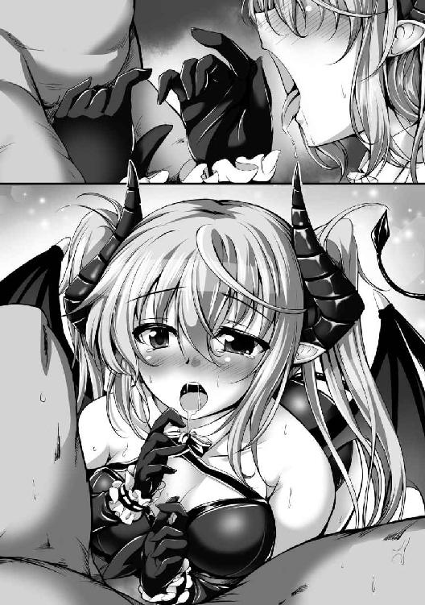
「な、これは......ヤバい......」
無数の襞が絡みつき締め付ける膣内も相当に気持ち良かったが、口内は口内で別の快感がある。
なんだかミルティスの舌と両手の動きが精液を欲する牝の動きに思えてきた。
この可愛らしい美少女が秘める淫靡な一面を垣間見た気がして、興奮が最高潮に達してくる。
「うっ......いい、イク、出しますよミルティス！」
「ちゅぶっ、ん、ちゅぱっ、んちゅ」
「く、ぅっ!?」
玉をきゅっと握られた瞬間、腰が大きく震えて果てた。
反射的に両手で頭の角を掴んでしまう。
ビュッと音がする勢いで、咥えられたままの先端から射精していく。
「ん!? んんっ、ふぐ......んぁ、んく......ちゅうぅぅぅぅっ」
「え......ぐぉ!?」
勢い良く射精している最中に、まさかの吸引をされた。
まるで吸い尽くすように両の頬をすぼめて強く吸われながら、右手は尚も竿を握ってしこしこと扱き、左手は玉をリズム良く握って転がしてくる。
「ちゅぅぅぅっ、んく、ちゅぷ......んぁ、くぅ、んふぁ」
「............あぁ」
俺は心地好い脱力感に見舞われながら、嫁の頭を撫でる。
当のミルティスは目を閉じて亀頭を咥え込んだまま、口内に射出された精液をこくこくと呑み込んでいる。本当は顔にぶっかけて白濁液塗れのエロ可愛い嫁を拝もうと思ってたのに、まさか初めてで精飲までしてくれるとは......さすが淫魔だ。
「ちゅぶ......ん、ぷはぁっ......ふぅ、はぁ......」
「ミルティス、大丈夫ですか？」
「ん......ありがとう、ロミオ様」
ガチガチに勃起したチンコの前に跪いたまま、ミルティスは恍惚とした顔で見上げてくる。喋った拍子に口の端から白濁した液体が垂れかけ、しかし赤い舌先がぺろりと舐め取る。
その姿は未だ幼さの残る美少女然としたものではなく、そこはかとなく淫猥な色香の漂う淫魔然とした面差しをしており、ゾッとするほど美しく可愛らしい。
「精液って......んく......ぅあ......すごく、美味しいんだね......お母さんが、大好きって言ってた意味......ちょっと分かっちゃったな......」
「────」
「あの......ね？ ロミオ様、まだ硬いし、もう一回する......？」
舌なめずりしながらの問い掛けは、俺がして欲しいかどうかではなく、ミルティス自身がしたいから、しても良いか許可を取っているように見えた。
俺が即座に頷くと、今度はいきなり咥え込んだりはせず、舌で裏筋を舐め上げてくる。
そこにはもう羞恥心はなく、ご馳走を前に頑張る犬のような夢中さしか窺えない。肉棒を味わうように丹念な舌使いをしていながらも、主人を気持ち良くしようとする従順さも表れている。
「んちゅっ、れろ......ちゅ、ん、ぁむ」
「う、お......」
ミルティスが淫魔だからか、あるいは精剣の呪いのせいか、その両方か。
とにかく今の彼女はまるで魅入られているかのように精液を求めている。
この一見すると明朗快活で純情そうな美少女が、俺のチンコを一心に求めて、舐め、しゃぶり、吸い上げ、亀頭にキスしてくる。
エロい、エロすぎる、エロ可愛すぎる。
そうして日が暮れるまで、俺は新妻からフェラと手コキを存分にしてもらった。
■ ■ ■
最後は嫁の顔に白濁液をぶっかけてすっきりした後、非常に豪勢な晩餐会となった。
どうやら神子様の歓迎と仇討ちの成功、そしてミルティスとの結婚をひとまず祝う意味合いがあるらしいが、結婚式は別の日に盛大に行うそうだ。
集会所一階の宴会場で盛大なパーティーが繰り広げられ、俺は大勢のオークと淫魔に話しかけられながらも、旨い酒とメシを堪能した。
「ん～、ふふふ～、ロミオ様ぁ～」
「もう少しで部屋ですよ、ミルティス」
泥酔状態のミルティスをお姫様抱っこして、俺は階段を上っていく。
宴会場を出るときはみんなから「新婚の夜」だの何だのと言われ、温かく見送られた。どいつもこいつも良い奴らすぎて、クソ勇者共との差異を改めて実感してしまい、ちょっと泣きそうになったのは秘密だ。
「ロミオ様ぁ、わたしねぇ......すっごくねぇ、幸せだよぉ～」
「私も幸せですよ、ミルティス」
どうやらミルティスは酒に弱い子らしい。そんなに呑んでいなかったのに、いつの間にか自立できないほど酔っていた。
俺は強い方らしく、結構呑んだのに酔いは全然回ってない。
「よいしょっと」
「ぅ～ん～」
俺は部屋の扉を開け、酔った嫁を優しくベッドに横たえる。
互いに酒の入った状態でセックスとか最高に燃えそうだが......
ミルティスはあっという間に寝入ってしまった。
「おやすみなさい、ミルティス」
エッチしたいが、問題はない。
臨戦態勢の息子にはこれから存分に活躍してもらわねばならないのだ。
俺は部屋を出てそっと扉を閉めると、先ほどまで後ろを付いてきていた淫魔執事に目を向けた。
「神子様、準備は整っております。それと先ほど、お食事中の報告から新たに、赤毛のメスだけでなくオスの方も目覚めたとの報告を受けました」
「ホーリーエルフの方は？」
「そちらは未だ目覚めておりません」
「そうですか」
俺とクレストは階下から響いてくる宴会の喧噪を余所に、二人で三階の廊下を歩いて行く。
「ところで神子様、本当にお嬢様は連れて行かれないのですか？ いくら酔っているとはいえ、解毒魔法を使えば醒ませますが」
「せっかく幸せな気持ちでいるんです。今日はこのまま寝かせておいてあげたいんですよ」
というのは建前で、本当は単に同行して欲しくないからだ。
昼頃、一緒に尋問するという話はしたが、まずは嫁なしで冷静にいきたい。
ミルティスの前ではつい格好付けたくなって調子こいちゃいそうだし、何事も最初が肝心だ。
「僕が申し上げるのも烏滸がましいことですが、お嬢様を気遣ってくださり、ありがとうございます、神子様」
突き当たりにある窓の前で立ち止まると、俺たちはそこから夜空の下に飛び出した。
ガチホモ野郎に抱えてもらって、たしかな営みの感じられる町明かりの上を飛行し、地下牢のある警邏隊詰所の建物を訪れる。
「これは神子様っ、お疲れ様です！」
「お疲れ様です！」
淫魔とオークの隊員が敬礼して俺を出迎えてくれた。町の治安を維持する連中に相応しく、なかなかに規律が行き届いてるな。
俺はクレストの案内のもと、詰所内の階段を下りて牢獄区画に足を踏み入れた。地下牢は松明の灯火により薄明るく照らされ、淀んだ空気がじめじめと沈滞している。
カツカツと足音を響かせながら歩を進めていくと、ある鉄扉の前に見覚えのあるハゲオヤジの姿があった。
「神子様っ、お話は聞いております！ このガルフ、誠に勝手ながらこの場で監視の任に就かせていただいております！」
「え、あの......ベッドで横になっていなくても大丈夫なんですか？ まだ怪我は治っていないのでは......？」
「お気遣い痛み入りますっ。ですが椅子に座っているだけの簡単な任ですので！」
無駄にデカい声が地下通路内に大きく反響した。
このオッサン張り切ってんなぁ。
まあ、クソ勇者共にはこいつも恨み辛みはあるだろうし、俺の従者になったこともあって、じっとしていられなかったのだろう。
「ご安心ください神子様っ、小生も中には入っておりませんので！ 無論、自分勝手に連中へと報復するような愚行を冒すつもりもありませんっ！」
「そうですか、それならいいのですが......では、ガルフさんも一緒に行きますか？」
「はっ、喜んでお供させていただきます！」
ガルフが意気揚々と敬礼する横で、クレストが施錠されていた鉄扉を開けた。
俺たち三人はそこから隔離された一画に入って鉄扉を閉め、鉄格子の前に立つ。
「よう、クソビッチ」
「......あんた」
驚いたように目を見張って俺を見上げる赤毛の魔女。
マリーナという名の美少女は手足を拘束されて床に転がっていた。
「気分はどうだ？ 静かでなかなか快適なところだろう？」
「ど、どういうつもりよ、あんた......ここどこなのよっ、なんであんた魔族と一緒にいるわけ!?」
ふむ、〈精洪破斬〉を放ったこの精剣使いロミオ様を見ても怯まないとは......
てっきり小便でも漏らして畏怖の念に震え上がると思ったのに。
まあ、これはこれで楽しめそうだからいいけどさ。
「貴様このメスブタがっ、誰に向かってクソ生意気な口を利いている!?」
「神子様、どうやらこのメスブタ、立場を理解していないようです」
ブタ面のハゲオヤジは見るからに、イケメンのホモ執事は静かに怒気を滾らせ始める。
俺は両隣に立つ二人の肩を軽く叩いた。クレストもガルフも身長は百八十センチ以上あるから、低身長の俺は肩を叩くのも一苦労だ。
「まあまあ、落ち着いてください、二人とも。所詮はメスブタの戯言、いちいち真に受ける必要はありませんよ」
「なるほど、たしかにそうですね。僕としたことが......お恥ずかしい限りです」
「う、うぅむ、神子様がそう仰るのであれば......」
二人が俺に頭を下げるのを見て、クソビッチは戸惑いの表情を見せた。
「え......は？ 神子様って、あんた......そいつ人間よっ、そこのインキュバスもオークも何言ってんのよ!?」
「............」
「............」
我が従者たちはメスブタの言葉を完全無視している。
うむ、実に優秀な奴らだ。
「おいクソビッチ、良いことを教えてやる」
「何よあんたここから出しなさい！ なにが神子様よ巫山戯てんじゃないわよっ!?」
「クソ勇者は生きている。奴を殺されたくなければ大人しくしろ」
静かにそう告げると、クソビッチは芋虫の如く暴れさせていた身体を硬直させた。
そして敵意に満ち満ちた小生意気な目で、悔しげに俺を睨み上げてくる。
「あ、あんた、このブタ......アルは無事なんでしょうね!?」
「もちろんだとも。だからこそ〈精洪破斬〉を外してやったんだ。お前も覚えているだろう？」
「──っ」
ふとクソビッチは強気な表情を強張らせた。
我が必殺の一撃を思い出したのだろう。
「いいか、良く聞けクソビッチ。これからお前には優秀なメスブタ肉便器となってもらうために調教を施す。抵抗することなく大人しくしていれば、クソ勇者は殺さないでおいてやる」
「な、なに言ってんのよ、あんた......そんなことより、アルに会わせなさいよ......」
「ああ、会わせてやるとも、近いうちにな」
クソ勇者と我が女神はそれぞれ別の隔離区画に収容している。
目覚めているらしいクソ勇者にもあとで挨拶しに行かないとな。
「クレストさん」
俺が名を呼びながら顎先でクイッと指示すると、優秀なホモは鋼鉄の格子戸を解錠した。
しかしガルフが俺の身を案じるかのようにサッと手で待ったを掛け、先に野郎が中に入ってから俺も格子戸をくぐり、クソビッチの傍らに立つ。
「な、なにしてんのよ......あんた」
「何って、服を脱いでるんだが」
「ああ、なんて......なんて素晴らしい！ さすがの僕も神子様のような巨根は見たことがありませんっ！」
「小生の愚息が赤子に思えるほどだ......さすが神子様！」
クレストは妙に興奮し、ガルフは感嘆している。
問題のクソビッチはといえば、間の抜けた顔でガチガチに怒張して上を向くチンコを見上げていた。今すぐにでも半開きになっている口に突っ込みたいな。
「な......に、なんなのよ......それ......？ ていうか......え？ なんで、あんた、チンコ生えて......？」
「俺には聖剣の傷さえも無意味なんだよ。言っただろう？ 能ある鷹は爪を隠すものだと」
「────」
ようやくクソビッチは小生意気な顔に戦慄の色を見せ始めた。全身を強張らせ、ただ得体の知れない何かに向けるような眼差しで俺と俺のチンコを凝視している。
俺は腰元に帯びていた精剣ペニスレイヴをクレストに預け、聖剣エクスカリバーを抜いた。あのクソ勇者にはこの人類の至宝とかいう剣が重すぎたようだが、俺は特に何も感じない。
「さて、クソビッチ。特別にお前にはこの俺のチンコを味わわせてやる」
「や、やめなさい......こっち来るんじゃないわよっ」
「動くな、服を斬るだけだ。聖剣で身体を傷付けられたいのか？」
俺は美少女の服を聖剣でゆっくりと切り裂いていく。
その間、クソビッチは息を呑んで固まっていた。
「ふむ......クレストさん、足枷を外してください」
「承知いたしました」
クレストがか細い両足首に填められていた鉄枷を外した。
既にクソビッチはパンツ一丁で、小振りなおっぱいとその頂点にあるポッチすらも露出させた半裸状態だ。少女らしく細めの手足には傷一つなく、良い具合に腰もくびれており、胸元以外のスタイルは悪くない。
ふむ......こいつの乳首はミルティスより赤みを帯びてるな。
舐めたい。
「ちょ、ちょっと......な、なにするのよっ、やめなさいよこのブタァ！」
パンツを脱がせようとしたところ、硬直していたクソビッチが我に返ったように抵抗を始めた。
後ろ手に拘束されている両腕を動かそうともがき、両足をばたつかせている。
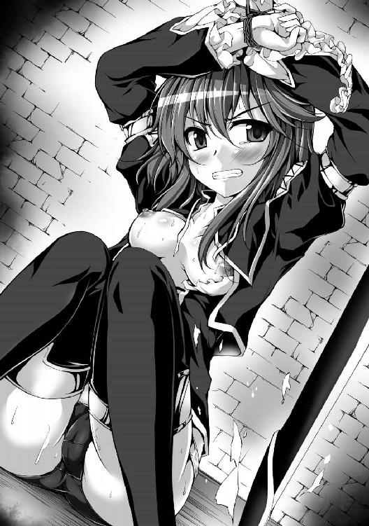
「おい、クソビッチ......いやメスブタ。殺されるか、犯されるか、どっちがいい？」
「ぅ............こ、殺しなさいよっ！ でも忘れるんじゃないわよっ、あんたが人類を破滅に追いやるんだから！ 自分が何したか分かってんの!? あんたは最低最悪のクソ野郎よっ！ 分かったら今すぐやめなさいっ、これ外しなさいよっ！」
もはや半ば錯乱しているようで、無茶苦茶に叫びながら暴れている。
不意に身体を起こして立ち上がろうとしてきたため、俺はメスブタの華奢な腹に伸し掛かった。
「くっ、このっ、どきなさいよブタ！ このっ、くそっ、なんで魔法使えないのよ!? あんた〈霊衝圧〉使ったわね!?」
「ん？ なんだそれは？」
「〈霊衝圧〉とは無属性特級魔法のことです。対象に自身の魔力を撃ち込んで魔力的な自由を奪う、非常に有用な魔法封じの魔法です」
クレストが注釈してくれた。
よく分からんが、〈流精衝〉の劣化魔力版みたいなものか。
「言っておくが、お前が魔法を使えないのは俺特有の技のせいだ。今のお前は魔力だろうと闘気だろうと精気だろうと、あらゆる力を使えない」
「赤熱せし鏃が煌めきよ──〈火矢〉！」
「無駄だ、大人しくしろ」
「〈火矢〉！ 〈炎流〉！ 灯火は陽炎の如く、闇夜の月下に業炎は息吹く──〈炎流〉！」
「諦めの悪い奴だな......詠唱しようが何度試そうが無駄だぞ」
「なんでよ離れなさいよ死ね消えろブタァ！」
魔法を使おうと死に物狂いに足掻き始める紅のメスブタ。
肥満体の俺が腹の上に乗っているので、抵抗は全く功を奏していない。
しかし......こうなると手が付けられないな。
まあ、想定の範囲内なので問題はないのだが。
「まったく、仕方がないな......いいだろう。だったらお前を解放してやるよ」
「え......？」
「俺との勝負に勝ったらな」
ピタリと大人しくなり、訝しげに俺を見上げてくるメスブタを見下ろして、俺はなだらかな膨らみを揉んだ。体格はミルティスと大差ないくせに、おっぱいは幾分も小さく、しかしたしかに柔らかい。
俺はメスブタがまた何か喚き出す前に、先制して告げる。
「これから俺はお前を犯す、好き勝手に犯して犯して犯し尽くす。だが、十日間だけだ。十日の間、お前が一度も俺のチンコを求めなければ、お前を解放してやろう」
「......は？ な、なに言ってんの、あんた......？」
「ついでにクソ勇者も解放して、聖剣も返してやる。どうだ？ 勝負するか？」
俺は挑発的な笑みを浮かべてみた。
まあ、たぶんただのブサイク面にしか見えないだろうが。
「............ど、どうせ、殺すんでしょっ！」
「ん？ なんだおい、まさか勝負しない気か？ お前が俺を信用しないのは勝手だが、愛しの勇者様と人類の命運は今やお前次第なんだぞ？ 僅かにでも希望があるのに、それを掴み取ろうと努力することもなく端から諦めるのか？」
「......ぅ、く......っ」
「教えてやるが、このままいけばお前のその魔法が使えない状態はあと十日で解ける。これを信用するもしないも、やはりお前の勝手だが......本当に勝負しないのか？ しないのなら今すぐお前を殺してやるが」
俺は左手でおっぱいを揉みながら、右手の聖剣をメスブタの喉元に突き付けた。
十日前後で魔法が使えるようになるのは本当だが、それはこのまま何事もなければの話だ。〈流精衝〉は俺の精気が体内に毒素の如く蓄積することによって、闘気も魔力も精気も練れなくする技だ。
だから俺の精液を小まめに摂取させ続ければ、体内の俺の精気は精液を栄養にして活動を維持するため、〈流精衝〉の影響はいつまで経っても抜けなくなる。
メスブタは犯して精液を摂取させ、クソ勇者と我が女神には食事に俺の精液を混入させる予定だ。
「っ......ほ、んとに......く、ぅ......解放......するんでしょうね......？」
「ああ、我が神の名に誓って、お前が勝てば解放しよう。ただし勝負中、お前は抵抗することなく俺の命令に従ってもらう」
「............ア、アルが......っ、あ......ほんとに生きてるか、確認させなさい......」
メスブタは乳首を責められて微かに喘ぎを漏らしながらも、強気な緑色の瞳で要求してきた。
「確認できれば、勝負を受けるのか？」
「んっ、ぁ......ええ、受けてやろうじゃない......あんたの、チンコなんて......っ、も、求めるわけ、ないっつーの！」
俺は乳首から手を放し、メスブタの腹から腰を上げた。
そして淫魔執事に目を向けると、我が従者は悠々と一礼して、そそくさと隔離区画を出て行く。
ややもしないうちに、クレストが全裸のクソ勇者を引き摺って戻ってきた。
「アル！」
パンツ一丁のメスブタが慌てたように立ち上がり、鉄格子にもたれ掛かって一心に名を叫んだ。
手足を拘束されて床に転がるクソ勇者はのろのろと顔を動かし、死んだ魚の目で赤毛の美少女の姿を捉える。
すると、虚ろだった表情に生気が宿り、息を呑んで双眸を見開くが......
クッソォ、相変らずの超絶イケメンでむかつくな。
「マリーナ......？ 生きていたのか......？」
「アルッ、大丈夫!?」
「あ、あぁ......おれは、大丈夫だ......」
「クレストさん」
俺の意を汲んだクレストが再びクソ勇者をぞんざいに引き摺って歩き出した。
マリーナは切実な眼差しで愛しの勇者様を見つめながら、芯のある声で呼び掛ける。
「アルッ、頑張って！ 諦めちゃダメよっ！ きっと助かるからっ、あたしが助けるから待ってて！」
「マリーナ......おれは、おれも諦めない......っ！ 諦めないぞマリーナッ！」
そしてクソ勇者は鉄扉の向こうへと消えていった。
どうやらメスブタは恋人のチンコがないことに気付かなかったようだ。俯せで引き摺られてきたし、元々あいつのは短小包茎だったし、無理もない。
尚、クソ勇者の尿道は気絶中にクレストに手術させたので、既に確保されている。
あいつは本当に優秀だし、あとで褒美を与えないとな。
「さて、これで納得しただろう。では早速、勝負を始めようか」
「ふんっ............いいわよ、好きに犯せばいいじゃないっ！ でも約束を忘れるんじゃないわよっ、破ったらあんたのチンコまたぶった切ってやるから！」
「俺は約束を守る男だ、心配するな」
生意気に吠えるメスブタへと鷹揚に頷いてやった。
やはりこいつは未だに俺のことを見下している。
あれだけ絶対的な力の差を見せつけてやったというのに......
「何が勝負よっ、どうせ勝負にすらならないっての！ あんたのクソ以下の価値しかないチンコなんて求めるわけないでしょっ！」
「そうかそうか」
薄汚れた真紅の髪を肩先で怒らせながら、半裸なのも気にせず威勢良く啖呵を切ってくる。
にしても......なんでこいつ、こんなに強気でいられるんだ？
三ヶ月も俺を馬鹿にし続けてきた天才魔女様だし、無駄に自尊心が高いのは分かるが......
犯されるんだぞ？ ほんとに分かってんのかこいつ？
い、いかんな......ちょっと不安になってきた。
調子こいて勝負だの十日以内だのと言っちまったけど、本当に俺に堕とせるかな......？
「ではメスブタ、もう抵抗はするなよ」
俺は微塵も動揺を見せないよう努めて冷静に、ゆっくりと美少女に歩み寄った。
両手を拘束されたまま立つメスブタは無言だ。
無言で睨み付けてくる。
身長がほぼ同程度なので、炯々とした眼光が若葉色の瞳から放たれ、俺の眼球に直撃した。
「............」
視線攻撃から逃れるためでは決してないが、断じて違うが、俺は聖剣片手にしゃがみ込んだ。
そして黒いパンツを左手で乱雑に引き摺り下ろして奪い取る。
クソビッチのパンツとはいえ、これは俺のパンツコレションに加えてやるか。
「ハッ、下の毛も真っ赤だな」
「............」
無言で睨み付けてくる。視線だけで俺を殺そうとする勢いだ。
べ、べつに怖くなどない、相手は無力な小娘だ。この精剣使い様が緊張するなどあり得ない。
「ガルフさん、パンツと聖剣を預かってもらえますか」
「お預かりします」
そうこうしてうちにガチホモ執事が戻ってきた。
よし、これで調教を始められる。
とはいえ......正直かなり不安だ。メスブタは怖くないが、先行きが心配なのだ。
なにせ俺は童貞を卒業して、まだ一日も経っていない。
俺に強気な女を快楽に溺れさせて屈服させることが本当にできるのか否か......
「メスブタ、断言しよう。お前は必ず、俺のチンコをマ○コにぶっ込んで欲しいと懇願するようになる」
しかし、もう後には退けないし、退く気もない。
俺は精剣ペニスレイヴの使い手。
自分のチンコを信じて突き進むのみだ。
絶対にこのクソ生意気な魔女を屈服させ、メスブタ肉便器に堕としてやる。
なぜなら、それが報いというやつなのだから......
淫魔族にとっての聖地、ヴェベル大峡谷。
その奥深くの暗い谷底近くで、彼女は運命と出会った。
運命が降ってきたのだ。
「........................」
「........................」
最初は唖然とする他なく、突如として現れた何者かと無言のまま見つめ合ってしまった。
沈静した闇の中、彼女が現象させている光魔法によって、相手の姿は照らし出されている。
全体的に丸っとした体躯、やや大きめの耳、肌は淫魔族と同様に見慣れた色だが、しかし翼も尻尾も角も見当たらず、顔は純白の覆面で半ば隠れてしまっている。
そしてなぜか、敬虔な信徒が魔神に祈りを捧げるが如く、胸の前で両手を組んでいた。
「............え、角？」
「ふぅぇあ!?」
相手の発した声で我に返り、彼女は素っ頓狂な声を上げてしまう。
しかし、それも無理からぬことだった。
「あなた......え？ なんで上から......？ ていうか、なんでパンツ被ってるの......？」
上下逆さに浮遊する男性を思わず指差しながらも、彼女はただ困惑した。
純白の覆面はまず間違いなく下着かそれに類する衣服なのだ。
「............」
「え......え？ な、なんか言って......？」
淫魔族の姫、ミルティス、十五歳。
逃げ込んだ聖地にて、運命の男と出会った。
■ ■ ■
ミルティスが聖地に逃げ込むまでの経緯は複雑にして特殊にすぎる。
それを説明するには彼女の幼少期から語らねばならない。
悪魔族内どころか全ての魔族の中でも弱小氏族の一角と見做されている淫魔族──ミルティスはその族長一家の次女として、この世に生を受けた。
受けてしまった、淫魔として。
よりにもよって、族長一家に。
美男美女揃いの淫魔族の中でも両親は一層に眉目秀麗だったため、ミルティスは当然の如く容姿に恵まれた。三つ上の姉と一つ下の妹と同じく、母親似の綺麗な銀髪は一族内でも評判だ。
「ミルねえっ、ミルねえ！」
それはミルティスが四歳の頃。
ある日、妹のユナがどこか熱っぽい顔をして駆け寄ってきた。
「どーしたのユナ？ おかおあかいよ、かぜひーちゃったの？」
「あのね、ミルねえ、なんかね、ここさわるとね、なんかきもちーの」
「え？」
不思議そうに、しかし嬉しそうに、小さな翼と尻尾をやたらと揺れ動かす妹は隠し切れぬ興奮を姉に伝えながら、小さな手で自分の身体の一点を指差した。
逆三角形のズボンの下部、股間部だ。
「こーやってね、いすのここにあてると、なんかすごくいーのっ」
ユナは無邪気な笑顔を振りまきながら、椅子の角に陰部をこすりつけ始めた。
「ん......あっ、んぅ......ねえ、ミルねえ......これなに？」
妙に気持ち良さそうな声を漏らす妹に問われ、ミルティスも気になって真似をしてみた。
「ぁ、ふぅ......んっ、ぇ......なにこれ......？」
「ミルねえも、わかんない？」
「うん......あっ......でも、く、うぅ......なんか、きもちいぃ......」
何がなんだか分からなかったが、ミルティスは妹と二人で、向かい合うように椅子の角に陰部をこすりつけていく。
そうして未知の感覚を堪能すること、幾ばくか。
「なに二人でオナニーしてるのよ？」
ふと部屋に姉のレイラが入ってきた。
ミルティスはユナと共に上気した幼い顔を姉に向けながらも、腰の動きは止めない。
「んふぅ......ねえ、レイねえ......これオナニーってゆーの？」
「そうよ。なに、ミルが教えたの？」
「ぁ、あっ......ううん、ユナに......これなにって、きかれて......」
「そうよね、ミルもまだ四歳だし、アタシだって五歳で覚えたし......やるわねユナ」
なぜか姉は感心した様に頷きながら歩み寄り、ユナの頭を撫で始めた。
一方のミルティスは快楽に夢中だった。
どこかむず痒いような、もどかしいような甘い痺れをすっかり気に入ってしまい、結局そのまま夕食の時間まで、姉も加えて三人でオナニーという行為に耽ってしまった。
「なんだとっ、ユナはもう自慰を覚えたのか!?」
数人の使用人が控えた夕食の席にて、父が驚いたように大声を上げた。
普段は落ち着いた素振りを崩さない真面目な父親のその様子に、ミルティスは思わず食事の手を止め、俯いてしまう。
「ええ、アタシもミルも教えてないわよ」
「あらあらまあまあ、淫魔の娘としても早い方ねえ。私でも四歳の頃でしたのに」
「うむ、しかしそれでこそ我ら淫魔族の姫というものだ」
母も父も嬉しそうな笑みを見せており、ミルティスは戸惑ってしまう。
実のところ、ミルティスは先ほど自慰を中断してからというもの、言いようのない罪悪感に駆られていた。火照っていた身体の熱が引いていくにつれて、何かいけないことをしてしまったような、後ろめたい思いが強くなっていく。
だからこそ今し方、父の大声に驚き、叱られるのかと怯えていたのだ。
「あの......おとーさん、オナニーはしてもいーことなの？」
「良いも悪いも、淫魔たる者、して当然の行為だ。むしろしない方が悪い」
「それよりあなた、早くお祝いをしないと」
「そうだな。子供が自分から自慰を覚えた際、それを祝ってやるのが淫魔の慣習」
幼いミルティスにはよく分からなかったが、とにかく怒られずに済みそうで胸を撫で下ろした。
「アタシのときも祝ってくれたわよね。ミルとユナは覚えてないだろうけど」
「今回はミルティスとユナの二人分だ。おいっ、急ぎ祝いの酒と料理を追加しろ！」
父が使用人たちに言いつけると、数分後には食卓が色彩豊かで豪勢なものに一変した。
そこでようやく、自慰行為は褒められるべきものだとミルティスは実感できた。
しかし、胸中では依然として妙な罪の意識が、棘のように突き刺さったままだ。
なんだか釈然としないミルティスだったが、彼女の無意識はすぐにどうでも良い些事だと流してしまった。まだ四歳の幼子にとって、目の前の料理の方が何倍も気に掛かり、小さな違和感を自覚することはなかった。
「ミル、ユナ」
自慰を覚えた日から、数日後。
一緒に寝ていた姉から、真夜中にもかかわらず揺り起こされた。
「レイねえ......どーしたの？ おトイレ？」
「おねーちゃんもこわいの？ だいじょーぶだよ、わたしとユナがついていってあげるから」
「アンタらと一緒にしないで、アタシはもう七歳よ」
「んみゅ......じゃーどーしたの、レイねえ......？」
未だ微睡みに深く囚われているのか、こくりこくりと船を漕ぎながらユナが訊ねると、レイラは得意気な笑みを浮かべた。
「ついてきなさい」
姉の言葉に従って、ミルティスは二人の姉妹と共に、大きなガラス窓を開けてバルコニーに出た。
室内とさほど変わらぬ外気の涼やかな微風は秋季らしく快適で、雲一つない夜空には星々が煌々と瞬き、どこからか虫の鳴き声が聞こえてくる。
「父さんと母さんの部屋のバルコニーに行くわよ」
「おねーちゃんはいーけど......わたしもユナもむりだよ」
「大丈夫よ、ユナはミルが抱えて飛びなさい」
ミルティスはつい一昨日、飛べるようになったばかりだ。
とはいえ少し浮遊できた程度で、満足に飛行することはまだ難しい。両親の部屋のバルコニーは優に二十メートルは離れている。
「そ、そんな、だからむりだよっ。わたしまだ、ひとりでとぶのだってたいへんなのに......おねーちゃんがだっこしてよ」
自分一人だけなら、頑張ればなんとか目的地まで飛べるかもしれない。
だが、妹を抱えてとなると不可能だ。
「アタシ？ アタシには無理よ、力弱いし」
「おねーちゃんがむりなのに、わたしにできるわけないよ......」
「アンタはやればできる子よ。淫魔でまだ四歳なのに、たまに無自覚のまま闘気使ってるし」
「ふぁぁ......とーきってなに、レイねえ......？」
ユナはミルティスの手を握りつつ、片手で目元をこすっている。
長女はそんな三女の頭を軽く撫でてから、次女の眼前にある物を突き出した。
「ユナを運べたら、これあげるわ」
「え、これって......おねーちゃんのおきにいりの、かみかざり......？」
「アンタ欲しがってたでしょ。向こうまでユナを運べたら、あげるわよ」
「ほ、ほんとにっ!? やくそくだからねっ！」
以前からどれだけねだっても決してもらえなかった物が、もらえる。
ミルティスは眠気が一気に吹き飛び、喜々として妹の身体を正面から抱き上げた。
そして星空の下で背中の紫翼を広げると、浮き上がって一直線に飛んでいく。
「......やっぱりあの子すごいわね」
というレイラの呟きはミルティスの耳には届かなかった。
あとを追ってきた姉とほぼ同時にバルコニーに着地すると、ミルティスは一も二もなく姉に手を向けた。
「ちょーだい、おねーちゃんっ」
「シーッ、静かにしなさい、あとであげるから」
「ふぁぁぁ......ん？ なんか、へんなこえきこえるよ......？」
姉に手を引かれて、バルコニーの角隅に連れて行かれた。
そこでミルティスも、ユナの言う変な声に気が付いて、思わず耳を澄ませる。
「ミル、ユナ、部屋の中を覗いてみなさい」
「おとーさん......おかーさん......？」
「なんかしてるよ......レイねえ、あれなにしてるの？」
族長の邸宅相応に透明度の高いガラス窓からは室内の様子が鮮明に覗き見える。
蝋燭の薄明かりに照らされる全裸の両親はベッドの上で何かをしていた。
窓は少しだけ開いているので、声が漏れ聞こえてくる。
「あっ、あぁっ......ん、ふぅ......ぁんっ、いいっ、すごくい......あぁぁああぁっ！」
ミルティスは愕然とするあまり、呼吸すら忘れて立ち尽くした。
「アレはセックスっていうのよ。エッチとか性交でもいいけど」
「なにそれ？」
「みんな大好きになるものよ。淫魔族は七歳になったら親が実演して子供に見せるのが慣習で、アタシもこの前見せてもらったの」
魔族は長命な氏族以外、普通は十五歳で成人を迎える都合上、七歳で半人前と見做される。
姉は既に七歳だが、ミルティスはまだ四歳、ユナは三歳だ。
「ユナはオナニー覚えるの早かったし、どうせなら早く見せた方がいいと思って。あ、でも父さんには内緒よ。父さんって真面目だから七歳にならないとダメだってうるさそうだし......」
「なんか......おかーさん、きもちよさそー......」
「実際、かなり気持ち良いらしいわよ。アタシもさっさとヤッてみたいんだけど、父さんが初潮こないとダメだってうるさいのよね......」
「────」
興味津々に見入る妹、不満げに愚痴を溢す姉。
二人の姉妹に反し、ミルティスは小さな顔を強張らせたまま微動だにしない──できない。
「んぁぁっ、そんな......いいっ、あぁ......もっと、もっとついて、あなた......っ、ぁあんっ!?」
いつも穏やかな微笑みの絶えない母が、乱れている。
いつも真面目な言動の目立つ父が、乱れている。
顔を埋めると安心感を覚える母の胸元──乳房を鷲掴み、父が獣のような荒々しさで腰を振ると、母は長い髪を振り乱して艶めいた声を響かせる。
「レイねえ......なんか、ユナ......オナニーしたくなってきた......」
「ん......いいのよ、しても......アタシも......あぁっ......してるし......」
「────」
姉妹は自慰に耽り始めるが、ミルティスは動けなかった。
母が、母ではない別人に見える。
父が、父ではない別人に見える。
ベッドの上で身体を重ねる男女は間違いなく両親のはずだが、そうは見えないほどに普段の面影が一切窺えず、まるで別人のような素振りで、おどろおどろしく身体を重ねている。
大好きな両親が、何かに取り憑かれたように、乱れ狂っている。
「ひ......ぃ、ぁ......いやぁぁあぁぁぁぁぁあぁぁっ！」
「え、ちょっ、ミル!?」
「ミルねえどーしたの？」
ミルティスは全力で逃げ出した。
優しく、ときに厳しく、今日も寝る前には微笑みながら頭を撫でてくれた両親が、何かに穢され歪んでいくような光景など、悪夢以外の何ものでもない。
あんな両親はあれ以上見ていられなかった。
「うっ、うぅぅ......」
庭先の倉庫内に逃げ込んで膝を抱え、ミルティスは泣きながら悪夢を振り払おうとする。
しかし、数日前に突き刺さった小さな棘。
これが甚大な衝撃によって幼い心に大きな傷を付けてしまい、結局は鮮明な記憶として残り続けることになってしまった。
■ ■ ■
淫魔族は性を生業としている一族だ。
敵を誘惑し、性的な交わりによって精気を吸い取る。魔族にとっても人族にとっても精気とは生命力そのものであり、通常これが減少すれば意識を失い、枯渇すれば死に至る。
「つまりだ、ミルティス。我ら淫魔族にとって性交とは生き様なのだ」
ミルティスは七歳になった。
幼児から半人前の少女となった翌日、彼女は父から至極真面目な口ぶりで説かれていた。
「吸精という唯一無二の特技を有する我ら淫魔族にとって、性交は戦いでもある。どれほどの強者だろうと、精を吸い尽くされれば死に至る......ある意味、性技とは剣技よりも遥かに有用であり、謂わば我ら淫魔は性戦士なのだ」
堂々たる立ち姿を見せる父の斜め後ろには母がいて、ベッドに腰掛け温和な微笑みを浮かべている。
二人とも全裸だ。
「お前が嫌う淫らな行為は何ら恥じることのことない、むしろ賞賛されるべき、誇るべき行為といえる。淫乱、淫猥、淫蕩、淫靡、淫楽......全て我ら淫魔族にとっては褒め言葉だ」
ミルティスは逃げ出してしまいたかった。
いや、先ほどは実際に逃げ出そうとして、部屋の窓際に立ち塞がっている使用人の壁を突破しようとした。しかし必死なあまり、使用人の一人である青年を思わず殴り飛ばしてしまい、彼の身体はガラス窓を突き破ってバルコニーすら越え、地上に落ちていった。
咄嗟のこととはいえ、ミルティスは自らの為した暴力的な行いを悔いるあまり、逃走する気などすっかり失せてしまっている。
「曲がりなりにも淫魔族の姫として、お前には皆の手本となる義務がある。淫らな行為を嫌悪し、羞恥し、忌避するなど、言語道断」
四歳の頃の日常はほとんど覚えていないが、あの日の出来事はよく覚えている。
だからこそ、全裸の両親を見ていると、否応なく思い出してしまうのだ。
「......ミルティス、そんな顔をするな。先ほどお前が殴り飛ばしたクレストの負傷を無駄にしないためにも、淫魔の慣習に則り、きちんと性交とは何かを学ぶのだ」
「........................」
「お前は一族の姫という立場上、実際に行うことはないとは思うが......現在は《大海境》が開き、大戦の真っ最中だ。我ら淫魔は戦場の兵士たちを慰めることも仕事の一つ、これは魔王様より命じられた大事な御役目だ。同族の皆がどのような行為によって戦いに疲れた兵士たちを慰撫しているのか、上に立つ者としてよく知っておく必要がある」
「........................うん」
ミルティスは小さく頷きを返すだけで精一杯だった。
多くの同族たちが前線に赴き、日々頑張っているからこそ、後方の淫魔領に住まう者たちは平和を享受できている。父や母だけでなく、使用人の皆や町の人々まで有り難そうに、申し訳なさそうに同じことを口にしているので、未だ戦争を実感できていないミルティスとしても、頑張っている人たちに対する感謝の念は抱いていた。
「ではこれより、淫魔の生き様とは何かを実演してみせよう。まあ、お前は四歳の頃にも見たとは思うが......今回の性交こそ、真の性交だ」
「ミルちゃん、そう肩肘を張らずに、リラックスして」
「......うん」
母は普段通りの、穏やかな微笑みを湛えた優しい顔を見せている。
そんな母を押し倒すように覆い被さり、しかし普段通り真面目な様子の父が、豊満な乳房に触れ始めた。
「ミルティス、何か訊きたいことがあれば遠慮せず訊くと良い」
「........................」
甘い吐息を溢し始める母を愛撫する父に言われるも、ミルティスは無言を返すことしかできなかった。
これから再び、あの悪夢ような光景が繰り広げられる。
父も母も別人のように乱れ、甲高い嬌声を響かせ、おどろおどろしく身体を重ね合う。
「あぁ......っ、んふぅ......あなた、次は私が......」
「うむ」
しかし、恐ろしげな予想に反して、父も母も未だ感じ慣れた雰囲気を纏ったままだ。
ベッドの上で仰向けになった父の陰部に母が顔を近付け、いきり立った肉棒をしゃぶり始める。
普段は見掛けない淫猥な光景だった。
そうは思うが、以前見た交わりとはどこか異なり、口淫に励む母は丁寧に、愛おしそうに、父の性器を舐め上げている。
「ちゅっ、んむ......ちゅぶ、れろぢゅ......んぅ......」
「いいぞ、ミュレス。その調子だ」
父が声を掛けると、母は長く太い陰茎を口に含んだまま、嬉しそうに双眸を細めている。
ミルティスは羞恥心こそ覚えていたが、目を背けるようなことはしなかった。
「........................」
思い返せば先ほども、母の身体に触れる父の手付きは優しげだった。
母のことを思いやる慈しみの心が表れていた。
「もう良いぞ、ミュレス、ありがとう。そろそろ挿れようか」
「ええ......お願い、あなた」
母は再びベッドに横たわり、両脚を開いた。
さながら蛙のような格好だが、母に恥ずかしがっている様子はなく、むしろ父を抱きしめんと両手を伸ばす姿からは温かな情愛が滲み出ている。
実際、父が肉棒を挿入すると、綺麗な長い両脚が逞しい腰元に絡みつき、両腕は背中に回され、母は父を抱きしめながら口付けを交わしている。
「どうだ、ミュレス、気持ち良いか？」
「あっ、んぅ......っ、ええ、良いですよ......はぁ......んふぅ......あなたは、どうですか？」
「もちろん良いとも」
三年前に見てしまった、獣性すら感じられた荒々しく淫らな行為ではなかった。
互いが互いを求め合い、気遣い合い、愛をたしかめ合うような情交は穏やかで、しかしたしかな熱も感じられる。羞恥心を刺激される営みではあるが、恐怖心は喚起されない。
「ぐ、ぅ......イクぞ、ミュレス......膣内に出すぞ......っ！」
「んあぁっ、はぃ......っ、きてぇ......んくっ、きてあなた......ん......ああぁあぁっ！」
抱き合う二人の身体が小さく震えている。
父も、母も、とても幸せそうな表情を見せていた。
結局ミルティスは嫌悪や恐怖といった情念に見舞われることなく、終始両親の交わりを見つめ続けた。彼女自身気付かぬうちに未熟な陰部は濡れ、無意識的に両脚を擦り合わせてしまう。
「さて......どうだ、ミルティス」
「ど、どうって......？」
「これが真の性交というものだ。淫らではあろうが、べつに穢らわしくも恐ろしくもないだろう？」
「う、うん......そうかも......」
心のままに素直な首肯を返す我が子を前にして、両親たるレヴィンとミュレスは密かに微笑みを交わし合う。
長女と三女に反し、次女が性的な行為を厭うている件を二人は深く憂慮していた。だからこそ、まずは優しく愛をたしかめ合うような、大人しい性交を見せることで、娘の間違った認識を徐々に正していこうと画策したのだ。
「お父さんは、お母さんのこと、愛してるの？」
「もちろんだとも」
「お母さんも？」
「ええ、もちろんよ」
娘の表情や声色に嫌悪感はなく、むしろ好意的な様子が表れている。
レヴィンとミュレスは事を上手く運べていることを確信し、娘に向けていた微笑みを深くした。
その瞬間、しかしミルティスが哀しげに目を伏せた。
「でも、お父さんもお母さんも、色んな人と今みたいなことしてきたんだよね......？」
「む......？」
「あら......？」
意外感を露わにする二人が娘に二の句を告げる間もなく、ミルティスは目尻から大粒の涙を溢れさせ、頬を濡らし始める。
「うっ、うぅぅ......どうして......おとぉさん、おかぁさんいがいの......うぅ、ひとも......んぐっ、あいしてるの......？」
「え、む......な、何を言っているのだミルティス......？」
「いやだよぉ......ぅえぇぇ......そんなの、おかしいよぉ......おかぁさん、あんなふうに......ぅぐ......っ、おとぉさんいがいの......うぅ......ひとにも、だきついてたの......？」
「あ、あのね、ミルちゃん、今のはお父さんだけにする特別な性交なのよ」
狼狽える父親に対し、母親は幾分か冷静だった。
しかしミルティスは尚も涙を流し、嗚咽を漏らし続けながら、両親を見つめて問うた。
「でも......ぅう......いまのが、しんのせいこーなんでしょ......？」
「い、いやそうだが、今のは......そう、夫婦間だけの特別な真の性交だ」
「んぐ......っ、もー、とくべつとか、しんとか、いみわかんないよぉ......う、うぅ......えっちなことは、けっこんするひととだけ......しないと、おかしいよぉ......」
ミルティスはただただ哀しかった。
父と母はあれほど互いを求め、愛し合っている様子だったにもかかわらず、二人とも過去に多くの者と性交を為してきた。それは互いに対する酷い裏切りのように思えて、ミルティスは大好きな両親の娘として、我が事のように心を痛めたのだ。
「ミルちゃん、えーっとね、淫魔にとって性交は挨拶みたいなものなの」
「お、おいミュレス、今それは何か違うと思うのだが......」
「あら？ そうね......あらあら？」
「ふぅぇぇぇぇ、もーやだぁ......わたしあいさつなんてしないもぉぉん......ちゅーもえっちも、んぐっ、うぅぅ......けっこんするひととだけしないと、おかしーんだもぉん......っ！」
「あっ、ミルティス!?」
ミルティスは両親の全裸姿をこれ以上見ていられず、衝動のまま駆け出した。
室内の窓際と扉前には変わらず使用人たちが立ち塞がってこそいるが、しかし彼ら彼女らは恐れ戦いていた。先ほど同僚が盛大に殴り飛ばされた光景を目の当たりにしていたからだ。
「........................」
一直線に扉へ向かって駆ける少女を前にして、使用人たちは息の合った素振りで一様に扉前から退避した。と同時に、ふと扉が静かに開き、十代後半ほどの青年が姿を見せる。
黒い執事服の彼は包帯の巻かれた右腕を三角巾で首から吊っていた。
「あ、お嬢様、どうされたのですかっ？」
悲哀の雫を振りまきながら真っ直ぐ向かってくる少女を見て、青年は少々驚いてしまった。
が、すぐに合点がいき、彼は左腕を広げて少女を受け止める体勢をとる。
「お嬢様、まさか泣くほど僕のことを心配して......いえ、僕は特に大事ありませんので、こうして職務に復帰させていただきます。ですが、今後は少し手加減していただけ──」
「クレストじゃまぁっ！」
「るぶへぁ!?」
感情に比例して闘気も昂ぶり、小さな拳が繰り出される。
強烈な一撃が腹部に突き刺さった青年執事は呆気なく吹っ飛ばされた。
「ぅわあぁぁぁぁっ、みんなおかしーよぉぉぉっ、えっちなことはけっこんするひととだけなのにぃぃぃ......なんでぇ、おかしーよぉぉぉっ！」
進路上の障害物を排した少女は駆け足を緩めることなく、変わらず悲嘆の表情で落涙し、本心からの叫びを上げながら廊下を駆けていく。
彼女にとって、多くの使用人たちの前でも堂々と性交をする両親の感性からして、そもそも理解の埒外だった。
「........................」
ミルティスのいなくなった室内はしばしの静寂に包まれた。
レヴィンとミュレスは計画の失敗と娘の今後を憂い、使用人たちは胸を撫で下ろすと同時に犠牲となった同僚を哀れんでいる。
このような事態は誰も予想し得ず、特に青年執事にとっては寝耳に水にもほどがあるだろう。
「ぅ......が......お......ぉじょ、さま......」
「......誰か、早くクレストを治療してやれ」
淫魔族の族長は片手で頭を抱えながら、全裸のまま嘆かわしげに呟いた。
■ ■ ■
「おめでとう、ミルちゃん」
十一歳の頃、初潮を迎えた。
邸宅の広々としたリビングにて、ミルティスは母から祝いの言葉と共に長細い箱を差し出される。
「はい、これお祝いの張型」
「あ、ありがとう、お母さん」
ミルティスは少々ぎこちない笑顔で祝いの品を受け取った。
正直、あまり嬉しくはない。
だが母の微笑みには心底からの喜色が表れており、娘の成長を我が事のように喜んでいることがたしかに伝わってくるので、本心を露わにはできなかった。
「これでたくさんフェラの練習をして、色んな男の子を骨抜きにしましょうね」
「そんなことしないよっ」
「あらあらぁ......やっぱりミルちゃんは頑固ねぇ、お父さんに似たのかしらぁ」
母は少女のような仕草で頬に片手を当てながら、困ったように微苦笑している。
「お母さんが張型をもらったときなんてね、嬉しくてフェラの練習だけじゃ我慢できなくて、その日のうちに自分で処女を散らしてしまったものだわぁ」
「わ、わたしはそんなことしないよ!?」
「あらぁ、そうなの？ お母さんにも似て欲しいのだけれど......残念ねぇ」
春の陽気を思わせる母の穏和な性格は少し独特の癖があって掴みづらい。
その言動が冗談なのか本気なのか、娘であってもときどき理解しがたいところがあるほどだ。
今し方の母の発言が、淫魔らしい振る舞いをさせようとした故のものなのか、あるいは裏などない言葉通りのものなのか、ミルティスには分からなかった。
「とにかく、わたしも、その......こ、口淫の、練習はするけど......それだけだから！」
四年前のミルティスは周囲の皆がおかしいのだと思っていた。
しかし、今は違う。
自分こそが淫魔族らしからぬ思考や性格をしているのだと、一応の自覚はできている。
「あらぁ、私はてっきり『練習なんてしないよ』って言われると思っていたのだけれど......」
「べ、べつにわたしだって、したいわけじゃないんだよ!? でも一応、族長の娘として、これくらいはしないと、いけないのかなって......」
「よく言ったミルティス！」
ふと父がクレストを伴ってリビングに現れた。
何らかの急ぎの仕事で外に出ていたはずだが、いずれにせよ、帰宅した矢先に母娘の会話が聞こえてきたのだろう。
「おかえり......お父さん」
「あなた、おかりなさい。クレストもご苦労様」
「恐縮です、奥様」
「うむ、ただいま。いやそれより、お前も一族の姫としての立場が分かってきたようだな。うむ、お前は頭が良いからな」
十一歳のミルティスは己の立場というものをある程度は理解できている。
以前まではさほど気にしてこなかったが、年々成長するごとに知識が増え、それに比例して認識も広がり、世間体というものも実感できるようになった。
皆の上に立つ者──淫魔族の姫として、最低限の掟や慣習には従わねばと思っているのだ。
「ミュレス、どうやらこの子もようやく淫魔の何たるかが分かってきたようだな」
「そうねぇ、お母さん嬉しいわぁ。この調子で、レイちゃんみたいに色んな男の子たちとエッチして、立派な淫魔として成長してくれると、お父さんもお母さんも安心なのだけれど......」
「エ、エッチはしないからっ！ いつ処女を捨てなきゃいけないとか、そんな掟とか慣習はなかったはずだし！」
「......やっぱり、ミルちゃんは結婚する人としか、したくないのぉ？」
「当たり前だよっ！」
性交とは大切な人とだけする、大切な行いだ。
四年前に強くそう実感し、絶対に一生のうち一人としか交わらないと決めている。
ミルティスは両親のような、互いを支え合う円満な夫婦関係を夢見ているが、母のように結婚以前は大勢の男性と性交してきたような女性にはなりたくなかった。
まだ相手は皆目検討もつかないが、未来の夫を裏切るような真似は絶対に許容できない。
「うーん......そんなミルちゃんが結婚したいって思えるような男性、淫魔族にはいないと思うのだけれど......お母さん心配だわぁ」
「案ずるなミュレス、ミルティスが成人するまであと四年......それまでに私が良い男を見繕っておく」
「わ、わたしは淫魔族の人とは結婚しないからいいのっ！ あとお父さんみたいな人とか絶対に嫌だからっ！」
「な......んだ、と......っ!?」
ミルティスは両親のような、互いを支え合う円満な夫婦関係を夢見ている。
しかし、憧れているのは表面上だけの部分で、裏側には憧憬どころか嫌悪感しか抱けていない。
「ぜ、絶対に、嫌......私みたいな......私は、嫌なのか......？」
「もうわたし知ってるんだからねっ、お父さんもお母さんも執事やメイドたちとエッチなことしてるって！」
「あらぁ......ミルちゃんには内緒にしていたはずだけれど......」
「元気を出してください、旦那様。お優しいお嬢様が本心から仰ったはずがありません」
父は肩を落として意気消沈し、母は口元に手を当てて驚き、青年執事は主を慰めている。
ミルティスはといえば、母の言葉により一層感情が昂ぶり始め、以前から言うまいと我慢していた言葉が口から勝手に溢れ出てしまう。
「お父さんがメイドとしてることも、お母さんが執事としてることも、お互い知ってるはずなのに止めようとしないなんて......そのくせわたしには特別の真の性交とか嘘吐いて......酷いよっ、おかしいよ二人とも！」
「ミ、ミルティス......それはだな、淫魔としての性というか......う、嘘を吐いたのは全てお前のためで......」
「お父さん酷いよっ、最低！ お母さんと結婚してからも色んな人に、あんな風にエッチしてるなんてっ！」
だからこそ、四年前のあの日、両親は使用人たちの前でも一切の羞恥を見せることなく行為に及んでいたのだ。二人は経験豊富な淫魔であるという以前に、彼ら彼女らに対しても同様のことをしていたのだから、あれほど堂々としていた。
この事実を知ったとき、ミルティスはもちろん衝撃を受けたが、それ以上に孤独感を喚起された。
だからこそ、事の真偽を問い質す勇気が出ず、今の今まで黙っていたのだ。
「さ、最低、だと......？ ユ、ユナが......ユナまで一緒に風呂に入ってくれなくなった矢先......なぜ、こんな......」
「お嬢様方もお年頃なのでしょう、これは自然なことです旦那様。落ち込むことではなく、むしろお嬢様方のご成長を喜ばれるべきかと」
「あのねミルちゃん、結婚してからも他の人とセックスするのは、淫魔の夫婦なら当然のことで、みんなしていることなのよぉ」
「分かってるよそんなことっ、だからわたしは淫魔族の人とは絶対に結婚しないもん！」
母が口にした当然は八歳の頃には知っていたことだ。
しかし、ミルティスは両親を信じていた。
いや、信じたかったのだ。
あの日の父と母は互いをとても愛し、大切にし合っているように見えたこともあるし、何より二人が不義を働いている気配など皆無だった。
普段の様子からも、そのような雰囲気すら微塵たりとも窺い知れなかった。
「ごめんね、ミルちゃん......ミルちゃんに淫魔らしくなって欲しかったから、嘘を吐いたりしてしまったの......」
「............わたしこそ、ごめんなさい、急に怒鳴って」
悄然とする母を前にして、ミルティスは心から申し訳なく思い、同時に寂しさを覚えた。
いつも穏やかでのんびりとした微笑みを湛える母に哀しげな表情をさせてしまったこと然り、両親の期待に応えられそうにない自分が恨めしい。
しかし、ミルティスという少女の心は淫魔族の一般的な価値観に対して、どうしても拒絶反応を示してしまうのだ。だからこそ、周囲とずれている己を弥が上にも強く自覚させられ、共感してもらえないという寂寥感が込み上げてくる。可能な限り淫魔の掟や慣習に従おうとするのは、少しでも皆と価値観を共有したいという孤独感の裏返しでもあった。
「そうね......もうお母さん、これからは強制したりしないわぁ......ミルちゃんは好きに生きて良いわよぉ」
「お母さん......」
「いくら一族の姫だからって、子供は自由に伸び伸びと育てなくちゃいけなかったわぁ......ごめんね、ミルちゃん」
「お母さぁんっ！」
母と娘は互いに瞳を潤ませながら抱き合った。
ミルティスは母の期待に応えられない罪悪感と、受け入れてもらえた安心感に浸り、柔らかな胸元に顔を埋めていく。
その横では床に膝を落として絶望していたレヴィンがゆっくりと立ち直り始めていた。
「う、うむ......そうだな、ミュレス。これ以上無理に考え方を矯正させるのも良くないか......逆に考えれば、それだけ強い意志を、自分というものを持っているということだ」
「ええ、その通りよ、あなた。ミルちゃんは淫魔らしくはないけれど、立派な淫魔だわ」
「良かったですね、お嬢様......おめでとうございます」
レヴィンとミュレスは優しく微笑み合いながら頷きを交わし、クレストは親子三人の様子を温かな眼差しで見守っている。
先ほどと一転して、リビングに和やかな空気が流れ始めた。
その矢先、ふとレヴィンが喉に小骨が引っかかったときのような、どこか怪訝そうな表情を見せ、顎先に手を当てた。
「そういえば、ミルティス。私たちが使用人たちとも性交していることは皆に箝口令を敷き、厳重に秘していたはずなのだが......いったいどうやって気付いたのだ？」
「......クレストに、教えてもらった」
「なに......？」
「お、お嬢様......っ!?」
双眸を鋭く細めるレヴィンに反し、クレストは如何にも動揺した素振りを覗かせている。
ミルティスは依然として母の胸元に顔を埋めたまま、ぼそぼそと続けた。
「なんか、少し変だなって思ったから......クレストに問い質してみたの」
「......おい、クレスト......貴様」
「お嬢様っ、僕が話したことは内密にしてくれるとお約束したではありませんか!?」
「き、貴様のせいで、私は......私は最低と、言われ......貴様よくも、先ほどは私を慰められたものだな......？」
「ち、ちちち違うのです旦那様っ、ぼ、僕は黙っていようとしたんですが、お怒りになられたお嬢様が地下室の壁を粉砕されて......っ！」
アレは十数日前のことではあるが、たとえ十数年前であろうと、青年執事は鮮明に記憶し続けていただろう。暗い地下室にて訝しむ少女に白を切り続けた結果、業を煮やしたミルティスが拳を繰り出し、クレストの脇腹横の石壁が砕けたのだ。
彼が四年前に負った心的外傷は未だ治っていなかった。
「クレストッ、貴様には五十日間の貞操帯装着刑だ！」
「アッ────!?」
ミルティス、十一歳。
この日、淫魔の姫は淫魔らしからぬ自己を確立した。
■ ■ ■
「あたし、行かないから」
ミルティスが成人して間もないある日。
妹のユナが素っ気なくそう応じた。
「ちょっとユナ、行かないってどういうこと？」
「そのままの意味ぃー、あたしはリューリカで待ってるからぁー」
いい加減な口調に反し、愛用している張型の一つを磨く素振りは真剣そのものだ。
リビングで性具の手入れはやめて欲しかったが、しかし今は別件について言及することの方が遥かに優先された。
「そ、そんな、なに言ってるのユナッ、御縁活祭は中魔族との友好関係を維持するのに欠かせない大事なお祭りなんだよ！」
「んー、でもあたしぃー、中魔嫌いだしぃー」
丹念に、何度も何度も、樫製の張型を磨き続けるユナの反応は生返事のみだ。
ミルティスはむっと眉根を寄せ、ソファに身体を沈める妹の手から性具を取り上げた。
「あ、ちょっ、何す──」
「ちゃんと話聞きなさい」
「............き、聞くから、返してよ」
ユナは大人しく頷かざるを得なかった。
なにせ姉の眼差しには少量とはいえ怒気が込められていたのだ。
今のミルティスを下手に刺激すれば、右手に握られた人質を圧壊されかねない。
「ユナは去年だって何だかんだ言って欠席したんだから、今年は出席してもらわないと困るんだよ」
「あぁ、クーガー......ミル姉の怪力で傷付いてないわよね......？」
姉の言葉を耳にしながらも、ユナは手元に戻ってきた張型にヒビが入っていないかを精査することに意識の大半を割いていた。
結果、再び取り上げられる。
「や、やめてミル姉っ、ちゃんと聞くからクーガー返してよっ！」
「いい加減、張型に名前付けて呼ぶのやめなよ......」
あまりに必死すぎる妹の様子に呆れてしまい、姉の怒りは萎えてしまった。
涙目で愛用の張型の無事をたしかめるユナに対し、ミルティスは溜息を挟んでから、逸れ掛けていた話を再開する。
「ユナ、御縁活祭には一緒に行こうね」
「だから嫌よ、べつにお父さんとミル姉だけでも十分じゃん。そもそもあたしまだ成人してないし、中魔どころか男にも結婚にも興味だってないのに......」
「期間中には選定の儀があるでしょっ、淫魔族の姫として出席しないと！」
淫魔族の秘宝たる精剣ペニスレイヴ。
我こそが精剣の使い手たらんとする若者を募り、精剣に触れさせて資質を見極めるのが、選定の儀だ。精剣は本来ならば精力の強い淫魔族しか扱えない代物ではあるが、中魔族にも精力の強い者はいる。それは他の部族氏族も同様で、戦争中の昨今、精剣の仕手を見つけることは急務だ。
しかし、現魔王からは精剣について特に言及されておらず、そもそも淫魔族の秘宝は淫魔族の者か、あるいは友好関係にある中魔族の者が使い手でなければならない。それが《五大覇魔》の一角たる《精魔王》──淫魔族で唯一魔王となったヴェベルの時代から続く、淫魔族の掟だ。
「姫ならミル姉がいるじゃん。あたし嫌なのよ、ほんと......中魔見てると気分悪くなってくるし、ちょっともう生理的に無理なのよあいつら」
「ブタって呼ぶのやめなさいって、何度も言ってるでしょ」
「だってブタじゃん、あいつら。キモいし臭いし馬鹿だし、取り柄だって一つもない中途半端族」
ユナは苦々しそうに顔を歪めて、んべっと舌を出している。
妹が本心から中魔族を嫌っていることを知っているとはいえ、ミルティスは姉として、淫魔の姫として、ユナの頭を軽く叩いた。
「こら、そういうこと言わないの。中魔族を見てると気分悪くなってくるなら、いい加減慣れる意味でも行かないと」
「嫌ったら嫌よっ、とにかくあたしは行かないから！ 中魔がキモくないとか思える変なミル姉に、あたしの気持ちなんて分かんないわよっ！」
「分かんないよ分かるわけないでしょ！ 自分で自分の処女散らして毎日毎日毎日引き籠もってオナニーばっかりする変な妹の気持ちなんて分かんないよ！」
「自分で散らしてなんてないわよっ、初体験の相手は巨根でイケメンのロナルドよ！」
「それお父さんにおねだりして作らせたミスリル製張型の名前じゃんっ！」
年子の姉妹はリビングに少女らしく高い音程の叫声を響かせ合う。
騒ぎを聞きつけた使用人たちが何事かと集まってくる中、二人の両親も姿を見せた。
「なんだ騒々しい、何を喧嘩している」
「あらあらぁ、ミルちゃんもユナちゃんも、少し落ち着いてぇ」
「お父さぁーん、ミル姉がぁー」
ふとユナが今にも泣き出しそうな甘えた声を上げながら、父のもとに駆け寄って抱きついた。
普段は父を邪険にしている癖に、こういうときだけ頼りにしようとする。
「おぉ、そうか、よしよし、ミルティスがなー」
父は父で昔から末っ子には甘く、普段の扱いから一転して甘えられていることもあり、相好を崩している。
ミルティスは思わず頬を膨らませた。
「ミルちゃん、いったいどうしたのぉ？」
「お母さん、ユナったら今年も御縁活祭には行かないって言うんだよ。だから叱ってたの」
「あらあらまあまあ......ユナちゃん、本当なの？」
「......だって中魔嫌いだしぃ......出掛けたくないしぃ......選定の儀だってミル姉がいるんだしぃ」
ユナは父の胸板に顔を押しつけながら、少々の気まずさが覗く声で言い訳している。
父はそんな末妹の背中を撫でて、同意するかの如く無駄に何度も頷いていた。
「そうかそうか、ユナが嫌なら仕方ないな」
「ちょっ、お父さん!?」
「どうせ今年も中魔の族長家からはドゥンガ殿とスロボダン殿とジュビリー殿しか出席しないはずだ。うちは祖父母がレイラと共に前線へ行っている以上、私とミュレスとミルティスだけでも無礼にはなるまい」
「そ、それは......そうかもだけど、でもユナのためにはならないよっ」
ミルティスは淫魔族の姫としての立場を弁えている。
だが、ユナは違う。
勉強嫌いの運動音痴、年中家に引き籠もっての自慰三昧だから同年代には友人の一人もおらず、父が蝶よ花よと甘やかしたせいで食事でも張型でも対人関係でも好き嫌いが激しい。
「お父さぁーんっ」
「おぉ、よしよし、大丈夫だユナ。子供は自由に伸び伸びと育てるものだからな、無理強いは良くない」
「今年もお母さんはすぐ帰ってくるぅ？」
「もちろんだとも、なあミュレス」
母は基本的に淫魔族の首都たるリューリカで、出張の多い父に代わり留守を預かることが多い。
だが、御縁活祭は淫魔族と中魔族の友好関係を維持するための大切な催しだ。
当然の如く母も毎年出席していたが、去年はリューリカに残ったユナを心配した父に途中で帰らされていた。
「お母さんっ、これ以上ユナを甘やかしちゃダメだよ！」
「そうねぇ......どうしましょうねぇ......？」
「お母さぁーん、今年も帰ってきたら一緒にオナニーしよーよぉ」
「あらぁ、そういえば去年の親子水入らずの時間は素敵だったわねぇ、またロナルドちゃん貸してくれるのかしら？」
「もちろんよっ！」
母が陥落した瞬間だった。
両親が頼りにならなければ、姉を頼りたいミルティスだったが、生憎とそれは適わない。
長女は次女と違い、素で模範的な淫魔らしい性格の割に、次女と同じく一族の姫としての自覚も姉としての自覚も強い。
しかし、それ故に去年から旦那と共に前線へ赴いてしまっている。
既に使用人たちは各々の仕事に戻ってリビングにはおらず、この場にミルティスの味方は誰一人としていなかった。
「お父さんっ、お母さんっ、今年は行かせなきゃダメだよ！」
「無理に行かせても、より中魔族を嫌いになってしまうだけだ。お前とて無理矢理に乱交会に連れて行かれたくはないだろう？」
「う、うぅ......」
ミルティスはまともな反論ができず、言葉にならない呻き声を漏らしてしまった。
父の例え方は絶妙で、ミルティスとしてもユナに同情しそうになってしまう。
どうしても嫌なことというのは誰しもあるもので、理性では割り切りがたいものなのだ。
「しかしミルティス、お前の妹思いなところは実に素晴らしいし、私も一応弁えているつもりだ」
「お父さん......？」
「御縁活祭以外の行事......例えばそう、ジュビリー殿の結婚式が行われるようなことになった際には、さすがにユナにも中魔族の町を訪ね、一族の姫としての務めを果たしてもらう」
「えぇーっ、お父さぁーん！」
ユナは父に抱きつきながらも上目遣いに見上げ、猫撫で声を出している。
しかし、レヴィンは毅然とした面差しで目を瞑り、取り合おうとしない。
彼は元来真面目な性格の男であり、父親であると同時に淫魔族の長でもある。
引くべき一線は心得ていて当然だ。
「たしかジュビリーってミル姉と同い年でしょ？ なら今年にも結婚するかもしれないんだよね、お母さん？」
「そうねぇ。中魔族に結婚時期のしきたりはないから、今年かどうかは分からないけれど......ミルちゃんは十五歳だから、今年中には結婚しなくっちゃねぇ」
「ミルティス、ちょうど良い機会だから報せておくが、今度の御縁活祭では私が選りすぐった中魔の青年たちと見合いをしてもらう。お前はその中から一人を選び、結婚するのだ」
「えぇ!? そんな急にっ!?」
一応、ミルティスとて今年は結婚しなければならないと覚悟はしていた。
淫魔族のしきたりとして、族長の娘は十五歳──成人したその年に結婚せねばならないというものがある。淫魔の女は早々に身を固めねば、いつまで経っても男漁りを止めず淫蕩に耽るばかりとなり、子を成そうとしなくなる。だからこそ族長の娘が率先して結婚し、子を生してみせることで、淫魔族の子孫繁栄を願うのだ。
仮にも姫であるミルティスは去年あたりから同族の男たちに幾度となく婚約を申し込まれてきていたが、その悉くを拒否してきた。
ミルティスは族長の娘であり姫である自覚が強く、淫魔として変わっていると自他共に認めてもいるので、せめて立場故の務めを果たそうという思いはある。
しかし、絶対に浮気する淫魔の男とは結ばれたくなかった。
「お父さぁん、あたし嫌だよぉ、中魔共の町なんて行きたくないよぉ」
「どうせミルティスは淫魔の男と結婚する気などないのだろう？ であるならば必然、相手は同盟関係にある中魔族の者と結ばれ、淫魔と中魔の更なる友好の象徴となるのが最善といえよう」
父は完全に切り替えているのか、もはや甘い顔は見せず、ユナの媚びを無視している。
ミルティスは父の素振りに安堵し、一方でその言葉に動揺していた。
「そ、それは、そうだけど......でも、良い人がいるかどうかも、分かんないのに......ていうか、わたしお見合いじゃなくて、こう......自然な感じで出会った人と、結ばれたいな」
「現実はそう思い通りにいくものではない、見合いでも良いではないか。それに、そう案ずるな。候補は大勢いるのだ。一人くらい良いと思える相手が見つかるはずだ」
「ええ、お父さんが選りすぐった候補者たちなのですものねぇ。乙女なミルちゃんが夢見ているような、理想の男性だってきっといるはずよぉ」
「理想の男性......」
ミルティスの理想は浮気をしない紳士的な男だ。
強く、優しく、男らしく、自分を淫魔ではなく一人の少女として見てくれるような、気品高い貴公子のような男。そんな相手と運命的な出会いの末に結ばれ、いつまでも自分だけを見てくれる夫と共に幸せな家庭を築いていく。子供は女の子が二人と男の子が一人、広い庭付きの一軒家で犬を一匹飼いながら、一切の不義のない円満な夫婦生活を満喫する。
何度夢見たことか知れない理想だ。
「うっ、うぇぇ......ねーえぇ、お父さぁん、うぅ......っ、あたし嫌だよぉ、お父さぁん......」
「........................」
「あらあらぁ、ユナちゃんは泣くふりが上手ねぇ。ねぇ、ミルちゃん？」
「ふぇっ!? あ......そうだね」
思わず涎を垂らしてしまうほど自分の世界に没頭していたミルティスだったが、母からの呼び掛けで我に返った。
急いで口元を拭いながら、涙目を見せる妹に厳しい表情で向き直る。
「いい加減にしなよユナ。ユナだって来年結婚なんだから、いつまでも甘えてちゃダメだよ」
「............お父さぁん」
「ユナ、ミルティスの言う通りだ」
他族に対するときのように顔を引き締め、父が厳格な声で言い聞かせている。
ユナ相手には珍しい光景だが、父とて子離れしなければ来年が辛くなるだけだと、分かっているのだろう。
「.........じゃあ、一緒にお風呂入ってあげるからぁ」
「んー、まったく、仕方がないなユナは」
「もーっ、お父さん！」
そんなこんなで、今年の御縁活祭もユナは不参加となり、ミルティスは中魔族の男とお見合いをすることになった。
無論、父のことは説得し、妹のことは叱って、特別扱いは今回で最後ということにさせた。
■ ■ ■
御縁活祭が始まって、六日目の正午前。
「オレはモリブデン、我らが族長ドゥンガの弟デュリオの妻ポーラの甥だ。淫魔の族長の次女とは十分に釣り合う立場だろう」
「え？ はあ、そうですね......？ よろしくお願いします」
淫魔族と中魔族が共同生活を送る唯一の町、ペシュカ。
御縁活祭の開催地であるこの町にて、ミルティスはお見合いを始めた。
しかし、挨拶が済んで間もなく......
「ん？ 戦争？ まあたしかにオレの剣技は中魔族内でも屈指の腕前だけどさ、オレはほら、芸術方面の、特に絵描きの才能にも満ち満ちてるだろ？」
「......はあ、そうですか」
「将来は魔族史に燦然と名を残す芸術家になる予定だし、戦争なんて行って万が一にでも魔界の至宝が──あぁオレの右腕のことな、この至宝が傷付いてさ、筆をとれなくなったら魔界どころか全世界の未来永劫にわたる損失だろ？」
「......はあ、そうですか」
相手は如何にも自尊心の高そうな、良家の子息といった小綺麗な身形の青年だった。
彼は面談が始まってからというもの、延々と自分語りをし続けており、ミルティスは早くも辟易としていた。
「いやほら、オレって背も高くて良い感じに体格も良くて二枚目だろ？ これまでも町の女共からしつこく言い寄られてきたんだけどさ、あいつらはどうも気品ってのがないんだよな」
「......はあ、そうですか」
「だろ？ その点ミルティスは──あぁ、ミルティスって呼び捨てにさせてもらうけど、こうなんていうかさ、滲み出る雰囲気ってのが別格だよな、オレとぴったり釣り合ってんだよ」
「......はあ、そうですか」
モリブデンという彼は中魔族内において容姿に恵まれていると評せる顔立ちをしている。
結婚相手が眉目秀麗に越したことはないが、淫魔の乙女にとっては性格の方が何倍も重要だ。
ミルティスはもう帰りたかった。
「あぁ、そうそう、淫魔ならチンコの大きさとか気になるだろ？ オレのは淫魔の男にも劣らぬ巨根だぜ、しかも絶倫。女共はみんな気に入っちまって困ったもんだよ、まったく」
「......はあ、そうですか」
「ところでミルティス、ちょっと立ってくれないか？ ほら、芸術の才に満ち満ちたオレの審美眼にかかれば、立ち姿一つで相手がどんな奴か分かっちゃうからさ」
「......はあ、そうですか」
小さなテーブルを挟んで対面のソファに深く腰掛けていた青年が立ち上がった。
理想と現実の差異に打ちのめされていたミルティスは呆然と生返事をしていたので、相手の動きから見合いが終わるのかと思い、自らも腰を上げた。
「やっぱり良いな、中魔の身体とは違って細身だけど、だからこそメリハリがあってそそられるっていうか、おっぱいの形とか綺麗すぎだろ」
「......はあ、そうですか」
「ふーん、なるほどな、手足も細くて全体的に華奢だが、淫魔の女もこれはこれで良いよな......と言ってやりたいんだけどさ、やっぱり女で一番重要な部位は尻だと思うわけよ」
「......はあ、そうですか」
対面に立つ青年（既にミルティスは名前を忘れている）はテーブルを回り込んで歩み寄ってきた。
ミルティスは最後に握手でもするのかと思い、実際に相手も近付いてきながら手を差し出してきている。早々にその手を握って見合いを終わらせようとするが、しかし握手は合意の証なのではないか......と躊躇い、ミルティスは虚空に手を彷徨わせた。
するとその隙に青年の太く大きな右手が伸び、小ぶりな臀部の柔肉を鷲掴みにした。
「ひゃっ......ぃやああぁぁぁっ！」
「ぐぎぃぁ!?」
我に返ったミルティスは反射的に、手刀を叩き入れるが如く緑肌の右腕を振り払った。
結果、青年の太い右前腕部はあっさりと折れ曲がり、半ばからぷらりと垂れてしまう。
「ギャアアァァァッ、オ、オオレの世界がアァアァァッ、右腕の至宝がァァァア!?」
「い、いきなり何するの変態っ！」
「ぐ、オォォォ......変態......このオレが変態だと!? 淫魔のくせに何言ってんだっ、ほんとは触って欲しかったんだろっ、お前だって逃げなかったじゃねえかぁっ!?」
「急にお尻触ってくるだなんて普通思わないよっ！」
少女はうずくまる青年から慌てて距離をとり、気色悪く触られた部位を撫でさする。
これまでの人生でも淫魔の男から身体に触れられたことは幾度かあり、その度に相手を負傷させてきたミルティスにとって、罪悪感は少ない。
勝手に触れてきた相手が悪い、自業自得だ。
「た、たかが尻揉んだだけじゃねえかぁっ......グゥぅあぁ、イテえぇぇぇぇ......クッソォ、このビッチがぁぁあああッ!?」
「────」
先ほどまでの澄まし顔から一転、涙と鼻水を垂らしながら情けなく泣き叫ぶ男を前にして、ミルティスは立ち尽くしてしまった。
すると、不意に部屋の扉が音を立てて開き、父やクレスト、中魔族の男が駆け込んでくる。
「どうしたっ、何があったミルティス!?」
「これは......まさかお嬢様っ、またやってしまわれたのですか!?」
「おおぉぉぉっ、イテェよぉぉぉぉっ、親父このビッチがぁっ、この清純ぶったクソアマがオレの至宝をぉぉおぉおぉぉぉ!?」
「────」
青年はでっぷりと太った父親に泣き付き、涙ながらに事の顛末を語って聞かせている。
しかし、ミルティスの耳にその声は入ってこなかった。
「貴様この馬鹿息子がっ！ ミルティス様は純情なる乙女故、紳士的な振る舞いを心掛け身体的接触は控えろとあれほど何度も言っただろうがっ！」
「さ、触るなってのはアレだろ!? 前振りだったんだろっ!? そもそも淫魔なのに純情とか乙女とか意味不明すぎなんだよっ!?」
「まったくこの馬鹿息子はっ、せっかくの玉の輿をふいにしおって！ もうお前なんぞ前線送りだっ、下手な絵を描くだけの穀潰しがっ！」
「ぃやだぁあぁぁぁあぁっ、戦争いやだよぉおおぉぉおっ、なんでこんなビッチのせいでこのオレが戦場なんかにぃぃぃぃぃ!?」
理想は理想、現実は現実だ。
ミルティスとて現実が甘くないことは重々承知しているつもりだった。
同族内ですら価値観の相違に悩まされてきたのだ。他族からすれば淫魔族など所詮は淫魔族であり、その先入観を持たれて接されるのが当然で、実際にこれまでもそうだった。
しかし、今回は特別だと思っていた。
淫魔の族長たる、あの真面目で娘思いな父が、選りすぐってくれた相手だったのだ。
否応なく、少なくない期待感を抱かざるを得ず、しかしそれ故に絶望感が際立ってしまった。
「だ、旦那様、お嬢様が虚ろな目で硬直しておられますっ、こ、これは非常に不味いかと......」
「き、貴様クレスト、私の背中に隠れようとするなっ、ここは私を守るのが貴様の仕事だろう!?」
「いえいえいえ、ぼぼぼ僕は隠れてなど......これはお嬢様になかなかお声をお掛けにならない旦那様の背中を押して差し上げよ──ひぃ!?」
ミルティスは無言のまま力なく歩き出した。
見合い相手や父親たちのことなど、気にしている余裕はなかった。
「え、ぁ、あの？ お、お嬢様......どちらに......？」
「ミルティス、どうしたのだ......この無礼なクソ野郎か、こんなガキを候補に挙げた私を、殴らぬのか......？」
「........................」
「そ、そうか、よし分かった、お前をクソアマ呼ばわりしたクソガキには私が代わりに鉄槌を下しておこう」
もはや怒る気になどなれなかった。
怒気よりも哀情が先に立ち、身体に力が入らない。
今すぐにでも倒れ込んで、そのまま膝を抱えて眠ってしまいたかった。
「........................」
見合いはペシュカの町でも有数の大建築を誇る集会所の一階で行われていた。
宿泊している三階の部屋へと一段一段ゆっくりと階段を上がっていき、部屋に入ると鍵を閉めるのも忘れて、ベッドに倒れ込む。
「............うっ、うぅ......もぅいやだよぉ」
溢れ出る涙も拭わず、毛布にくるまり背中を丸めて、一人すすり泣いた。
理解されないことに悲しむなど、今更にすぎる。
しかし、これまでの日常で少しずつ積もり積もってきた孤独感が、ここにきて限界を迎えてしまった。
「んぐっ......なんでぇ......うぅ、どうしてぇ......」
故郷の町リューリカの友人たちとは話が合わないことが多く、困った。彼女らの関心は専らどの店の何製の張型が良いだの、誰々の陰茎が良い感じだの、吸精するならどの年代の相手が一番美味しいだの、性的なことばかりだった。
母と姉が性交について夜通し語っていたことを知ったとき、羨ましかった。母も姉も淫魔らしく淫乱で、男性経験が豊富故に話題が尽きなかったはずだ。性交について語り合ったこと自体は別段どうでも良いが、のんびり屋の母を徹夜させられるほどの話題など自分にはない。
妹が父にねだって特製の張型を作ってもらったとき、悔しかった。真面目な父は基本的に我が侭を許容せず、だからこそミルティスは十一歳になるまで淫魔らしい性格へ矯正されそうになったほどだが、その父がユナのために、母すら持っていない超高級素材を使った性具を特別注文したくせに、自分には何もくれなかった。
「ぅっ、ふえぇ......どうして......わたし......ぅぐ......いんまにうまれたのぉ......？」
淫魔族に生まれてしまっただけならば未だしも、よりにもよって族長一家の娘──淫魔らしさを求められる立場に生まれてしまった。
全て魔神のせいだ、神が采配を誤ったのだ。
しかし、あの両親と姉妹のもとに生まれることができて良かったと、心底から思ってもいる。
誰も、何も、恨めなかった。全ては自業自得だ。
淫魔族の姫にもかかわらず、こんな性格のまま頑なに変わろうとしてこなかった、自分が全て悪いのだ。
「ミルティス、大丈夫か......？」
頭まで被った毛布の向こう側から、気遣わしげな父の声が届いてきた。
だがミルティスは顔を見せられず、身体を動かす気力もなく、ただ掠れた声で呟いた。
「ぅうっ......ご、ごめん、ね......おとぉさん......もぉ、おみあい、やだぁ......」
「............そうか」
父には非常に申し訳なく、心苦しかったが、まだ幾つもある縁談が再度あのようなことにでもなれば、ミルティスはもう立ち直れない気がした。
だからこそ、今はただ自分の殻に閉じこもり、心を癒す他なかった。
「仕方がないな、分かった」
「ごめんね......おとうさぁん......」
「だが、四日後の昼から行われる選定の儀には、必ず参加するのだぞ。それが残り全ての見合いを受けない条件だ」
「............ぅん」
四日......それだけあれば、少しは気も楽になるはず。
心を苛む辛苦を誤魔化すように、ミルティスは父の言葉に一応の了解を示した。
「こんなことなら、今朝方ミュレスを引き留めていたものを......」
「おとうさん......いまはひとりにして......」
「......分かった」
父が部屋を出て行き、室内が沈黙で静まり返る。
ミルティスは毛布にくるまったまま、自分で自分を強く抱きしめて、胸の痛みに耐えていく。
しかし結局、日が暮れて夜が明けようが、更に一日経とうが、心痛が和らぐことは全くなかった。
■ ■ ■
部屋に引き籠もって、五日目。
まだ朝方のはずだが、締め切った鎧戸の向こうからは微かに町の喧騒が響いてくる。
御縁活祭はペシュカの町を挙げての盛大なお祭りだ。若者たちは昼夜を問わず他族の異性と交流することに夢中で、多くの淫魔は誘惑した中魔族の身体と精気を存分に味わっていることだろう。
「........................」
その淫魔族の姫は薄暗い部屋のベッドで身を丸めていた。
集会所は古い建物なので、鎧戸の隙間から明け方の日差しが漏れ入り、室内を仄かに照らしている。
「お嬢様、おはようございます。起きていらっしゃいますか？」
扉の向こうから、聞き慣れた青年執事の声が聞こえてきた。
だがミルティスは返事をせず、思考を止めたまま、ただ気怠く時間の流れに身を任せていた。
「お嬢様、入りますよ？ 入りますからね、お着替え中でも殴らないでくださいね」
「........................」
「おはようございます、朝食をお持ちいたしました。夕食は......少しは食べていただけたようですね、これで旦那様も安心されます」
四日前から食欲は全く湧いてこないが、父や皆を心配させてしまうと思うと、食べないわけにはいかなかった。あまり胃に入らなかったので、優に半分以上は残してしまったが。
「そういえばお嬢様、つい先ほど小耳に挟んだ話なのですが」
「........................」
「どうやら遂に、件の神子様が発見されたようです」
「............神子様......？」
ふと耳に入った言葉に反応してしまい、ミルティスは毛布から顔を出した。
淫魔らしく無駄に良く整った相貌の青年はベッド脇に姿勢良く立ち、夕食の盆と朝食の盆を持ち替えている。
「以前、六匹の人族に中魔の神子様が捕らえられていると、中魔族の方々が兎耳族から報せを受けたというお話がありましたよね？」
「............うん」
「その神子様です。どうやら件の一行をヴェベル大峡谷の向こう側で発見したらしく、中魔族の方々は同族の男たちを急募し、今日にも三千の兵を率いて救出に向かうそうです。奇襲して一気に制圧し、必ずや同族の神子様を無傷でお救いするのだとか」
「............そっか」
神子。
日常ではあまり聞き慣れない類いの単語だ。
「お嬢様、念のため申しておきますが、本日は昼より選定の儀が行われます。どうか出席されますよう、お願いいたします」
「............うん」
「今日は良い天気です。昼前までに少し散歩でもされては如何ですか？ きっと良い気分転換になりますよ」
「............うん」
クレストが全開にした鎧戸から眩い日差しが大量に入り込み、ミルティスは思わず両目を細めた。室内の闇は朝日ですっかり払われ、中空に舞う微かな埃が光を反射して繊美な煌めきを放っている。
「ではお嬢様、僕はこれで。お出掛けになられる際は一言お声をお掛けください」
最も慣れ親しんだ使用人の青年が綺麗な一礼を残し、扉の向こうに消えていった。
「............神子様、か」
ミルティスはベッドの上でのっそりと身体を起こすと、なんとはなしに呟いた。
全魔族が崇め奉る唯一絶対にして至高の存在──魔神。
全知全能の神に祝福されし寵児とはいったいどのような人柄なのか、少しだけ興味があった。
「特別な存在......みんなとは違う人......」
ミルティスは己が淫魔らしくない淫魔だと自覚できている。
同列に語ることなど冒涜的なまでに烏滸がましいこととはいえ、神子という存在も自分も、周囲の人々との差異を有している。
良くも悪くも変わり者同士、神子とならば馬が合うかもしれない。
「まあ......神子様なんて、雲の上の人だけどね」
自嘲的な笑みを溢し、ミルティスは立ち上がった。
全身は気怠く、頭も鈍い。
肉体は健康そのもののはずなので、未だに心が風邪を引いている証だ。
「......ヴェベル大峡谷でも......行こうかな」
本日は昼から精剣の仕手を選定する祭儀が行われ、出席せねばならないが、全く気が乗らない。
そのことに対する後ろめたさもあってか、神子という単語は彼の地を想起させた。
《精魔王》の名で知られるヴェベルは神子であると同時に、ミルティスの遠い遠い祖先だ。
そしてヴェベル大峡谷は精剣ペニスレイヴの究極奥義〈精洪破斬〉の一撃が刻んだ大破壊の跡地であり、故に淫魔族にとっては絶大な力の象徴として聖地と崇められている。
「んぅー......はぁ......結婚、どうしようかな......」
大きく伸びをしてから深く溜息を吐くと、ミルティスは部屋を出た。
花を摘みに行くついでに、少しでも気分を入れ替えようと入浴してから、朝食をとり始める。
相変らず食欲はほとんどないが、無理矢理にでも胃に詰め込んでおく。
ゆっくりと時間を掛けて食べ終えると、クレストか他の使用人に出掛ける旨を伝えようと思い、扉を開けようと取っ手を掴む。
しかし、そこで動きを止めてしまった。
「......誰かついてくるよね......絶対」
まだ一人で過ごしたかったミルティスは黙って行くことにした。
部屋の窓からそのまま飛び立ち、町の上空を朝日の方角へと突っ切っていく。
その途中、大広場に緑色が蠢いている光景が目に留まった。まだ朝方だというのに、何千もの中魔たちが集まっているようで、異様な熱気が飛行するミルティスのもとにまで伝わってくる。
「あ、クレストの言ってた三千の兵......？」
滞空はせず素通りしながら呟いていると、眼下から大音声が響いてきた。
大方、これから出発するのだろう。大気を震わす雄叫びからして、士気の高さが嫌というほど感じられる。大集団の中に淫魔の姿は見当たらないが、中魔の神子は中魔の力のみで救出してみせる......などといった、そのような誇り故の編制なのだろう。
ミルティスは件の救出対象に興味があるので、こっそり跡をつけてみようかと思った。
が、神子は中魔族の男という話だ。
先日の見合いが脳裏を過り、気が沈み掛ける。
「............理想は理想、現実は現実だよね」
溜息混じりに呟くと、ミルティスは当初の思いつき通り、ヴェベル大峡谷へと向かうことにした。
誰もいない闇の中に逃げ込み、この非情な現実から目を逸らして、気を持ち直したかったのだ。
この諦念から生じた逃避行動が、少女を運命に導いた。
■ ■ ■
淫魔族にとっての聖地、ヴェベル大峡谷。
その奥深くの暗い谷底近くで、彼女は運命と出会った。
運命が降ってきたのだ。
「........................」
「........................」
最初は唖然とする他なく、突如として現れた何者かと無言のまま見つめ合ってしまった。
沈静した闇の中、彼女が現象させている光魔法によって、相手の姿は照らし出されている。
全体的に丸っとした体躯、やや大きめの耳、肌は淫魔族と同様に見慣れた色だが、しかし翼も尻尾も角も見当たらず、顔は純白の覆面で半ば隠れてしまっている。
そしてなぜか、敬虔な信徒が魔神に祈りを捧げるが如く、胸の前で両手を組んでいた。
「............え、角？」
「ふぅぇあ!?」
相手の発した声で我に返り、彼女は素っ頓狂な声を上げてしまう。
しかし、それも無理からぬことだった。
「あなた......え？ なんで上から......？ ていうか、なんでパンツ被ってるの......？」
上下逆さに浮遊する男性を思わず指差しながらも、彼女はただ困惑した。
純白の覆面はまず間違いなく下着かそれに類する衣服なのだ。
「............」
「え......え？ な、なんか言って......？」
ミルティスは完全に混乱していた。
この谷底付近を訪れて、重力異常域の深い闇に身を浸すが如く浮遊しながら、これまでの日々やこれらの日々に思いを馳せ、結婚について悩んでいた。
そうして数刻のときが流れた頃、ふと選定の儀を思い出し、ミルティスは初級光魔法の明かりを灯した。
そろそろ町に戻るべきか......しかし気分は乗らず、いい加減、一族の姫という立場故の義務感にも耐え切れなくなってきた。
などと逡巡していたとき、降ってきたのだ。
「......その、肌の色......あれ、じゃああなたが......？ でもなんでこんなところに？ あっ、もしかしてこの上で......あれ、でも......あれ？ あれ？」
体格からして中魔族だろうが、肌は緑色ではない。
咄嗟に神子の話を思い出すも、上から降ってきた意味を判じかねて思考が纏まらなかった。
「あなた......落ちちゃったの？ 人間共は？ ていうか、こんな偶然わたしの前に落ちてきたの......？」
神子の話を聞いたことでヴェベルを想起し、この大峡谷を訪れた。
そんな少女のもとに、神子が降臨した。
「それって......え？ すごい偶然っていうか、運命？ いきなり空から降ってくるとか......なにそれ、普通あり得ないよね......？」
神子。
それは唯一絶対にして全知全能の魔神により祝福された超常の存在。
そしてミルティスは魔神が采配を誤ったことで誕生した不遇の存在（と本人は思うことにした）。
特異な者同士が、淫魔族の聖地と呼ばれる場所で、奇跡的な確率の出会いを果たす。
純情な乙女にとって、それは運命としか思えなかった。
「お嬢さん」
「──ふぇ!? え、ぁ、わたし？」
不意に、至極丁寧な口調の落ち着き払った声を聞いて、ミルティスは我に返った。
「突然で申し訳ありませんが、おっぱいを揉ませていただけませんか？」
「お、おっぱい......？」
「おっと、これは失礼いたしました。名も名乗らず淑女のおっぱいを揉ませて欲しいなど、紳士にあるまじき失態......どうかお許しください。私の名はロミオ、よろしければ貴女のお名前をお聞かせ願えますか？」
「ぇ、あ、わたし......ミルティス......」
紳士的な素振りに反する変態的な要求をされたことで、やはり未だに思考が追いつかなかったが、誰何の声には無意識的に答えてしまった。
「ほお、ミルティス......大輪の花が今まさに咲き誇らんとする貴女にこれ以上なく相応しい可憐な名ですね」
「あ、い、いや、そんな......ことは......」
不意打ちの如く胸が高鳴り、上手く言葉を返せなかった。
覆面で素顔は分からないが、滲み出る雰囲気や丁寧な物腰、そして一点の曇りすらない真っ直ぐな眼差しからは紳士としての矜持が見え隠れしている（ように乙女の目には見えていた）。
「では改めまして、ミルティスさん」
「は、はい」
「おっぱいを揉ませてはいただけませんか」
このような特異にすぎる状況と相手でなければ、迷うことなく一蹴していただろう。
しかし、ミルティスは呑まれていた。酔っていた。浸っていた。
聖地の暗闇と神子が醸し出す、一種異様な雰囲気に。
「え、えっと........................い、いいです、けど......」
神子は特別な存在なので、自身と同様に多少理解しがたい面を有している。
ミルティスはそう納得することにより、相手が運命の男であると思い込んだ。
「で、でも、その前に、顔を見せて」
「......゛え」
容姿より性格を重視しているとはいえ、ミルティスは覆面の下が気になっていた。
もしこれで理想通りの面差しをした男であれば、もはや運命に疑う余地はなく、確定的となる。
「か、顔、ですか......」
「うんっ、顔！」
「い、あ......そうですか、分かりました」
どこか当惑した口ぶりではあったが、中魔の神子は首肯を返した。
かと思いきや、相も変わらぬ紳士的な口調で言葉を続けた。
「本来、礼儀として素顔を晒すことは至極当然の常識でしたね。ですが、非常に失礼なお願いなのを重々承知で申し上げますと......先に、おっぱいを揉ませてはいただけませんか」
「え、先に......」
「も、もちろん、貴女にとっては不快かつ抵抗感のあることでしょう。突然現れた、女性の下着を被った見ず知らずの変質者に、おっぱいを触らせる。常識では考えられない変態の如き淫猥な所業です」
自身の異常性を自覚できる程度には神子も変わり者ではないようだ。
しかし、ミルティスは別の点に意識を引かれ、戸惑った。
「え、でもわたし、淫魔族だよ......？」
「見たところ、そのようですね。しかし、貴女が可憐な美少女であることに変わりはありません。そして私が女性の下着を被った見ず知らずの変質者である以上、私のお願いが無礼であることにも変わりはありません」
「────」
相手を淫魔族であると認識しているにもかかわらず、偏見に囚われず一人の少女として丁重に扱ってくれる。
ミルティスは神子の振る舞いが信じられず、同時にあまりの驚喜に心が追いつかなかった。
「お願いです、どうかこの通り、先におっぱいを揉ませてください」
クレストより洗練された所作で、深く頭を下げられた（ように乙女の目には見えていた）。
ミルティスの立ち位置からすれば、相手の頭はより一層高くなってしまったが、そのように表面的なことは些事だ。魔神に祝福された存在が、淫魔族の小娘に対して性的な行為を頼むためだけに、これほどの至誠を見せている。
それは立場に囚われることなく、一人の男性が一人の女性へと非常識な願いを頼み込む姿そのもので、先日の見合い相手のような驕り高ぶった様子など微塵も感じられなかった。
「う......ん、いいよ......？」
「おおっ、ありがとうございます！」
「た、ただし、十秒だけねっ」
「十秒もよろしいのですか!?」
歓喜する神子に反して、少女は羞恥心に耐えていた。
しかし、かつてない状況と相手が乙女心を刺激し、一時的にミルティスを強くしていた。
「で、では......ぐ、あれ、う、動けん......？」
「いいよ、わたしも逆さになるから」
ミルティスは改めて神子と相対すると、胸を揉まれる際の表情を見られたくなくて、両手を背中で組み、ぎこちなく胸を張った。
「じゃ、じゃあ、えっと......どうぞ......？」
「ミルティスさん、光を前に出してはくれませんか」
「それは......嫌、ダメ、なんかちょっと......恥ずかしいし......」
「なるほど、失念しておりました、申し訳ありません。たしかに女性からすれば、羞恥心を覚えて然るべき行為。見られたくないのは当然でしたね」
覆面の神子は忸怩たる挙措で目を伏せ、自戒するかのように真面目な声で謝罪した。
「で、でもわたし、サキュバスだよ......？」
「ですが、貴女は年頃の可憐な美少女でもあります」
「────」
やはり間違いなく、目の前の神子は気品高い貴公子のような紳士然とした男だった。
と思った矢先、当の神子から極自然な口ぶりで指摘される。
「ところでミルティスさん、服を脱ぎ忘れていますよ」
「え......？」
「え？ 当然、生で触らせていただけるのですよね？」
神子の困惑した素振りは、さながら魔神の存在に異を唱えられたとでもいうような、当然の常識を否定された際の反応そのものだった。
「な、生......う、わ、わかった」
故にミルティスとしては断るに断れず、胸元だけを覆い隠している着慣れた上着をたくし上げた。
「で、では......触りますよ」
「......ぅん」
「............」
緊張に強張るミルティスの胸元に、神子の太い十指がゆっくりと近付いてくる。
これまでの十五年間において、服越しでは何度か無断で男に触れられ、その度に四日前の如き事態になっていた。
しかし、今回は直に触れられてしまう。
家族以外では初めての体験を前にして、ミルティスの心臓は前代未聞の速さで鼓動を刻んでいた。
「ん......っ」
触れられた。
しかし、乱暴な手付きではなかった。
どこか恐る恐る、壊れ物にでも触れるような慎重さが感じられる、優しい接触だった。
「は、はいっ......終わり！」
「え......？」
悶死寸前の羞恥に耐えきれず、三秒ほどで中断させてしまった。
神子に対して申し訳ないと思う余裕すらないまま、少し後退しつつ服装を整えて、再び暗闇に光を灯す。
「じゃ......じゃあ、顔見せて......？」
「............」
ミルティスの言葉に、神子は無言のまま硬直している。
まさか三秒で終わらせてしまったことを怒っているのではないか......と不安になりかけたとき、俯きがちだった神子が面を上げた。
「......分かりました」
約束を違えたにもかかわらず、神子の対応は紳士的だった。
「あ、予め言っておきますが、素顔を見ても驚かないでくださいね」
「うん......わかった」
神子から改まったように強張った声で告げられて、ミルティスは羞恥心に代わって緊張感が全身を支配し始める。
そうして遂に、神子が下着そのものな覆面を取り払った。
「────」
ミルティスは露わになった素顔を思わず見つめてしまった。
目が離せず、吸い込まれるように見とれてしまう。
「や......やっぱり......」
なにせ、理想通りだったのだ。
「この、聖地で......こんな......タイミングよく......わたしの、目の前に......降ってきて......？」
理想は理想、現実は現実だ。
しかし、今まさに理想が現実となっている。
「......しかも、神子様で......紳士だし......こんな、こんな......格好良いなんて......」
魔神が采配を誤ったのだと思っていた。
しかし、そうではない。
唯一絶対にして全知全能の神が過ちを犯すはずがない。
全てはこの出会いのためだったのだ。
「あ、あのっ！」
「──ぅお!?」
「ロミオ様は独身ですか!?」
「え、あ、そりゃあ、まあ......」
これ以上は望み得ない最高の相手だった。
出会い方、容姿、性格......全てがミルティスの理想通りどころか、神子という素性は理想を超越して完膚なきまでに完璧な、もはや空想上の産物としか思えぬ完全無欠の男性として理想を純化させている。
それも全ては運命という思い込みが、乙女心に勇気を振り絞らせた。
「でっ、では！ ではわたしと結婚してくださいっ！」
「............え」
神子はどこか呆然とした表情で、間の抜けた声を漏らしている。
しかし今のミルティスは不安など湧き上がる隙もないほどに興奮していた。
「す、すみません、もう一度お願いします」
「わたしとっ、結婚してくださいっ！」
「........................結婚」
神子が焦点の合わない虚ろな瞳になって呟きを溢し、硬直すること数秒。
不意に、運命の相手は呆けたように緩んでいた表情をきりりと引き締め、凛々しい眼差しになって見つめてくると、毅然とした口調で告げた。
「もちろん、喜んで」
「ほんとに!? やったーっ！」
こうして、彼女は彼と出会った。
■ ■ ■
「では、征ってきます」
黒い全身鎧を身に纏った雄々しく立派な姿が祭壇から飛び立った。
ミルティスは取っ組み合う父たちを無視して、曇り空に消えていく彼に大きく手を振る。
「ロミオ様ーっ、頑張ってねー！」
精剣ペニスレイヴの使い手たる中魔の神子は瞬く間に小さくなり、やがて見えなくなった。
それまで何度も何度も手を振り続けていたミルティスはようやく腕を下ろし、興奮醒めやらぬ吐息を溢すも、視線は東の空に向いたままだ。
「征かれたようだな」
「うん、勇ましい後ろ姿だったよ」
中魔の族長ドゥンガとの争いを落ち着けた父レヴィンが横に並び、肩に手を置いてきた。
「さあ、ミルティス。急ぎ部屋に戻って準備を整えるのだ」
「......う、うん」
「止めよレヴィン殿、神子様はジュビリーを選ばれるに決まっておるのだ。娘に無駄な期待感を抱かせるなど酷であろうに......お主には親としての情というものがないのか」
「その通りじゃドゥンガよっ、中魔族たる神子様が選ばれるのは中魔の姫！ それすなわち我が孫娘ジュビリー！ これはもはや魔神様によって運命付けられておる絶対不変の未来なのじゃっ！」
ミルティスは中魔の面々が口にした言葉に不安感を掻き立てられた。
神子ことロミオは中魔族だ。
必然、他族より同族の女の方が好みのはずで、ジュビリーは類い希なる美少女でもある。
運命的な出会いを果たし、結婚の約束をしたとはいえ、ミルティスは淫魔族の自分が本当に選ばれるのかどうか、ここにきて自信を失いかけていた。
「ジュビリーッ、何を暢気に突っ立っておるのだ!? 神子様ほど精強な御方ならば、すぐにでも人間共との戦いを終わらせご帰還なされるはずっ、早々に部屋へ戻り勝負下着に着替えるのだっ！」
「征くぞジュビリー！ お主の純潔を捧げることで未来の族長を精剣の呪いからお救いするのじゃっ、これはお主にしかできぬ大任じゃぞっ！」
「えっ、あ......お父さま!? お祖父さま!?」
中魔の姫は張り切る父親と祖父に両手を引かれ、祭壇を下りていく。
淫魔の姫が不安げな面持ちでその背中を見送っていると、不意にその華奢な両肩が力強く叩かれた。
「ミルティス、神子様を信じるのだ」
「お父さん......？」
「神子様はお前の求婚を受けてくださったのだろう？ であるならば、後は信じて待てば良い」
揺るがぬ声音は頼もしく、両肩に置かれた逞しい手が胸中の不安を吸い取っていくようだった。
ミルティスは一度目を閉じ、大きく深呼吸をすると、父に力強く頷きを返した。
「うんっ、そうだね！ わたし運命を信じるよっ！」
「う、運命......？ まあともかく、急ぎ集会所の部屋に戻るのだ！ そして自慰をしろっ！」
「うんっ、自慰を──って、えぇ!?」
勢いのまま頷き掛けたミルティスだったが、ふと我に返って困惑してしまう。
対する父は、まだ祭壇の下に大勢の人々が残っているにもかかわらず、大声で断言した。
「何を驚いているミルティスッ！ 精剣ペニスレイヴの制限時間は四五四五秒間しかないのだぞっ!? 神子様が前戯で時間を浪費されぬよう、すぐにでも挿入可能な状態でお待ちするのは至極当然のことであろうっ！」
「そ、そうだけど......う、うぅ......」
同意できる意見ではあったが、実際に行うとなると否応なく羞恥心が湧き上がってくる。
自らを慰めながら待ち構えるなど、ロミオからはしたない女だと思われかねない。
「さあ行けミルティスッ、神子様のためにしっかりと濡らしておくのだ！ 神子様のイチモツは私とて見たことのないほど巨根だった故、淫魔でも最初は少々痛いかもしれんが、だからこそ入念に濡らしておくのだぞっ！」
「も、もーっ、分かったからそんな大声で言わないでよ馬鹿っ！」
「ぐぉっ!? そ、その調子......だ......ミルティス......」
軽く脇腹を叩いただけだというのに、父は大げさに痛がっている。
その普段通りの姿を見ていると、ミルティスは心が落ち着いてきた。
「で、でも......ありがとう、お父さん......わたしっ、行ってくるね！」
「ああっ、その意気だミルティス！ 神子様と己を信じるのだぞっ！」
「うんっ、わたし運命を信じるよっ！」
ミルティスは祭壇の上から意気揚々と飛び立ち、集会所へと急ぐ。
頭上の重苦しい曇天が引っ込みかけた不安を増長させようとしてくるが、乙女心は精強だった。
ロミオを、己を、魔神を、運命を信じる少女に、もはや迷う隙はなかった。
「全部......今までの辛いことも、苦しいことも、この日のためだったんだっ！」
精剣ペニスレイヴを鞘に納めるには破瓜の血が必要不可欠。
通常、成人を迎えた淫魔族の女に未経験の生娘などいるはずがなく、いては皆から笑いものにされるだけだ。一族の姫でもなければ、周囲の嘲笑に耐えきれず、流されて処女を捨てていたかもしれない。
しかし、ミルティス本人は焦燥感こそ抱けど、族長の娘という立場故に表立って嘲笑されるようなことはなかった。今回、精剣使いの神子と結ばれようとも、周囲からは嫉妬されることなく、むしろ快く受け入れられて祝福されるだろう。
一族の姫という生まれには相応に苦労させられてきたが、それだけの価値はあったのだ。
「だ、大丈夫......大丈夫、きちんとオナニーすれば、大丈夫......なはず......」
次第に緊張してきたミルティスは窓から集会所三階の自室に入ると、蝋燭を灯し、鎧戸を閉めた。
深呼吸を一つ挟み、両手のグローブと両脚のブーツを脱いで、結っていた髪を解いてからベッドに横たわる。
「んぅ......っ、いつも通り、すれば......あぁ、んっ......濡れる、はず......」
妹ほどではないにしろ、ミルティスも普段から自慰はしてきた。
淫魔らしからぬ価値観を有しているとはいえ、肉体は健全な淫魔そのものなので、どれだけ抑えようとも本能には抗えない。口淫練習用として贈られた張型で、何度自らの処女を散らし膣内を掻き乱そうとしたか、そしてその欲求に耐え抜いてきたか、もはや数え切れない。
だが、その忍耐が報われるのだ。
「ぁ......ふぅ......んぅぅっ、あ......ロミオ、さま......ぁん......っ」
ミルティスは服の上から自らの乳房を揉み、陰部をさすっていく。
ここ最近は鬱々と引き籠もっていたため、自慰はしていなかった。自分でも気付かぬうちに欲求が溜まっていたのだろう。少し触れただけで口から熱い吐息が漏れ、全身が火照ってくる。
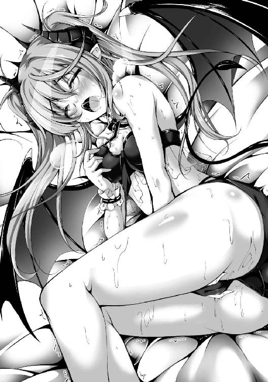
「わたし......あっ、んぃぃ......ぅ、えっち、するんだ......んぁっ!?」
かつて目の当たりにした父と母の情交が想起された。
四歳の頃の記憶も、七歳の頃の記憶も、これまではあまり思い出さないようにしてきた。
しかし、今のミルティスは脳裏に瞬く光景にさほど嫌悪感を抱いていない。
「はぁ......あぁっ......ふぅ......ロミオ、さまぁ......んくぅっ！」
納刀の儀を受ければ、今後一生、精剣の呪いに囚われ続けることになる。
だが、ミルティスにとっては呪いなどではなく、むしろ祝福だった。
ロミオがいなければ生きていけず、ロミオと性交しなければ死んでしまうなど、これ以上ない誓約の証だ。ミルティスは一生に一人としか性交する気はなく、その相手に全てを捧げて、共に生きていきたいと強く思っている。
故に、運命の相手が神子である上に、精剣の使い手など、これ以上を望むべくもない至福だ。
「あっ、あぁぅっ......はやくぅ......んぅ、はぁ......ぁう、んあぁっ......ロミオさまぁ......っ！」
蝋燭の灯火が揺らめく薄明かりの中、淫魔の姫は一心に運命の相手を想い、自慰に耽っていく。
これまでに行ってきた自慰は全て、淫魔故の性衝動を発散するためのもので、文字通りただ自らを慰めていただけだった。
しかし今、彼女はロミオという一人の男のためだけに、これまで可能な限り避け続けてきた淫らな行為で陰部を濡らし、かつてないほど快楽に没頭している。
「ロミオさまぁ......んぅっ、あぁ、あっ......ろみお、さま......あぅっ、んぅぅ！」
自ら求婚した愛しい男の名を呟きながら、少女は今か今かと彼を待ち続ける。
もはや彼女は運命の相手が自らを選んでくれることに、疑いを抱いてはいなかった。
「んふぅ......っ、あぁっ、あ......んぃっ、くぅん......あっ、ぁん......っ」
悪魔族内どころか全ての魔族の中でも弱小氏族の一角と見做されている淫魔族──ミルティスはその族長一家の次女として、この世に生を受けた。
受けてしまった、淫魔として。
よりにもよって、族長一家に。
「あぁっ、あ、ぅあ......んぃ、はぁ......ふぅ、ん......っ、ろみおさ、ま......ぁん......っ！」
淫魔らしからぬ淫魔族の姫、ミルティス。
成人するまでの十五年間、数多の苦難を重ね、幾度となく心を砕いてきた。
その健気な苦心が報われる瞬間は、もう目前にまで迫っている......
運命とは突然やって来るものです。本作の主人公とヒロイン然り、私のもとにも不意打ちのようにやって来てくれまして、こうして書籍化するに至りました。
ＷＥＢ版をご存じの方も、そうでない方も、改めてはじめまして。宙乃塵屑です。
書籍化のお話を頂いた当初、「これは何かの罠か？」と私は本気で疑いました。なにせ拙作がビギニングノベルズの既刊たち（いずれも名作）と肩を並べるなど到底信じられる話ではありません。編集様との電話中でも半信半疑で、私は事の真偽を見極めるため、さりげなく質問してみました。
【デブリ】「あの、なぜ拙作に声を掛けてくださったんですか？ ノクターンノベルズ（私の故郷）にはまだ書籍化されていない名作が山ほどあったかと思うんですけど......」
【編集様】「運命ですね」
【デブリ】「運命」
【編集様】「もう運命としか言い様がない」※実話です（新手の詐欺かと思った）
というわけで、あなたが本書を手にしたことも、全ては運命なのです。
同じく運命に導かれて素晴らしいイラストを描いてくださった舞猫ルル様、そして私を拾って世話してくださった編集長様はもちろんのこと、出版にあたり陰に日向にご尽力頂いた各方面の皆々様、何より本書を手に取ってくださったあなたに、最大の感謝を。ありがとうございました！
ペンネームは「デブリ」と読んでやってください。ひらがな読みだと「そらのごみくず」です。キルタイムコミュニケーション様では初の当て字ペンネームらしい。ご迷惑お掛けしてすみません。
はじめましてアニメと漫画とゲームが大好きな舞猫ルルです。この頃一時間に一回ポチるゲームばっかりしてます。でもたまにはMMORPGの世界に入り浸りたいと思いつつ設定資料集ばかり買って妄想するばかりの日々...まぁ妄想楽しいですから
ビギニングノベルズ
オーク王伝説1
小説 宙乃塵屑
イラスト 舞猫ルル
発行 株式会社キルタイムコミュニケーション
〒104-0041 東京都中央区新富1-3-7ヨドコウビル1Ｆ
編集部 TEL 03-3551-6147／FAX 03-3551-6146
販売部 TEL 03-3555-3431／FAX 03-3551-1208
URL http://ktcom.jp/
©Debris 2016
本書は小説投稿サイト「ノクターンノベルズ」（http://noc.syosetu.com/)に掲載されていたものを、加筆の上書籍化したものです。
※本作品の全部あるいは一部を無断で複製・転載・配信・送信したり、ホームページ上に転載することを禁止します。本作品の内容を無断で改変、改ざん等行うことも禁止します。また、有償・無償にかかわらず本作品を第三者に譲渡することはできません。
※本作品は電子書籍配信用に再編集しております。